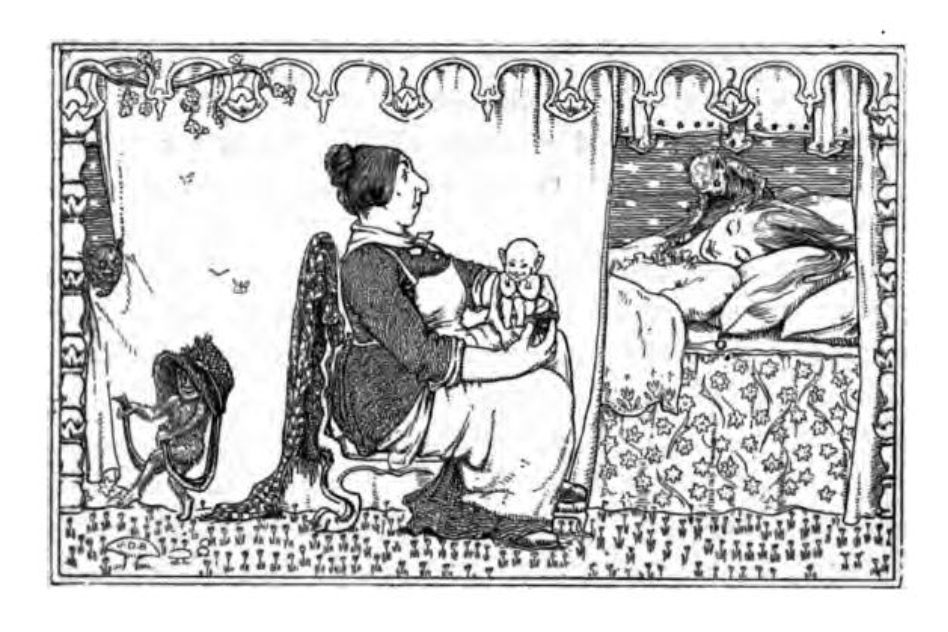
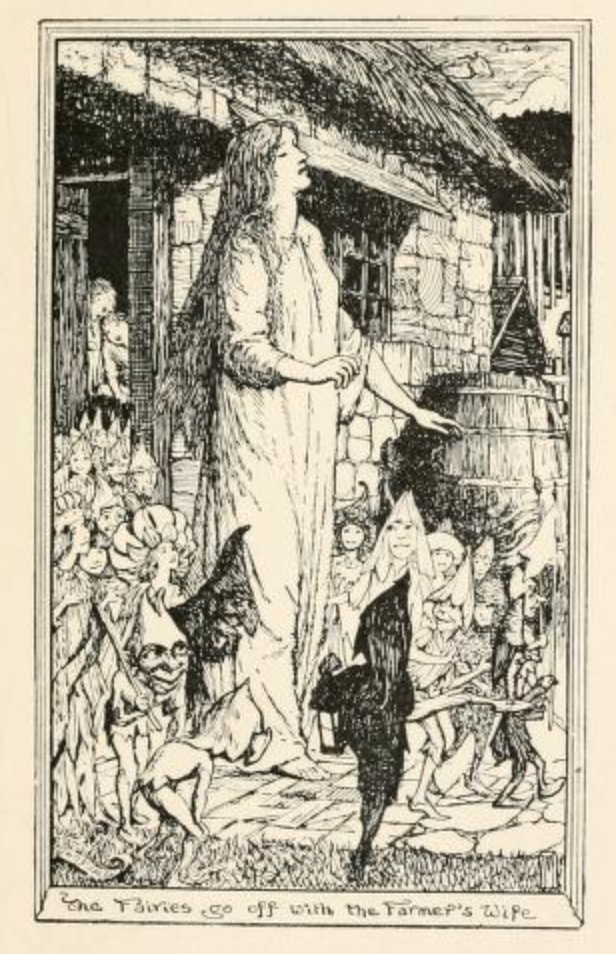
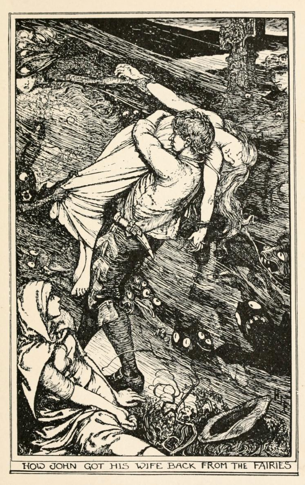

The Fairy Midwife#
In an introduction to the fairy lore in Wales given in W. Y. Evans-Wentz’s The fairy-faith in Celtic countries, 1911, by Pofessor Sir John Rhys (Rhŷs; he was knighted in 1907), we find a brief categorisation of the more common types of tale associated with fairy folklore.
The fairy faith in Wales, 1911
https://archive.org/details/fairyfaithincelt00evanrich/fairyfaithincelt00evanrich/page/134/mode/2up
W. Y. (Walter Yeeling) Evans-Wentz, The fairy-faith in Celtic countries, 1911
p135-7
V. IN WALES
Introduction by The Right Hon. Sir John Rhys, M.A.; D.Litt., F.B.A., Hon. LL.D. of the University of Edinburgh; Professor of Celtic in the University of Oxford; Principal of Jesus College; author of Celtic Folklore, Welsh and Manx, &c.
The folk-lore of Wales in as far as it concerns the Fairies consists of a very few typical tales, such as:—
(i) The Fairy Dance and the usual entrapping of a youth, who dances with the Little People for a long time, while he supposes it only a few minutes, and who if not rescued is taken by them.
(2) There are other ways in which recruits may be led into Fairyland and induced to marry fairy maidens, and any one so led away is practically lost to his kith and kin, for even if he be allowed to visit them, the visit is mostly cut short in one way or another.
(3) A man catches a fairy woman and marries her. She proves to be an excellent housewife, but usually she has had put into the marriage-contract certain conditions which, if broken, inevitably release her from the union, and when so released she hurries away instantly, never to return, unless it be now and then to visit her children. One of the conditions, especially in North Wales, is that the husband should never touch her with iron. But in the story of the Lady of Llyn y Fan Each, in Carmarthenshire, the condition is that he must not strike the wife without a cause three times, the striking being interpreted to include any slight tapping, say, on the shoulder. This story is one of the most remarkable on record in Wales, and it recalls the famous tale of Undine, published in German many years ago by De La Motte Fouqué. It is not known where he found it, or whether the people among whom it was current were pure Germans or of Celtic extraction.
(4) The Fairies were fond of stealing nice healthy babies and of leaving in their place their own sallow offspring. The stories of how the right child might be recovered take numerous forms; and some of these stories suggest how weak and sickly children became the objects of systematic cruelty at the hands of even their own parents. The changeling was usually an old man, and many were the efforts made to get him to betray his identity.
(5) There is a widespread story of the fairy husband procuring for his wife the attendance of a human midwife. The latter was given a certain ointment to apply to the baby’s eyes when she dressed it. She was not to touch either of her own eyes with it, but owing to an unfailing accident she does, and with the eye so touched she is enabled to see the fairies in their proper shape and form. This has consequences: The fairy husband pays the midwife well, and discharges her. She goes to a fair or market one day and observes her old master stealing goods from a stall, and makes herself known to him. He asks her with which eye she sees him. She tells him, and the eye to which he objects he instantly blinds.
(6) Many are the stories about the fairies coming into houses at night to wash and dress their children after everybody is gone to bed. A servant-maid who knows her business leaves a vessel full of water for them, and takes care that the house is neat and tidy, and she then probably finds in the morning some fairy gift left her, whereas if the house be untidy and the water dirty, they will pinch her in her sleep, and leave her black and blue.
(7) The fairies were not strong in their household arrangements, so it was not at all unusual for them to come to the farm-houses to borrow what was wanting to them.
In the neighbourhood of Snowdon the fairies were believed to live beneath the lakes, from which they sometimes came forth, especially on misty days, and children used to be warned not to stray away from their homes in that sort of weather, lest they should be kidnapped by them. These fairies were not Christians, and they were great thieves. They were fond of bright colours. They were sharp of hearing, and no word that reached the wind would escape them. If a fairy’s proper name was discovered, the fairy to whom it belonged felt baffled. [Sir John Rhys tells me that this Snowdon fairy-lore was contributed by the late Lady Rhys, who as a girl lived in the neighbourhood of Snowdon and heard very much from the old people there, most of whom believed in the fairies; and she herself then used to be warned, in the manner mentioned, against being carried away into the under-lake Fairyland.]
Some characteristics of the fairies seem to argue an ancient race, while other characteristics betray their origin in the workshop of the imagination; but generally speaking, the fairies are heterogeneous, consisting partly of the divinities of glens and forests and mountains, and partly of an early race of men more or less caricatured and equipped by fable with impossible attributes. [Cf. Celtic Folklore, Welsh and Manx, pp. 683-4 n., where Sir John Rhys says of his friend. Professor A. C. Haddon:— 'I find also that he, among others, has anticipated me in my theory as to the origins of the fairies: witness the following extract from the syllabus of a lecture delivered by him at Cardiff in 1894 on Fairy Tales:— "What are the fairies? — Legendary origin of the fairies. It is evident from fairy literature that there is a mixture of the possible and the impossible, of fact and fancy. Part of fairydom refers to (i) spirits that never were embodied: other fairies are (2) spirits of environment, nature or local spirits, and household or domestic spirits; (3) spirits of the organic world, spirits of plants, and spirits of animals; (4) spirits of men, or ghosts; and (5) witches and wizards, or men possessed with other spirits. All these, and possibly other elements, enter into the fanciful aspects of Fairyland, but there is a large residuum of real occurrences; these point to a clash of races, and we may regard many of these fairy sagas as stories told by men of the Iron Age of events which happtaed to men of the Bronze Age in their conflicts with men of the Neolithic Age, and possibly these, too, handed on traditions of the Paleolithic Agej" ']
Jesus College, Oxford, October 1910
The fifth identified tale type describes a tale in which “[a] fairy husband procur[es] for his wife the attendance of a human midwife”. In the Aarne-Thompson-Uther (ATU) classification scheme, it is designated as tale type 476.
The tale of The Fairy Midwife, also often referred to as The Fairy Ointment or Fairy Nurse, typically starts late at night, with a knock at the door. A midwife, or nurse, is called upon to help in the delivery or care of a fairy child. As part of their duties, thet are told to wipe a special ointement over the child’s eyes. Mistakenly getting some of the ointment into their own eye, the midwife/nurse becomes capable of seeing into the fairy otherworld from that eye. After unwittingly revealing herself to be so enchanted, the midwife/nurse is punished with the loss of the glamoury eye.
The gist of the tale can be found in the following versions taken from the Irish Schools Collection. In each case, the human visitor is taken to a sumptuous location, and application of the ointment then reveals a terrible scene.
The Fairy Ointment, Irish Schools Collection
https://www.duchas.ie/en/cbes/4649692/4647750/4659237
The Fairy Ointment
One night a ‘midwife’ was called by a man to attend his wife. He took her behind him on a beautiful horse to a beautiful house. She remained there for a week. A few days after the child was born he gave her a special ointment to rub to one of the child’s eyes, telling her be sure not to get it on her hands or any other part of her. But being used to rubbing on ointment with her hand she rubbed on the ointment with her hand, and rubbed her hand to her eye.
When she looked around with this eye everything was changed. Instead of a beautiful house she saw a wretched hut, and instead of a beautiful woman and child in the bed she saw a wrinkled old hag and a horrible looking child. When the week was up the man left her back. With her own eye she saw a beautiful horse and with the one on which she rubbed the ointment she saw only a cabbage stump.
Some time after as she was having her tea in a hotel she saw the same man come in. He walked over to another man and while talking to him he stuck something up his nose. The man started to sneeze and go off in a swoon. When she heard him sneeze she said “God bless us,” and he came to.
The man seeing her and knowing what she did was angry. He came over to her and struck her in the eye she had rubbed the ointment to, and blinded her and said “You will never be able to give away any more secrets on us.”
A Fairy Story, Irish Schools Collection
https://www.duchas.ie/en/cbes/4921757/4903942/5167059
A Fairy Story
One night last Winter on old man came to my house and told us fairy tales of the local district. We listened enraptured to his tales but I remember this one specially as I knew the place names he mentioned. He began thus:
About a century and a half ago there lived in a house near the bridge spanning the Araglen at Kiskeam a midwife name was Nellie O Connor. One night she was rudely awakened from her repose be a loud rapping on the door. She inquired of the stranger who presented himself and asked, what she could do for him. The stranger was riding on a snow white horse. He told her to come with him to attend to a sick person who was gravely ill. She at once readily assented and got up on the horse behind the stranger. They journeyed about two miles along the river bank till they came to a mansion which the nurse did not remember having seen before.
She attended the patient and while she was anointing him with ointment her eye got itchy and she rubbed some of the ointment to it. When she looked again, with one eye she could see the mansion and with the eye to which the ointment was rubbed she could see a circular old ditch which she recognised as Ring’s Fort down in Doon. The people who were flitting around her were only fairies.
She feigned complete ignorance of the situation and when she was being driven home by the stranger she happened to look at the horse. To her surprise and indignation, instead of being riding on a horse, she found she was riding on a plough.
About a week after she went to a fair in Newmarket. She saw a number of fairies sticking straws into peoples’ noses to make them sneeze. Any person who sneezed and did not say “God bless us” would be in the power of the fairies. She saw one fairy going up to a pretty Cailin and made her sneeze. She did not invoke the blessing but the nurse invoked it for her. The fairy turned on her very angrily and asked her which eye she saw him with. She pointed it out to him and he stuck the straw into the eye and blinded her for life. Thus the adventure of Nellie O Connor and the fairies.
In Traces of the elder faiths in Ireland: a folklore sketch: a handbook of Irish pre-Christian traditions, 1901, W. G. Wood-Martin summarises two of the core tenets of the tale in Irish tradition as follows:
… Having rubbed a special ointment on the eyelids, the fairies will become visible as the fairy troop sweeps past the spot, and the gazer be enabled to recognise the prisoner by a peculiarity of dress, or by some token. … p12
The picturesque and beautiful appearance of the “wee folk,” their splendid halls and magnificent feasts, are, it is alleged, mere illusions. If you procure a box of fairy ointment, and rub it on the eyelids, you instantly see everything as it really is. The finely-dressed little people are wizened and deformed imps, the splendid halls are damp earth-floored caverns, the sumptuous feasts are a meagre supply of squalid food, and their treasure chests are filled, not with gold, but with mere heaps of withered leaves and other rubbish. p19.
A review of multiple versions of the tale suggests that there are various ways in which the ointment may affect the human midwife:
the human midwife typically sees a sumptuous scene, and the ointment then reveals an impoverished or devlish aspect;
the human midwife typically sees an impoerished scene, and the ointment then reveals a supmtuous view;
the ointment allows the human midwife to see the fair folk when they are ordinarily invisible to the human eye.
Contemporary Tellings of the Traditional Tale#
In his telling of the tale (Fairy Ointment) on The Sleeping King [CD], Hugh Lupton describes a midwife being taken to a poor, ramshackle location, which is then magically transformed to a splendid palace when the ointment is applied. Lupton prefaces the tale with an opening that situates the events in Norfolk, identifies the faery folk as ferishers, and provides a slightly dark back-story for the (human) mother of the new-born child.
Online, we can find a face to camera telling by Irish storyteller Clare Murphy:
The Fairy Midwife (a telling), Clare Murphy
https://vimeo.com/848688609 (“free” login required)
As Told in Traditional Popular Collections#
In his first collection of English Fairy Tales, 1890, Joseph Jacobs reproduced a version of a tale described in the 1830s by Mrs. Bray. The same tale had been quoted in Folk-Lore earlier that year by E. S. Hartland, and a verbatim copy of Bray’s original also appeared in Hartland’s own 1890 work, English fairy and other folk tales.
“Fairy Ointment”, in Jacobs’ English Fairy Tales, 1890
https://archive.org/details/englishfairytal00jacogoog/page/n242/mode/2up
Joseph Jacobs, English Fairy Tales, 1890
pp.211-214

Fairy Ointment
DAME GOODY was a nurse that looked after sick people, and minded babies. One night she was woke up at midnight, and when she went downstairs, she saw a strange squinny-eyed, little ugly old fellow, who asked her to come to his wife who was too ill to mind her baby. Dame Goody didn’t like the look of the old fellow, but business is business; so she popped on her things, and went down to him. And when she got down to him, he whisked her up on to a large coal-black horse with fiery eyes, that stood at the door; and soon they were going at a rare pace, Dame Goody holding on to the old fellow like grim death.
They rode, and they rode, till at last they stopped before a cottage door. So they got down and went in and found the good woman abed with the children playing about; and the babe, a fine bouncing boy, beside her.
Dame Goody took the babe, which was as fine a baby boy as you’d wish to see. The mother, when she handed the baby to Dame Goody to mind, gave her a box of ointment, and told her to stroke the baby’s eyes with it as soon as it opened them. After a while it began to open its eyes. Dame Goody saw that it had squinny eyes just like its father. So she took the box of ointment and stroked its two eyelids with it. But she couldn’t help wondering what it was for, as she had never seen such a thing done before. So she looked to see if the others were looking, and, when they were not noticing she stroked her own right eyelid with the ointment.
No sooner had she done so, than everything seemed changed about her. The cottage became elegantly furnished. The mother in the bed was a beautiful lady, dressed up in white silk. The little baby was still more beautiful than before, and its clothes were made of a sort of silvery gauze. Its little brothers and sisters around the bed were flat-nosed imps with pointed ears, who made faces at one another, and scratched their polls. Sometimes they would pull the sick lady’s ears with their long and hairy paws. In fact, they were up to all kinds of mischief; and Dame Goody knew that she had got into a house of pixies. But she said nothing to nobody, and as soon as the lady was well enough to mind the baby, she asked the old fellow to take her back home. So he came round to the door with the coal-black horse with eyes of fire, and off they went as fast as before, or perhaps a little faster, till they came to Dame Goody’s cottage, where the squinny-eyed old fellow lifted her down and left her, thanking her civilly enough, and paying her more than she had ever been paid before for such service.
Now next day happened to be market-day, and as Dame Goody had been away from home, she wanted many things in the house, and trudged off to get them at the market As she was buying the things she wanted, who should she see but the squinny-eyed old fellow who had taken her on the coal-black horse. And what do you think he was doing? Why he went about from stall to stall taking up things from each, here some fruit, and there some eggs, and so on; and no one seemed to take any notice.
Now Dame Goody did not think it her business to interfere, but she thought she ought not to let so good a customer pass without speaking. So she ups to him and bobs a curtsey and said: “Gooden, sir, I hopes as how your good lady and the little one are as well as ————”
But she couldn’t finish what she was a-saying, for the funny old fellow started back in surprise, and he says to her, says he: “What! do you see me to-day?”
“See you,” says she, “why, of course I do, as plain as the sun in the skies, and what’s more,” says she, “I see you are busy too, into the bargain.”
“Ah, you see too much,” said he; “now, pray, with which eye do you see all this?”
“With the right eye to be sure,” said she, as proud as can be to find him out.
“The ointment! The ointment!” cried the old pixy thief. “Take that for meddling with what don’t concern you: you shall see me no more.” And with that he struck her on her right eye, and she couldn’t see him any more; and, what was worse, she was blind on the right side from that hour till the day of her death.
Notes, pp.251-2
XL. FAIRY OINTMENT.
Source. — Mrs. Bray, The Tamar and the Tavy, i. 174 (letters to Southey), as quoted by Mr. Hartland in Folk-Lore, i. 207-8. I have christened the anonymous midwife and euphemised her profession.
Parallels. — Mr. Hartland has studied Human Midwives in the Archaeol. Review iv., and parallels to our story in Folk-Lore, i. 209, seq.; the most interesting of these is from Gervase of Tilbury (xiii. cent.), Otia Imper., iii. 85, and three Breton tales given by M. Sebillot (Contes, ii. 42; Litt. orale, 23; Trad, et Superst. i. 109). Cf. Prof. Child, i. 339; ii. 505.
Several years later, Andrew Lang would include another variant of the tale as published by Patrick Kennedy in the 1860s, with illustrations by H. J. Ford.
“The Fairy Nurse”, in The Lilac Fairy Book, Andrew Lang, c.1910
https://archive.org/details/lilacfairybook00lang/page/54/mode/2up
Andrew Lang, illus. H. J. Ford, The lilac fairy book, c1910
pp. 54-61

THE FAIRY NURSE
THERE was once a little farmer and his wife living near Coolgarrow. They had three children, and my story happened while the youngest was a baby. The wife was a good wife enough, but her mind was all on her family and her farm, and she hardly ever went to her knees without falling asleep, and she thought the time spent in the chapel was twice as long as it need be. So, friends, she let her man and her two children go before her one day to Mass, while she called to consult a fairy man about a disorder one of her cows had. She was late at the chapel, and was sorry all the day after, for her husband was in grief about it, and she was very fond of him.
Late that night he was wakened up by the cries of his children calling out, ‘Mother! mother!’ When he sat up and rubbed his eyes, there was no wife by his side, and when he asked the little ones what was become of their mother, they said they saw the room full of nice little men and women, dressed in white and red and green, and their mother in the middle of them, going out by the door as if she was walking in her sleep. Out he ran, and searched everywhere round the house, but neither tale nor tidings did he get of her for many a day.
Well, the poor man was miserable enough, for he was as fond of his woman as she was of him. It used to bring the salt tears down his cheeks to see his poor children neglected and dirty, as they often were, and they’d be bad enough only for a kind neighbour that used to look in whenever she could spare time. The infant was away with a nurse.
About six weeks after - just as he was going out to his work one morning — a neighbour, that used to mind women when they were ill, came up to him, and kept step by step with him to the field, and this is what she told him.
‘Just as I was falling asleep last night, I heard a horse’s tramp on the grass and a knock at the door, and there, when I came out, was a fine-looking dark man, mounted on a black horse, and he told me to get ready in all haste, for a lady was in great want of me. As soon as I put on my cloak and things, he took me by the hand, and I was sitting behind him before I felt myself stirring. “Where are we going, sir?” says I. “You’ll soon know,” says he; and he drew his fingers across my eyes, and not a ray could I see. I kept a tight grip of him, and I little knew whether he was going backwards or forwards, or how long we were about it, till my hand was taken again, and I felt the ground under me. The fingers went the other way across my eyes, and there we were before a castle door, and in we went through a big hall and great rooms all painted in fine green colours, with red and gold bands and ornaments, and the finest carpets and chairs and tables and window curtains, and grand ladies and gentlemen walking about. At last we came to a bedroom, with a beautiful lady in bed, with a fine bouncing boy beside her. The lady clapped her hands, and in came the Dark Man and kissed her and the baby, and praised me, and gave me a bottle of green ointment to rub the child all over.
‘Well, the child I rubbed, sure enough; but my right eye began to smart, and I put up my finger and gave it a rub, and then stared, for never in all my life was I so frightened. The beautiful room was a big, rough cave, with water oozing over the edges of the stones and through the clay; and the lady, and the lord, and the child weazened, poverty-bitten creatures — nothing but skin and bone — and the rich dresses were old rags. I didn’t let on that I found any difference, and after a bit says the Dark Man, “Go before me, to the hall door, and I will be with you in a few moments, and see you safe home.” Well, just as I turned into the outside cave, who should I see watching near the door but poor Molly. She looked round all terrified, and says she to me in a whisper, “I’m brought here to nurse the child of the king and queen of the fairies; but there is one chance of saving me. All the court will pass the cross near Templeshambo next Friday night, on a visit to the fairies of Old Ross. If John can catch me by the hand or cloak when I ride by, and has courage not to let go his grip, I’ll be safe. Here’s the king. Don’t open your mouth to answer. I saw what happened with the ointment.”
‘The Dark Man didn’t once cast his eye towards Molly, and he seemed to have no suspicion of me. When we came out I looked about me, and where do you think we were but in the dyke of the Rath of Cromogue. I was on the horse again, which was nothing but a big rag-weed, and I was in dread every minute I’d fall off; but nothing happened till I found myself in my own cabin. The king slipped five guineas into my hand as soon as I was on the ground, and thanked me, and bade me good-night. I hope I’ll never see his face again. I got into bed, and couldn’t sleep for a long time; and when I examined my five guineas this morning, that I left in the table drawer the last thing, I found five withered leaves of oak - - bad luck to the giver!’
Well, you may all think the fright,- and the joy, and the grief the poor man was in when the woman finished her story. They talked and they talked, but we needn’t mind what they said till Friday night came, when both were standing where the mountain road crosses the one going to Ross.
There they stood, looking towards the bridge of Thuar, in the dead of the night, with a little moonlight shining from over Kilachdiarmid. At last she gave a start, and ‘By this and by that,’ says she, ‘here they come, bridles jingling and feathers tossing!’ He looked, but could see nothing; and she stood trembling and her eyes wide open, looking down the way to the ford of Ballinacoola. ‘I see your wife,’ says she, ‘riding on the outside just so as to rub against us. We’ll walk on quietly, as if we suspected nothing, and when we are passing I’ll give you a shove. If you don’t do your duty then, woe be with you!’
Well, they walked on easy, and the poor hearts beating in both their breasts; and though he could see nothing, he heard a faint jingle and trampling and rustling, and at last he got the push that she promised. He spread out his arms, and there was his wife’s waist within them, and he could see her plain; but such a hullabulloo rose as if there was an earthquake, and he found himself surrounded by horrible-looking things, roaring at him and striving to pull his wife away. But he made the sign of the cross and bid them begone in God’s name, and held his wife as if it was iron his arms were made of. Bedad, in one moment everything was as silent as the grave, and the poor woman lying in a faint in the arms of her husband and her good neighbour. Well, all in good time she was minding her family and her business again; and I’ll go bail, after the fright she got, she spent more time on her knees, and avoided fairy men all the days of the week, and particularly on Sunday.
It is hard to have anything to do with the good people without getting a mark from them. My brave nurse didn’t escape no more than another. She was one Thursday at the market of Enniscorthy, when what did she see walking among the tubs of butter but the Dark Man, very hungry-looking, and taking a scoop out of one tub and out of another. ‘Oh, sir,’ says she, very foolish, ‘I hope your lady is well, and the baby.’ ‘Pretty well, thank you,’ says he, rather frightened like. ‘How do I look in this new suit?’ says he, getting to one side of her. ‘I can’t see you plain at all, sir,’ says she. ‘Well, now?’ says he, getting round her back to the other side. ‘Musha, indeed, sir, your coat looks no better than a withered dock-leaf.’ ‘Maybe, then,’ says he, ‘it will be different now,’ and he struck the eye next him with a switch.
Friends, she never saw a glimmer after with that one till the day of her death.
‘Legendary Fictions of the Irish Celts,’ by Patrick Kennedy.

Half a century earlier, three variants of the tale appeared in Robert Hunt’s Popular romances of the west of England, or, The drolls, traditions, and superstitions of old Cornwall in 1865.
The first, set between Zennor and St. Ives, tells of a woman contracted by a rich stranger to act as nursemaid to a youndg child, and foster it in her own home, subject to certain conditions, including washing the child’s face each morning in a particular way.
“Nursing a Fairy”, in Popular romances of the west of England, Robert Hunt, 1865
https://archive.org/details/s1popularromance00huntuoft/page/69/mode/2up
Robert Hunt, illus. George Cruikshank, Popular romances of the west of England, or, The drolls, traditions, and superstitions of old Cornwall, 1865
pp. 69-71
NURSING A FAIRY.
A THRIFTY housewife lived on one of the hills between Zennor Church-town and St Ives. One night a gentleman came to her cottage, and told her he had marked her cleanliness and her care: that he had a child whom he desired to have brought up with much tenderness, and he had fixed on her. She should be very handsomely rewarded for her trouble, and he shewed her a considerable quantity of golden coin. Well, she agreed, and away she went with the gentleman to fetch this child. When they came to the side of Zennor hill, the gentleman told the woman he must blindfold her, and she, good, easy soul, having heard of such things, fancied this was some rich man’s child, and that the residence of its mother was not to be known, so she gave herself great credit for cunning in quietly submitting. They walked on some considerable distance. When they stopped the handkerchief was taken from her eyes, and she found herself in a magnificent room, with a table spread with the most expensive luxuries, in the way of game, fruits, and wines. She was told to eat, and she did so with some awkwardness, and not a little trembling. She was surprised that so large a feast should have been spread for so small a party, — only herself and the master. At last, having enjoyed luxuries such as she never tasted before or since; a silver bell was rung, and a troop of servants came in, bearing a cot covered with satin, in which was sleeping the most beautiful babe that human eyes ever gazed on. She was told this child was to be committed to her charge; she should not want for anything; but she was to obey certain laws. She was not to teach the child the Lord’s Prayer; she was not to wash it after sundown: she was to bathe it every morning in water, which she would find in a white ewer placed in the child’s room: this was not to be touched by any one but herself, and she was to be careful not to wash her own face in this water. In all other respects she was to treat the child as one of her own children. The woman was blinded again, and the child having been placed in her arms, away she trudged, guided by the mysterious father. When out on the road, the bandage was removed from her eyes, and she found she had a small baby in her arms, not remarkably good looking, with very sharp, piercing eyes, and but ordinarily dressed. However, a bargain is a bargain; so she resolved to make the best of it, and she presented the babe to her husband, telling him so much of the story as she thought it prudent to trust him with. For years the child was with this couple. They never wanted for anything; meat, and even wines, were provided, — as most people thought, — by wishing for them; clothes, ready-made, were on the child’s bed when required; and the charmed water was always in the magic ewer. The little boy grew active and strong. He was remarkably wild, yet very tractable, and he appeared to have a real regard for his “big mammy,” as he called the woman. Sometimes she thought the child was mad. He would run, and leap, and scream, as though he were playing with scores of boys, when no soul was near him. The woman had never seen the father since the child had been with them; but ever and anon, money was conveyed to them in some mysterious manner. One morning, when washing the boy, this good woman, who had often observed how bright the water made the face of the child, was tempted to try if it would improve her own beauty. So directing the boy’s attention to some birds singing on a tree outside the window, she splashed some of the water up into her face. Most of it went into her eye. She losed it instinctively, and upon opening it, she saw a number of little people gathered round her and playing with the boy. She said not a word, though her fear was great; and she continued to see the world of small people surrounding the world of ordinary men and women, being with them, but not of them. She now knew who the boy’s playmates were, and she often wished to speak to the beautiful creatures of the invisible world who were his real companions; but she was discreet, and kept silence.
Curious robberies had been from time to time committed in St Ives market, and although the most careful watch had been kept, the things disappeared, and no thief detected. One day our good housewife was at the market, and to her surprise she saw the father of her nursling. Without ceremony she ran up to him, — at a moment when he was putting some choice fruit by stealth into his pocket, — and spoke to him. “So, thou seest me, dost thou?” “To be sure I do, and know ‘ee too,” replied the woman. “Shut this eye,” putting his finger on her left eye. “Canst see me now?” “Yes, I tell ‘ee, and know ‘ee too,” again said the woman.
“Water for elf, not water for self;
You ‘ve lost your eye, your child, and yourself,”
said the gentleman. From that hour she was blind in the right eye. When she got home the boy was gone. She grieved sadly, but she never saw him more, and this once happy couple became poor and wretched.
The second variation, set between Pendeen and Penzance, describes how a certain Nancy Tregier, who, on visiting a local wise woman, was tempted to try an ointment she had seen the wise woman administering to someone else. But the ointment that appears to have had a dual purpose. And there were consequences…
“The Fairy Ointment”, in Popular romances of the west of England, Robert Hunt, 1865
https://archive.org/details/s1popularromance00huntuoft/page/103/mode/2up
Robert Hunt, illus. George Cruikshank, Popular romances of the west of England, or, The drolls, traditions, and superstitions of old Cornwall, 1865 pp. 103-6
THE FAIRY OINTMENT.
MANY years since, there lived as housekeeper with a celebrated squire, whose name is associated with the history of his native country, one Nancy Tregier. There were many peculiarities about Nancy; and she was, being a favourite with her master, allowed to do much as she pleased. She was in fact a petted, and, consequently, a spoiled servant. Nancy left Pendeen one Saturday afternoon to walk to Penzance, for the purpose of buying a pair of shoes. There was an old woman, Jenny Trayer, living in Pendeen Cove — who had the reputation of being a witch — or, as some people mildly put it, “who had strange dealings;” and with her Nancy desired, for sundry reasons, best known to herself, to keep on the closest of terms. So on this Saturday, Nancy first called on the old woman to inquire if she wished to have anything brought home from Penzance. Tom, the husband of Nancy’s friend, did no work; but now and then he would go to sea for an hour or two and fish. It is true everybody gave Jenny just what she asked for her fish, out of pure fear. Sometimes they had a “venture” with the smugglers, who, in those days, carried on a roaring trade in Pendeen Cove. The old Squire was a justice; but he winked very hard, and didn’t know anything about the smugglers. Indeed, some ill-natured people, — and there are always such to be found in any nook or corner, — said Nancy often took her master home a choice bottle of Cogniac; even a case of “Hollands” now and then; and especially when there was to be a particularly “great run,” there were some beautiful silk handkerchiefs to be seen at the Squire’s. But this is beyond our story. When Nancy went into Jenny’s cottage, Tom was there, and right busy was she in preparing some ointment and touching her husband’s eyes with it: this Jenny tried to hide in the mouth of the oven at the side of the chimney. Tom got up and said he must be off, and left the two women together. After a few idle compliments, Jenny said that Nancy must have something to drink before she started for Penzance, and she went to the spence for the bottles. Nancy, ever curious, seized the moment, dipped her finger into the pot of green ointment, and, thinking it was good for the eyes, she just touched her right eye with it before Jenny returned. They then took a horn or two together, and being thus spliced, Nancy started for Penzance.
Penzance market was in those days entirely in the street; even the old market-house had not yet an existence. Nancy walked about doing a little business and a great deal of gossiping, when amongst the standings in Market Jew Street, whom should Nancy see but Tom Trayer, picking off the standings, shoes, stockings, hanks of yarn, and pewter spoons, — indeed some of all the sorts of things which were for sale. Nancy walked up to him, and taking him by the arm said, “Tom! ar’then’t ashamed to be here carrying on such a game? However thee canst have the impudence, I can’t think, to be picking the things from the standings and putting them in thy pocket in broad daylight, and the people all around thee.” Tom looked very much surprised when Nancy spoke to him. At last he said, “Is that you, Nancy — which eye can you see me upon?” Nancy shut her left eye, this made no difference, she then shut her right eye, and, greatly to her surprise, she saw all the people but she no longer saw Tom. She opened her right eye and there was Tom as before. She winked, and winked, and was surprised you may be sure to find that she could not see Tom with either eye. “Now Nancy,” said Tom, “right or left?” “Well,” said Nancy, “‘tis strange; but there is something wrong with my left eye.” [The tale, "Nursing a Fairy," (page 71,) where a similar incident occurs, will be remembered.]
“Oh, then, you see me with the right, do you.”
Then Tom put his finger on her right eye, and from that moment she was blind on that side.
On her way home, Nancy was always going off the road on her blind side; but the hedges kept her from wandering far away. On the downs near Pendeen there were no hedges, so Nancy wandered into a furze brake, — night came on, she could not find her way out, and she was found in it the next morning fast asleep. The old Squire was out hunting in the early morning, according to his usual custom. In passing along the road leading to Carnyorth, he saw a woman’s knitting work hanging on a bramble, and the yarn from the stocking leading away into the brake. He took the yarn in his hand and followed it until he came to the old woman, who had the ball in her pocket. When the Squire awakened the old woman, she told him the story which I have told you. Her master, however, said that he didn’t believe she had been into Penzance at all, but that she had stayed in the Cove and got drunk: that when dark night came she had endeavoured to find her way home — lost her road — fallen down and probed her eye out on a furze bush, and then gone off in drunken unconsciousness. Nancy told her master that he was no better than an unbelieving heathen, and to the day of her death she protested that Tom Trayer put her eye out. Jenny’s ointment is said to have been made with a four-leaved clover, gathered at a certain time of the moon. This rendered Fairyland visible, and made men invisible.
In passing, it is worth notig that the tale could be turned into something of a droll, playing on the “so had Nancy had a drink?” interpretation. The smuggling elements also add a nice bit of colour and could form the basis of a side-story.
The third tale is a variant of the second, with housekeeper renamed and the squire identified.
“How Joan Lost the Sight of Her Eye”, in Popular romances of the west of England, Robert Hunt, 1865
https://archive.org/details/s1popularromance00huntuoft/page/103/mode/2up
Robert Hunt, illus. George Cruikshank, Popular romances of the west of England, or, The drolls, traditions, and superstitions of old Cornwall, 1865
pp. 106-8
Another version of this story, varying in a few details, was given me by a gentleman a native of St Levan. It is as follows:—
HOW JOAN LOST THE SIGHT OF HER EYE.
JOAN was housekeeper to Squire Lovell, and was celebrated for her beautiful knitting. One Saturday afternoon Joan wished to go to Penzance to buy a pair of shoes for herself, and some things for the Squire. So the weather being particularly fine, away she trudged.
Joan dearly loved a bit of gossip, and always sought for company. She knew Betty Trenance was always ready for a jaunt: to be sure, everybody said Betty was a witch; but, says Joan, “Witch or no witch, she shall go; bad company is better than none.”
Away went Joan to Lemorna, where Betty lived. Arrived at Betty’s cottage, she peeped through the latch-hole, (the finger-hole,) and saw Betty rubbing some green ointment on the children’s eyes. She watched till Betty Trenance had finished, and noticed that she put the salve on the inner end of the chimney stool, and covered it over with a rag. Joan went in, and Betty was delighted sure enough, to see her, and sent the children out of the way. But Betty couldn’t walk to Penzance, she was suffering pain and she had been taking milk and suet, and brandy and rue, and she must have some more. So away went Betty to the other room for the bottle.
Joan seized the moment, and taking a very small bit of the ointment on her finger, she touched her right eye with it. Betty came with the bottle, and Joan had a drink; when she looked round she was surprised to see the house swarming with small people. They were playing all sorts of pranks on the key-beams and rafters. Some were swinging on cobwebs, some were riding the mice, and others were chasing them into and out of the holes in the thatch. Joan was surprised at the sight, and thought she must have a four-leaved clover about her.
However, without stopping to take much drink, she started alone for Penzance. She had wasted, as it was, so much time, that it was nearly dark when she reached the market.
After having made her purchases, and as she was about to leave the market, who should Joan spy but Betty’s husband, Tom Trenance. There he was, stealing about in the shadows, picking from the standings, shoes and stockings from one, hanks of yarn from another, pewter spoons from a third, and so on. He stuffed these things into capacious pockets, and yet no one appeared to notice Tom.
Joan went forth to him.
“Aren’t ye ashamed to be here in the dark carrying on such a game?”
“Is that you, Dame Joan,” says Tom; “which eye can you see me upon?”
After winking, Joan said she could see Tom plain enough with her right eye.
She had no sooner said the word than Tom Trenance pointed his finger to her eye, and she lost the sight of it from that hour.
“The work of the world” had Joan to find her way out of Penzance. She couldn’t keep the road, she was always tumbling into the ditch on her blind side. When near the Fougou, poor Joan, who was so weary that she could scarcely drag one leg after the other, prayed that she might find a quiet old horse on which she might ride home.
Her desire was instantly granted. There, by the roadside, stood an old bony white horse, spanned with its halter.
Joan untied the halter from the legs and placed it on the head of the horse; she got on the hedge, and seated herself on the horse’s back.
There she was mounted, “Gee wup, gee wup; k’up, k’up, k’up.” The horse would not budge. Busy were Joan’s heels rattling against the ribs of the poor horse, and thwack, thwack went a thorn stick over his tail, and by and by the old blind brute began to walk. Joan beat, and kicked, and k’uped, and coaxed, the horse went but little faster until it got to the top of the hill..
Then away, away, like the wind it went through Toldava Lanes, and it swelled out until the horse became as high as the tower. Over hedges and ditches, across all the corners that came into the road, on went the horse. Joan held on by the mane with both hands, and shouted, “Woa! woa! woey!” until she could shout no longer.
At length they came to Toldava Moor; the “ugly brute” took right away down towards the fowling pool, when Joan fearing he might plunge in and drown her, let go her hold.
The wind was blowing so strong, and the pair were going so fast against it, that Joan was lifted off, over the hind quarters of the horse, and by luck she fell soft on the rushes at the very edge of the fowling pool.
When she looked up, Joan saw whatever she had been riding going down the “bottom” in a blaze of fire, and the devil riding after, with lots of men, horses, and hounds, all without heads. All the marketing was lost; and in getting through the bogs, Joan had her shoes dragged from her feet. At last she got to Trove Bottoms, and seeing the Bougd (sheep-house,) she clambered over the hedge as she best could; got into it, and laying herself down amongst the sheep she soon fell fast asleep, thoroughly wearied out.
She would have slept for a week, I believe, if she had not been disturbed. But, according to custom on Sunday morning, the Squire and his boys came out to the Downs to span the sheep, and there, greatly to their surprise, they found her.
They got the miserable woman home between them. The Squire charged her with having got drunk, and said her eye had been scratched out by a furze bush; but Joan never wandered from her story, and to the day of her death she told it to all young women, warning them never to meddle with “Fairy Salve.”
An Aside — Bottrell’s Cornish Traditions, 1870-1880#
In passing, the Nancy Tregier tale is also mentioned in passing a review of a collection of Cornish tales self-published by William Bottrell in 1871.
Bottrell’s Traditions of West Cornwall, 1871
The Saturday Review of Politics, Literature, Science and Art 1871-02-25: Vol 31 Iss 800
p.250
BOTTRELL’S TRADITIONS OF WEST CORNWALL. [Traditions and_Hearthside Stories of West Cornwall. By William Bottrell. London: Trübner & Co. Penzance: W. Cornish. 1870.] ALTHOUGH traversing to some extent the same ground asMr. Hawker’s Ballads and Traditions, and Mr. Hunt’s charming Romances and Drolls of the West of England, this volume by “An Old Celt,” whom internal evidence proves to be familiar from his youth up with the places and people he describes, has a speciality of its own, in that it describes the legends of West Cornwall in the ipsissima verba of the local droll-tellers. To read them is to get a lesson in the dialect of the districts to which they are seculiar. A little abridged — as indeed there was need they should be — to suit the rarer leisure of readers who have something else to do than listen to interminable tales about giants, fairies, piskies, and demons that never were, these hearthside stories bear in all else the strongest impress of orally transmitted legends which it has been the “labour of love” of one born in the midst of the region whence they sprung to collect and commit to writing. And hence, though Tom the Giant and Jack the Tinkard, the giants Bolster and Wrath, the Mayor of Market-Jew, and Nancy Tregier who experimented with the fairy ointment, have met us before in the “Drolls” which Mr. Hunt published some five years ago, a still greater interest invests the introduction to them with which Mr. Bottrell has favoured us, inasmuch as we now hear them talk, and hear their descendants and followers talk about them, in the “lingo” understanded in those parts where they played their pranks, as is “well attested, and as well believed.”
But on inspection, I find no variant of the Nancy Tregier tale in any of the volumes, let alone the first.
Bottrell’s Traditions and Hearthside Stories of West Cornwall, three volumes
William Bottrell, Traditions and Hearthside Stories of West Cornwall, 1870
William Bottrell, Traditions and hearthside stories of West Cornwall [Second Series], 1873
William Bottrell, Stories and folk-lore of West Cornwall [Third Series], 1880
The Tale According to Mrs. Bray#
The version of the tale that several of the English folkorists seem to have picked up on was originally communicated by historical novelist Anna Eliza Bray, wife of the Vicar of Tavistock, to one time poet Lauareate Robert Southey. In the early 1830s, she had maintained a regular correspondence with him, her letters covering a wide range of subjects of local interest. The letters were later collected and published in a three volume work, Traditions, legends, superstitions, and sketches of Devonshire on the borders of the Tamar and the Tavy.
Nearly ready, The Tamar and the Tavy, 1836
https://britishnewspaperarchive.co.uk/viewer/bl/0001652/18360125/013/0001
Globe - Monday 25 January 1836
Nearly ready, 3 vols. post 8vo. DESCRIPTION of that part of DEVONSHIRE bordering on the Tamar and the Tavy; its Natural History, Manners, and Customs, Superstitionn, Scenery, Antiquities, Biographv of Eminent Persons, &c. &c. In a Series Letters to R. Southey, Esq. Mrs. BRAY, Author of ‘Travels in Normandy,’ ‘Fitz of Fitzford,’ ‘The Talba,’ and ‘De Foix.’ John Murray. Albemarle-street.
Traditions of the Tamar and the Tavy, 3 vols, Mrs. Bray, 1838
Traditions, legends, superstitions, and sketches of Devonshire on the borders of the Tamar and the Tavy, illustrative of its manners, customs, history, antiquities, scenery, and natural history, in three volumnes.
volume II: https://archive.org/details/b33282419_0002
volume III: https://archive.org/details/b33282419_0003
In the tenth letter of the first volume, dated Vicarage, Tavistock, April 24th, 1832, Mrs. Bray gives the version of the tale that would be reprinted by Hartland and Jacobs almost sixty years later.
Letter to Robert Southey, April, 1832
https://archive.org/details/b33282419_0001/page/182/mode/2up
Mrs. Anna Eliza Bray, Traditions, legends, superstitions, and sketches of Devonshire on the borders of the Tamar and the Tavy, illustrative of its manners, customs, history, antiquities, scenery, and natural history, Vol. I, 1838
p183-8
LETTER X.
TO ROBERT SOUTHEY, ESQ.
Vicarage, Tavistock, April 24th, 1832.
…
Once upon a time there was, in this celebrated town, a Dame Somebody, I do not know her name, and as she is a real character, I have no right to give her a fictitious one. All I with truth can say, is, that she was old, and nothing the worse for that; for age is, or ought to be, held in honour as the source of wisdom and experience. Now this good old woman lived not in vain, for she had passed her days in the useful capacity of a nurse; and as she approached the term of going out of the world herself, she was still useful in her generation, by helping others into it—she was, in fact, the Sage-femme of the village; for though I have the utmost dislike to mixing up French, or any foreign words, with the good, plain English of my native land, I here for once venture on a French expression, because it is, in certain particulars, considered as a refinement so much in fashion, that I must not venture to neglect it.
One night, about twelve o’clock in the morning, as the good folks say who tell this tale, Dame Somebody had just got comfortably into bed, when rap, rap, rap came on her cottage door, with such bold, loud, and continued noise, that there was a sound of authority in every individual knock. Startled and alarmed by the call, she arose from her bed, and soon learnt that the summons was a hasty one to bid her attend on a patient who needed her help. She opened her door; when the summoner appeared to be a strange, squint-eyed, little, ugly, old fellow, who had a look, as she said, very like a certain dark personage, who ought not at all times to be called by his proper name. Not at all prepossessed in favour of the errand by the visage of the messenger, she nevertheless could not, or dared not resist the command to follow him straight, and attend upon “his wife.”
“Thy wife!” thought the good dame: “Heaven. forgive me; but as sure as I live I be going to the birth of a little divel.” A large coal-black horse, with eyes like balls of fire, stood at the door. The ill-looking old fellow, without more ado, whisked her up on a high pillion in a minute, seated himself before her, and away went horse and riders, as if sailing through the air, rather than trotting on the ground. How Dame Somebody got to the place of her destination she could not tell; but it was a great relief to her fears when she found herself set down at the door of a neat cottage, saw a couple of tidy children, and remarked her patient to be a decent-looking woman, having all things about her fitting the time and the occasion.
A fine, bouncing babe soon made its appearance, who seemed very bold on its entry into, life, for it gave the good dame a box on the ear, as, with the coaxing and cajolery of all good old nurses, she declared the “sweet little thing to be very like its father.” The mother said nothing to this, but gave nurse a certain ointment with directions that she should “strike the child’s eyes with it.” Now you must know that this word strike in our Devonshire vocabulary, does not exactly mean to give a blow, but rather what is opposite, to rub, smooth down, or touch gently. The nurse performed her task, though she thought it an odd one: and as it is nothing new that old nurses are generally very curious, she wondered what it could be for; and thought that, as no doubt it was a good thing, she might just as well try it upon her own eyes as well as those of the baby; so she made free to strike one of them by way of trial; when, O! ye powers of fairy land, what a change was there!
The neat, but homely cottage, and all who were in it, seemed all on a sudden to undergo a mighty transformation; some for the better, some for the worse. ‘Che new-made mother appeared as a beautiful lady attired in white; the babe was seen wrapped in swaddling clothes of a silvery gauze. It looked much prettier than before, but still maintamed the elfish cast of the eye, like his redoubted father: whilst two or three children more had undergone a metamorphosis as uncouth as that recorded by Ovid when the Cercopians were transformed into apes. For there sat on either side the bed’s head, a couple of little flat-nosed imps, who with “mops and mows,” and with many a grimace and grin, were “busied to no end” in scratching their own polls, or in pulling the fairy lady’s ears with their long and hairy paws.
The dame, who beheld all this, fearing she knew not what in the house of enchantment, got away as fast as she could, without saying one word about “striking” her own eye with the magic ointment, and what she had beheld in consequence of doing so. [It has been the popular belief of all ages that no mortal can see a fairy without his eyes being rubbed with a magic ointment. Cornelus Agrippa, if I remember right, though it is long since I have seen his,book, gives a very amusing receipt for compounding such a salve,] ‘The sour-looking old fellow once more handed her up on the coal-black horse, and sent her home in a whip-sissa. Now what a whip-sissa means is more than I can tell, though I consider myself to be tolerably well acquainted with the tongues of this « West Countrie.” It may mean, perhaps, “Whip, says he,” in allusion to some gentle intimation being feelingly given by the rider to the horse’s sides with a switch, that he should use the utmost dispatch; but my derivation of the word, like that of some better etymologists on difficult occasions, may be a little far fetched; I, therefore, leave the point to be settled. by the learned. Certain it is, the old woman returned home much faster than she went. But mark the event.
On the next market-day, when she sallied forth to sell her eggs, who should she see but the same, wicked-looking old fellow, busied, like a rogue as he was, in pilfermg sundry articles from stall to stall.
“Ho! ho!” thought the dame, “have I caught you, you old thief? But I’ll let you see I could set master mayor and the two town constables on your back, if I chose to be telling.” So up she went, and with that bold free sort of air, which persons, who have learnt secrets that ought not to be known, are apt to assume when they address any great rogue hitherto considered as a superior, she inquired carelessly after his wife and child, and hoped both were as well as could be expected.
“What!” exclaimed the old pixy thief, “do you see me to day?”
“See you! to be sure I do, as plain as I see the sun in the skies; and I see you are busy into the bargain.”
“Do you so!” cried he: “Pray with which eye do you see all this?”
“With the right eye to be sure.”
“The ointment! the ointment!” exclaimed the old fellow: “take that for meddling with what did not belong to you—you shall see me no more.”
He struck her eye as he spoke, and from that hour till the day of her death she was blind on the right side; thus dearly paying for having gratified an idle curiosity in the house of a pixy.
…
I remain, my dear sir,
very faithfully yours,
ANNA ELIZA BRAY.
As has been mentioned previously, the tale was also reprinted verbatim by E. S. Hartland in English fairy and other folk tales.
“The Fairy’s Midwife”, in English fairy and other folk tales, E.S. Hartland, c.1906
https://archive.org/details/englishfairyothe00hartiala/page/90/mode/2up
Edwin Sidney Hartland, English fairy and other folk tales, 1890
pp.91-4
THE FAIRY’S MIDWIFE. [Mrs. Bray, The Borders of the Tamar and the Tavy, vol i. p. 174.]
Once upon a time there was, in this celebrated town, a Dame Somebody. I do not know her name. All I with truth can say is that she was old, and nothing the worse for that; for age is, or ought to be, held in honour as the source of wisdom and experience. Now this good old woman lived not in vain, for she had passed her days in the useful capacity of a nurse; and as she approached the term of going out of the world herself, she was still useful in her generation by helping others into it — she was in fact the Sage-femme of the village.
One night about twelve o’clock in the morning, as the good folks say who tell the tale. Dame Somebody had just got comfortably into bed, when rap, rap, rap, came on her cottage door, with such bold, loud, and continued noise, that there was a sound of authority in every individual knock. Startled and alarmed by the call, she arose, and soon learnt that the summons was a hasty one to bid her attend on a patient who needed her help. She opened her door; when the summoner appeared to be a strange, squint-eyed, little, ugly, old fellow, who had a look, as she said, very like a certain dark personage, who ought not at all times to be called by his proper name. Not at all prepossessed in favour of the errand by the visage of the messenger, she nevertheless could not, or dared not, resist the command to follow him straight and attend upon “his wife.”
“Thy wife!” thought the good dame: “Heaven forgive me; but as sure as I live I be going to the birth of a little divel.” A large coal-black horse, with eyes like balls of fire, stood at the door. The ill-looking old fellow, without more ado, whisked her up on a high pillion in a minute, seated himself before her, and away went horse and riders, as if sailing through the air rather than trotting on the ground. How Dame Somebody got to the place of her destination she could not tell; but it was a great relief to her fears when she found herself set down at the door of a neat cottage, saw a couple of tidy children, and remarked her patient to be a decent-looking woman, having all things about her fitting the time and the occasion.
A fine bouncing babe soon made its appearance, and seemed very bold on its entry into life, for it gave the good dame a box on the ear, as, with the coaxing and cajolery of all good old nurses, she declared the “sweet little thing to be very like its father.” The mother said nothing to this, but gave nurse a certain ointment with directions that she should “strike the child’s eyes with it.” Now you must know that this word “strike,” in our Devonshire vocabulary, does not exactly mean to give a blow, but rather what is opposite, to “rub, smooth down, or touch gently.” The nurse performed her task, though she thought it an odd one; and as it is nothing new that old nurses are generally very curious, she wondered what it could be for; and thought that, as no doubt it was a good thing, she might just as well try it upon her own eyes as those of the baby, so she made free to strike one of them by way of trial; when, oh ye powers of fairyland, what a change was there! The neat but homely cottage, and all who were in it, seemed all on a sudden to undergo a mighty transformation, some for the better, some for the worse. The new-made mother appeared as a beautiful lady attired in white; the babe was seen wrapped in swaddling clothes of a silvery gauze. It looked much prettier than before, but still maintained the elfish cast of the eye, like its redoubted father; whilst two or three children more had undergone a metamorphosis as uncouth as that recorded by Ovid when the Cercopians were transformed into apes. For there sat on either side of the bed’s head a couple of little flat-nosed imps, who with “mops and mows,” and with many a grimace and grin, were “busied to no end” in scratching their own polls, or in pulling the fairy lady’s ears with their long and hairy paws. The dame, who beheld all this, fearing she knew not what in the house of enchantment, got away as fast as she could without saying one word about “striking” her own eye with the magic ointment, and what she had beheld in consequence of doing so. The sour-looking old fellow once more handed her up on the coal-black horse, and sent her home in a whip-sissa. Now what a whip-sissa means is more than I can tell, though I consider myself to be tolerably well acquainted with the tongues of this “West Countrie.” It may mean perhaps, “Whip, says he,” in allusion to some gentle intimation being feelingly given by the rider to the horse’s sides with a switch, that he should use the utmost despatch. Certain it is, the old woman returned home much faster than she went. But mark the event. On the next market-day, when she sallied forth to sell her eggs, whom should she see but the same wicked-looking old fellow, busied, like a rogue as he was, in pilfering sundry articles from stall to stall. “Oh! oh!” thought the dame, “have I caught you, you old thief? But I’ll let you see I could set Master Mayor and the two town constables on your back, if I chose to be telling.” So up she went, and with that bold, free sort of air which persons who have learnt secrets that ought not to be known are apt to assume when they address any great rogue hitherto considered as a superior, she inquired carelessly after his wife and child, and hoped both were as well as could be expected.
“What!” exclaimed the old pixy thief, “do you see me to-day?”
“See you! to be sure I do, as plain as I see the sun in the skies; and I see you are busy into the bargain.”
“Do you so?” cried he. “Pray with which eye do you see all this?”
“With the right eye, to be sure.”
“The ointment! the ointment!” exclaimed the old fellow. “Take that for meddling with what did not belong to you — you shall see me no more,”
He struck her eye as he spoke, and from that hour till the day of her death she was blind on the right side, thus dearly paying for having gratified an idle curiosity in the house of a pixy.
The Tale According to Keightley#
Thomas Keightley’s The Fairy Mythology was originally in published in two volumes in 1828 (volume I, volume II), with *”drawings on Wood and Copperplate Etchings designed and executed by W. H, Brooke, F. S. A.”.
Preparing for publication, 1827
In John Bull Sunday 08 July 1827
Preparing for publication.— In 2 vols. post 8vo. with illustrations by Brooke.
THE FAIRY MYTHOLOGY, Illustrative of the Romance and Superstitions of various Countries. In two parts, the first treating of the Fairies of the old Romanee of Chivalry; the second of the popular fairies or elves, and beings of a similar kind believed in by various nations, containing numerous tales of their exploits and adventures as delivered in the legendary lore of their countries. — Printing for W. H. Ainsworth. 23, Old Bond street.
The Fairy Mythology, review, 1828
In The Examiner Sunday 11 May 1828
LITERARY NOTICES
We have been much amused, and indeed instructed, by a little work recently published, entitled The Fairy Mythology, the author of which is already known to the public as one of the most valuable contributors to “Fairy Legends of the South of Ireland.” The fancy and talent conspicuous in that work are still more evident in the more important and learned performance now before us. It is from the pen of Mr KEIGHTLEY, who, besides the merit of having introduced a subject comparatively new to us, has treated it very agreeably. His reasoning and illustrations are throughout very ingenious, and pleasantly blended with stories and incidents that confer attraction upon the entire system of fairy lore. With the elves, dwarfs, and other fairies of the village, he has united the fairy-ladies of romance and tale. The author first describes the more elegant and aerial kind that peopled the regions of the East — perhaps the parents of the whole, and in particular those of Peristan. The Arabian genii come next in point of interest to our own native tribes, as drawn by the inimitable band of Shakspeare; these are of a less sombre and ill-boding disposition than some of the Asiatic ghools, deeves, and genii, which are far less popular than the elves and fays. The author shews much ingenuity in the interpretation of the legends of each country; and upon the whole, we may fairly assert that, with the exception of Sir Walter Scott’s Essay on the Fairy Superstition, this is one of the ablest and most amusing productions in this light and pleasant department of superstition, which we yet possess.
The collection was and reprinted several times and then appeared in a single volume — A New Edition, Revised amd Greatly Enlarged — in 1860. This revised edition included two variants of the fairy midwife tale that did not appear in the earlier, two volume edition.
The first, unattributed, tale is a shortened form of the one told by Mrs. Bray:
The Pixy Labour, in The Fairy Mythology (revised and expanded), Thomas Keightley, 1860
https://archive.org/details/fairymythologyi06keiggoog/page/300/mode/2up Thomas Keightley, *The fairy mythology (A NEW EDITION, REVISED AND GREATLY ENLARGED)”, 1860
p301-303
The Pixy Labour
One night, about twelve o’clock in the morning, as the good folks say, who tell this good tale, Dame ———— the sage femme of Tavistock, had just got comfortably into bed, when rap, rap, rap, came on her cottage door, with such bold and continued noise, that there was a sound of authority in every individual knock. Startled and alarmed by the call, she arose from her bed, and soon learnt that the summons was a hasty one to bid her attend on a patient who needed her help. She opened her door, when the summoner appeared to be a strange, squint-eyed, little, ugly old fellow, who had a look, as she said, very like a certain dark personage, who ought not at all times to be called by his proper name. Not at all prepossessed in favour of the errand by the visage of the messenger, she nevertheless could not, or dared not, resist the command to follow him straight, and attend on “his wife.”
“Thy wife!” thought the good dame; “Heaven forgive me, but aa sure as I live I be going to the birth of a little divil.” A large coal-black horse, with eyes like balls of fire, stood at the door. The ill-looking old fellow, without more ado, whisked her up on a high pillion in a minute, seated himself before her, and away went horse and riders as if sailing through the air rather than trotting on the ground. How she got to the place of her destination she could not tell; but it was a great relief to her fears when she found herself set down at the door of a neat cottage, saw a couple of tidy children, and remarked her patient to be a decent looking woman, having all things about her fitting the time and occasion. A fine bouncing babe soon made its appearance, who seemed very bold on its entry into life, for it gave the good dame a box on the ear, as, with the coaxing and cajolery of all good old nurses, she declared the “sweet little thing to be very like its father.” The mother said nothing to this, but gave nurse a certain ointment, with directions that she should strike (i. e. rub) the child’s eyes with it. The nurse performed her task, considering what it could be for. She thought that, as no doubt it was a good thing, she might just as well try it upon her own eyes as well as those of the baby; so she made free to strike one of them by way of trial, when, O ye powers of fairy land! what a change was there!
The neat, but homely cottage, and all who were in it, seemed all on a sudden to undergo a mighty transformation; some for the better, some for the worse. The newmade mother appeared as a beautiful lady attired in white; the babe was seen wrapped in swaddling clothes of a silvery gauze. It looked much prettier than before, but still maintained the elfish cast of the eye, like his father, whilst two or three children more had undergone a strange metamorphosis. For there sat on either side the bed’s hem, a couple of little flat-nosed imps, who with “mops and mows”, and with many a grimace and grin, were busied to no end in scratching their own polls, or in pulling the faiiy lady’s ears with their long and hairy paws. The dame who beheld all this, fearing she knew not what, in the house of enchantment, got away as fast as she could, without saying one word about striking her own eye with the magic ointment and what she had seen. The sour-looking old feUow once more handed her up on the coal-black-horse, and sent her home in a whip sissa ["Whip says he", as Mrs, Bray conjectures.] much faster than she came.
On the next market-day, when she sallied forth to sell her eggs, she saw the same old fellow busy pilfering sundry articles from stall to stall, and going up to mm she enquired about his wife and child. “What!” exclaimed he, “do you see me to-day?” “See you! to be sure I do, as plain as I see the sun in the sky; and I see you are busy, too.” “Do you?” says he, “and pray with which eye do you see all this?” “”With the right eye to be sure.”
“The ointment! the ointment!” cried he. “Take that, for meddliag with what did not belong to you; you shall see me no more.”
He struck her eye as he spoke, and from that hour till the day of her death she was blind of that eye.
The second, also unattributed, claims a Scottish origin:
The Fairy Labour, in The Fairy Mythology (revised and expanded), Thomas Keightley, 1860
https://archive.org/details/fairymythologyi06keiggoog/page/388/mode/2up
Thomasy Keightley, The fairy mythology, 1860
pp.388
The Fairy Labour.
Many years ago there dwelt in Strathspey a midwife of great repute. One night just as she was going to bed, she heard a loud knocking at the door, and on opening it she saw there a man and a grey horse, both out of breath. The rider requested her to jump up behind him and come away to assist a lady who was in great danger. He would not even consent to her stopping to change her dress, as it would cause delay. She mounted and away they went at full speed. On the way she tried to learn from the rider whither she was going, but all she could get from him was, that she would be well paid. At length he let out that it was to a fairy-lady he was taking her. Nothing daunted, however, she went on, and on reaching the Shian, she found that her services were really very much needed. She succeeded in bringing a fine boy to the light, which caused so much joy, that the fairies desired her to ask what she would, and if it was in their power, it should be granted. Her desire was that success might attend herself and her posterity in all similar operations. The gift was conferred and it continued, it was said, with her great-grandson, at the time the collector of these legends wrote.
In the Dublin University Magazine#
In a two chapter article, and part of a longer series, on “Irish Popular Superstitions”, in the May, 1849, issue of the Dublin University magazine (Vol 33 Iss 197), the unnamed author relates the tale of Biddy Mannion, a fisherman’s wife, and a fine nurse, who is kidnapped one night to nurse the Queen of the Fairies’ child. A woman entreats her not to eat anything or she will be stranded in the Other World. In return for for nursing the Queen’s child, she is given a cure for her own child’s toothache, and shown the true nature of the fairies (fallen angels). On returning home, she passes her changeling doppleganger leaving her house.
The Tale of Biddy Mannion, 1852
https://archive.org/details/sim_university-magazine_1849-05_33_197/page/558/mode/2up
The University Magazine, 1849-05: Vol 33 Iss 197 pp. 558-560
Later as Irish Popular Superstitions, 1852, W. R. Wilde, pp. 131-5 https://books.google.co.uk/books?id=Zz1kAAAAcAAJ&printsec=frontcover&hl=en&newbks=1&newbks_redir=0&sa=X&redir_esc=y#v=onepage&q&f=false
Irish Popular Superstitions
[A few, however, of those who have been carried away have returned, and have left us faithful records of all they saw, and what was said and done in the court of his elfin majesty.] There lived a woman in Innis Shark, one Biddy Mannion, as handsome and likely a fisherman’s wife as you would meet in a day’s walk. She was tall, and fair in the face, with skin like an egg, and hair that might vie with the gloss of the raven’s wing. She was married about a twelvemonth, when the midwife presented her husband, Patsy-Andrew M’Intire, [Patsy, Pad, Paddy, Parra, Pauric, Paddeny, Paurikeen, and Paudeen, are all abreviations, synonymes, or short names for our patron saint.] with as fine a man-child as could be found between Shark and America, and sure they are the next parishes, with only the Atlantic for a mearing between them. The young one throve apace, and all the women and gossips said, that Biddy Manion was the lucky woman, and the finest nurse seen in the island for many a day. Now the king of the fairies had a child about the same age or a little older, but the queen was not able to nurse it, for she was mighty weakly after her lying-in, as her husband had a falling out with another fairy potentate that lives down one side of the Giant’s Causeway, who, by the force of magic and pishrogues, banished the suck from the Connaught princess for spite. The gentry had their eye upon Biddy Mannion for a long time, but as she always wore a gospel round her neck, and kept an errub sewed up in her clothes, she was proof against all their machinations and seductions. At long run, however, she lost this herb, and one fine summer’s night the young gaurlough [A very young infant.] being mighty cross with the teeth wouldn’t sleep in the cradle at all, but was ever more starting and crying, as if the life was leaving him, so she got up at last, determined to take him to bed to herself, and she went down to the kitchen to light a candle. Well, just as she was blowing a coal, three men caught a hold of her, before she could bless herself, and she was unable to shout or say a word, so they brought her out of the house quite easy, and put her upon a pillion, behind one of themselves, on a fine black horse that was ready waiting outside the door. She was no sooner seated behind one of the men, than away they all galloped without saying aword. It was as calm and beautiful a night as ever came out of the sky, just before the moon rose “between day and dark,” with the gloom of parting twilight, softening every break upon the surrounding landscape, and not a breath of air was to be felt. They rode on a long time, and she didn’t know where they were going to; but she thought to herself they must be on the mainland, for she heard the frogs croaking in the ditches; the bunnaun lena was sounding away in the bogs, and the minnaun airigh [There are no frogs in these small islands. The bunnaun lena is the bittern, and the minnaun airigh (the airy kid,) is the clocking snipe, so called from the noise which it makes like the bleating of a kid, while wheeling in the air during the twilight of a summer's evening. Neither of these birds are found in the small islands of the west.] was wheeling over their heads. At last the horse stopped of itself all of a sudden before the gate of a “big house,” [The word "big house" is applied by the peasantry to most gentlemen's seats.] at the butt of a great hill with trees growing all round it, where she had never been before in her life. There was much light in the house, and presently a grand-looking gentleman dressed all in scarlet, with a cocked hat on his head, and a sword by his side, and his fingers so covered with rings that they shone “like lassar lena in a bog hole,” [This, though a homely simile, is one very frequently used in many parts of Connaught, to express any bright shining appearance. The lassar lena, which grows in bogs and marshy places, is the ranunculus flammea, so called, from its brilliant yellow colour. It is a plant possessing many medicinal virtues, and will claim a special notice when we come to treat of the herb cures, and popular botany of the Irish.] lifted her off the pillion as polite as possible, handed her into the house, and bid her a cead mile failte, just the same as if he had known her all his lifetime.
The gentleman left her sitting in one of the rooms, and when he was gone she saw a young woman standing at the thrashal of the door, and looking very earnestly at her, as if she wanted to speak to her. “Troth I’ll speak, any way,” says Biddy Mannion, “for if I didn’t, I’m sure I’d burst.” And with that she bid her the time of day, and asked her why she was looking at her so continuously. The woman then gave a great sigh, and whispered to her, “If you take my advice, Biddy Mannion, you’ll not taste bit, bite, or sup, while you are in this house, for if you do you’ll be sorry for it, and maybe never get home again to your child or husband. I eat and drank my fill, forrior geraugh, [Literally, bitter grief, woe, or sorrow; it is an expression denoting great regret.] the first night I came, and that’s the reason that I am left here now in this enchanted place where every thing you meet is bewitched even to the mate itself. But when you go home send word to them that’s after me, Tim Conneely that lives one side of the Killaries, that I am here, and may be he’d try what Father Pat Prendergast, the blessed abbot of Cong, could do to get me out of it.” Biddy was just going to make further inquiries of the strange woman, when in the clapping of your hand she was gone, and the man with the scarlet coat came back, and the same woman bringing in a young child in her arms. The man took the child from the woman, and gave it to Biddy to put it to the breast, and when it had drank its fill he took it away and invited her into another room where the queen — a darling, fine-looking lady, as you’d meet in a day’s walk — was seated in an arm-chair, surrounded by a power of quality, dressed up for all the world like judges with big wigs, and red gowns upon them. There was a table laid out with all sorts of eating, of which the man in the cocked hat pressed her to take something; she made answer that she was no ways hungry, but that if they could give her a cure for a little girl belonging to one of her neighbours, who was mighty daune, and never well in herself since she had a fit of the feur-gurtagh, [Feur gortac, literally, "the hungry grass" a weakness, the result of sudden hunger, said to come on persons during a long journey, or in particular places, in consequence of treading on a particular kind of fairy-enchanted grass, called the feur gorlac, by the native Irish. A bit of oaten cake is said to be the best cure for it.] and to send herself home to Shark, she would be for ever obliged to them. The king, for that was the gentleman with the cocked hat, said he had ne’er a cure.
“Indeed, then,” said the mother of the child, “as I was the cause of your coming here, honest woman, you must get the cure; go home,” says she, speaking for all the world like an Englishwoman, “and get ten green rishes from the side of the well of Aughavalla, [A holy well, in the barony of Murrisk, not far from Croagh Patrick, celebrated for its "cures," and its blessed trout.] throw the tenth away, [The antiquity of tithes is instanced in numberless examples in our "cures," and fairy lore. For example, ten gooseberry thorns are plucked to cure "the stye;" nine are pointed at the part effected, and the tenth thrown over the left shoulder. Nine was the mystic number, but the additional one was added by the church for wise purpoes.] and squeeze the juice of the rest of them into the bottom of a taycup, and give it to the colleen to drink, and she will get well in no time.”
The king then put a ring on her finger and told her not to lose it by any manner of means, and that as long as she wore this ring no person could hurt or harm her. He then rubbed a sort of an ointment on her eyes, and no sooner had he done so than she found herself in a frightful cave where she couldn’t see her hand before her. “Don’t be any ways afeard,” says he; “this is to let you know what kind of a people we are that took you away. We are the fallen angels that the people up above upon the earth call the fairies;” and then after a while she began to see about her, and the place was full of dead men’s bones, and had a terrible nasty smell: and after a while he took her into another room where there was more light, and here she found a wonderful sight of young children, and them all blindfolded, and doing nothing but sitting upon pookauns. [Mushrooms, fairy-stools, or puff-balls; the term is applied to all the family of fungi.] These were the souls of infants that were never baptised. After that he shewed her a beautiful garden, and at the end of it there was a large gate which he opened with a key that was hung to his watchchain. “Now,” says he, “you are not far from your own house;” so he let her out; and then says he, “who is that, that is coming down the boreen?” and when she turned her back to look who it was, behold the man with the red coat and the cocked hat had disappeared. Biddy Mannion could not see anybody, but she knew full well the place where she was in a minute, and that it was the little road that led down to the annagh [A cut away bog.] just beside her own house, and when she went up to the door she met another woman the very nurral of herself, just as fair as if she saw her in the looking-glass, who said to her as she passed, “What a gomal your husband is that didn’t know the difference between you and me.” She said no more, but Biddy went in and found her child in a beautiful sleep, with his face smiling, like the buttercups in May.
The same series of articles, as published in the Dublin University Magazine, would also appear three years later, in 1852, in book form, as W. R. Wilde’s Irish popular superstitions.
A decade or so later, another paper appearing in the Dublin University Magazine, this time the October, 1862, issue, was reviewed in the Dublin Weekly Nation, the reviewer being pleased to note a paper on Irish folklore that included a version of the tale of the Fairy Nurse.
We are pleased to find…, 1862
https://britishnewspaperarchive.co.uk/viewer/bl/0001424/18621018/063/0010
Dublin Weekly Nation - Saturday 18 October 1862
The Dublin University Magazine for October. G. Herbert, 1862.—
… We are pleased to find the series of papers on “Leinster Folk Lore” continued, several of the legends in the present number, such as the “Fairy Nurse” &c, being interesting as examples of Celtic fancy in the old Pagan times. …
The tale is set near Coolgarrow. One night, a farmer’s wife, who was weaning her own child, disappeared. Some weeks later, a neighbour tells the farmer how she was taken as nurse the previous night to a fairy hall, that she saw the farmer’s wife there (“poor Molly”), who told her she was imprisoned, but would pass pass a nearby cross-roads on horseback the following the week, and that would be a chance to rescue her.
“The Fairy Nurse”, in Dublin University Magazine, 1862
https://archive.org/details/sim_university-magazine_1862-10_60_358/page/436/mode/2up
Dublin University Magazine 1862-10: Vol 60 Iss 358
Leinster Folk-Lore, Part IV
pp. 436-450
At p.440-441
THE FAIRY NURSE.
“There was once a little farmer and his wife living near Coolgarrow. They had three children, and my story happened while the youngest was on the breast. The wife was a good wife enough, but her mind was all on her family and her farm, and she hardly ever went to her knees without falling asleep, and she thought the time spent in the chapel was twice as long as it need be. So, begonies, she let her man and her two children go before her one day to Mass, while she called to consult a fairy-man about a disorder one of her cows had. She was late at the chapel, and was sorry all the day after, for her husband was in grief about it, and she was very fond of him.
“Late that night he was wakened up by the cries of his children calling out, ‘Mother, mother!’ When he sat up and rubbed his eyes, there was no wife by his side, and when he asked the little ones what was become of their mother, they said they saw the room full of nice little men and women dressed in white, and red, and green, and their mother in the middle of them, going out by the door as if she was walking in her sleep. Out he ran, and searched everywhere round the house, but neither tale nor tidings did he get of her for many a day.
“Well, the poor man was miserable enough, for he was as fond of his woman as she was of him. It used to bring the salt tears down his cheeks to see his poor children neglected and dirty, as they often were, and they’d be bad enough only for a kind neighbour that used to look in whenever she could spare time. The infant was out with a wet nurse.
“About six weeks after — just as he was going out to his work one morning — a neighbour, that used to mind women at their lying-in, came up to him, and kept step by step with him to the field, and this is what she told him.
“‘Just as I was falling asleep last night, I hears a horse’s tramp in the bawn, and a knock at the door, and there when I came out, was a fine-looking dark man, mounted on a black horse, and he told me to get ready in all haste, for a lady was in great want of me. As soon as I put on my cloak and things, he took me by the hand, and I was sitting behind him before I felt myself stirring. “Where are we going, sir?” says I. “You’ll soon know,” says he; and he drew his fingers across my eyes, and not a stim remained in them. I kept a tight grip of him, and the dickens a knew I knew whether he was going backwards or forwards, or how long we were about it, till my hand was taken again, and I felt the ground under me. The fingers went the other way across my eyes, and there we were before a castle door, and in we went through a big hall and great rooms all painted in fine green colours, with red and gold bands and ornaments, and the finest carpets, and chairs, and tables, and windowcurtains, and fine ladies and gentlemen walking about. At last we came to a bedreom, with a beautiful lady in bed, and there he left me with her; and, bedad, it was not long till a fine bouncing boy came into the world. The lady clapped her hands, and in came Fir `[correctly Fear, corresponding to the Latin Vir.] Dhorocha (Red Man), and kissed her and his son, and praised me, and gave me a bottle of green ointment to rub the child all over.
“Well, the child I rubbed, sure enough; but my right eye began to smart me, and I put up my finger and gave it a rub, and purshuin’ to me if ever I was so frightened. The beautiful room was a big rough cave, with water oozing over the edges of the stones, and through the clay; and the lady, and the lord, and the child, weazened, poverty-bitten crathurs — nothing but skin and bone, and the rich dresses were old rags. I didn’t let on that I found any difference, and after a bit says Fir Dhorocha, “Go before me to the hall-door, and I will be with you in a few moments, and see you safe home.” Well, just as I turned into the outside cave, who should I see watching near the door but poor Molly. She looked round all frightened, and says she to me in a whisper — “I’m brought here to give suck to the child of the king and queen of the fairies; but there is one chance of saving me. All the court will pass the cross near Templeshambo, next Friday night, on a visit to the fairies of Old Ross. If John can catch me by hand or cloak when I ride by, and has courage not to let go his grip, I’ll be safe. Here’s the king. Don’t open your mouth to answer. I saw what happened with the ointment.”
“‘Fir Dhorocha didn’t once cast his eye towards Molly, and he seemed to have no suspicion of me. When we came out I looked about me, and where do you think we were but in the dyke of the Rath of Cromogue. I was on the horse again, which was nothing but a big booliawn bui, and I was in dread every minute I’d fall off; but nothing happened till I found myself in my own bawn. The king slipped five guineas into my hand as soon as I was on the ground, and thanked me, and bade me good night. I hope I’ll never see his face again. I got into bed, and couldn’t sleep for a long time; and when I examined my five guineas this morning, that I left in the table-drawer the last thing, I found five withered leaves of oak—bad scran to the giver!’
“Well, you may all think the fright, and the joy, and the grief, the poor man was in when the woman finished her story. They talked, and they talked, but we needn’t mind what they said till Friday night came, when both were standing where the mountain road crosses the one going to Ross.
“There they stood, looking towards the bridge of Thuar, and I won’t keep you waiting as they were in the dead of the night, with a little moonlight shining from over Kilachdiarmid. At last she gave a start, and ‘By this and by that,’ says she, ‘here they come, bridles jingling and feathers tossing.’ He looked, but could see nothing; and she stood trembling, and her eyes wide open, looking down the way to the ford of Ballinacoola. ‘I see your wife,’ says she, ‘riding on the outside just so as to rub against us. We’ll walk on promiskis-like, as if we suspected nothing, and when we are passing I’ll give you a shove. If you don’t do your duty then, dickens cure you!’
“Well, they walked on easy, and the poor hearts beating in both their breasts; and though he could see nothing, he heard a faint jingle, and tramping, and rustling, and at last he got the push that she promised. He spread out his arms, and there was his wife’s waist within them, and he could see her plain, but such a hullibulloo rose as if there was an earthquake; and he found himself surrounded by horrible-looking things, roaring at him, and striving to pull his wife away. But he made the sign of the cross, and bid them begone in God’s name, and held his wife as if it was iron his arms were made of. Bedad, in one moment every thing was as silent as the grave, and the poor woman lying in a faint in the arms of her husband and her good neighbour. Well, all in good time she was minding her family and her business again, and I’ll go bail, after the fright she got, she spent more time on her knees, and avoided fairy-men all the days of the week, and particularly Sunday.
“It is hard to have any thing to do with the good-people without getting a mark from them. My brave midwife didn’t escape no more nor another. She was one Thursday at the market of Enniscorthy, when what did she see walking among the tubs of butter but Fir Dorocha, very hungry-looking, and taking a scoop out of one tub and out of another. ‘Oh, sir,’ says she, very foolish, ‘I hope your lady is well, and the young heir.’ ‘Pretty well, thank you,’ says he, rather frightened like. ‘How do I look in this new suit?’ says he, getting to one side of her. ‘I can’t see you plain at all, sir,’ says she. ‘Well, now,’ says he, getting round her back to the other side. ‘Musha, indeed, sir, your coat looks no better than a withered dock-leaf.’ ‘Maybe, then,’ says he, ‘it will be different now,’ and he struck the eye next him with a switch.
“Begonies, she never saw a stim after with that one till the day of her death.”
The abduction and rescue element of the tale has much about it that resonates with a tragic case over thirty years later: the killing of Bridget Cleary. But a more complete look at fairy kidnappings and fairy changelings is best left for another storynote.
The Tragic Case of Bridget Cleary
In April 1895, in Clonmel, County Tipperary, at the midpoint between Cork and Kilkenny, Limerick and Waterford, a young woman, Bridget Cleary, was killed by husband and neighbours. The trial was headlined as a “witch burning” case, although it is more identified as a tragedy based on a belief that Cleary was a changeling.
https://www.britishnewspaperarchive.co.uk/viewer/bl/0000290/18950408/046/0004 Portsmouth Evening News - Monday 08 April 1895
“WITCH-BURNING” CASE. COMMITTAL OF THE PRISONERS. At the resumed hearing on Saturday of the charges against the prisoners accused of burning Bridget Cleary Clonmel, the evidence of the deceased woman’s father incriminating the husband was read over. Cleary meanwhile became terribly excited, denying that the fathers evidence was true. He called the other prisonere a “rotten crowd,” and said that if he did not get justice there he would get it in heaven.
The prisoners, Mary Kennedy, John Dunne, and Pat Kennedy made statements supporting what had been said by the father. They declared that Cleary went out and dug a hole as a grave. Pat Kennedy at first refused to help, but on being threatened with a knife consented. They rolled the body in a sheet and bag and put it in hole, Cleary forcing down the body with his foot. Next day he said to John Dunne it was not his wife, but a witch he had burned.
During the making of the several statements the other prisoners stood apart from Cleary in the dock.
All the prisoners were committed for trial the capital charge.
“R.A.,” writing the Spectator, referring to the above case, maintains that Mrs. Cleary did not meet with her end owing to the belief witchcraft or demoniacal expression, which has real hold in Ireland. “She perished,” “R, A.” says, “owing to the belief in the fairies.
“In Munster, when a child appears delicate, or a young woman consumptive or hysterical, the conclusion often is that the child or the woman has bean carried off by the fairies, to be made playmate or nurse to the young fairies, and that a fairy substitute resembling the person taken away is deposited in their place, which gradually declines, and ultimately dies. The belief is that if the changeling be tortured by fire its fairy parents will hear its cries, rush to its aid, carry it to fairyland, and at the same moment restore the real person, who will be found sleeping calmly the bed.
“Cleary and ‘the neighbours’ evidently believed that the being they tortured was not Cleary’s wife, but a changeling. He addressed her, ‘In the name of God, are you Bridget Boland?’ (her maiden name), believing that thus adjured the being would confess it was fairy. Again, after the burning, many of the men of the locality sa£ up all night in a ‘fort’ (earth embankment of ancient Irish village), armed with black-handled knives. These poor people thought that fairy procession would pass by, that in the midst would be Mrs. Cleary riding on a grey horse, and that if anyone rushed forward and cut her bonds with a black-handled knife (a potent weapon against all evil spirits), she would at once be restored to the world. In the ‘Tales of Terror and Wonder’ it was thus that Fair Janet rescued Tam Lin from the fairies. She sat at Giles Cross on Halloween, at the ‘murk and midnight hour’, when she sees the fairy host go by:
First she let the black pass by,
And next she let the brown,
But quickly ran to the milk-white steed.
And drew its rider down.Thus Fair Janet rescued Lin; thus the poor dwellers on the slope of Saere-na-mon (the ‘Witches Hill,’ a haunted mountain) believed that they would rescue Bridget.
In the same way that the series on “Irish Popular Superstitions” would later appear in book form, so too did material from the “Leinster Folk-Lore” series, this time as Patrick Kennedy’s Legendary Fictions of the Irish Celts, published in 1866.
“The Fairy Nurse”, in Legendary Fictions of the Irish Celts, Patrick Kennedy, 1866
https://archive.org/details/legendaryfictio00kenngoog/page/n126/mode/2up
Patrick Kennedy, Legendary Fictions of the Irish Celts, 1866
p. 106-110
THE FAIRY NURSE.
There was once a little farmer and his wife living near Coolgarrow. They had three children, and my story happened while the youngest was on the breast. The wife was a good wife enough, but her mind was all on her family md her farm, and she hardly ever went to her knees without falling asleep, and she thought the time spent in the chapel was twice as long as it need be. So, begonies, she let her man and her two children go before her one day to Mass, while she called to consult a fairyman about a disorder one of her cows had. She was late at the chapel, and was sorry all the day after, for her husband was in grief about it, and she was very fond of him.
Late that night he was wakened up by the cries of his children calling out, “Mother, mother! “When he sat up and rubbed his eyes, there was no wife by his side, and when he asked the little ones what was become of their mother, they said they saw the room full of nice little men and women, dressed in white, and red, and green, and their mother in the middle of them, going out by the door as if she was walking in her sleep. Out he ran, and searched everywhere round the house, but neither tale nor tidings did he get of her for many a day.
Well, the poor man was miserable enough, for he was as fond of his woman as she was of him. It used to bring the salt tears down his cheeks to see his poor children neglected and dirty, as they often were, and they’d be bad enough only for a kind neighbour that used to look in whenever she could spare time. The infant was out with a wet nurse.
About six weeks after — just as he was going out to his work one morning — a neighbour, that used to mind women at their lying-in, came up to him, and kept step by step with him to the field, and this is what she told him.
“Just as I was falling asleep last night, I hears a horse’s tramp in the bawn, and a knock at the door, and there, when I came out, was a fine-looking dark man, mounted on a black horse, and he told me to get ready in all haste, for a lady was in great want of me. As soon as I put on my cloak and things, he took me by the hand, and I was sitting behind him before I felt myself stirring. ‘Where are we going, sir?’ says I. ‘You’ll soon know,’ says he; and he drew his fingers across my eyes, and not a stim remained in them. I kept a tight grip of him, and the dickens a knew I knew whether he was going backwards or forwards, or how long we were about it, till my hand was taken again, and I felt the ground under me. The fingers went the other way across my eyes, and there we were before a castle door, and in we went through a big hall and great rooms all painted in fine green colours, with red and gold bands and ornaments, and the finest carpets and chairs and tables and window-curtains, and fine ladies and gentlemen walking about At last we came to a bedroom, with a beautiful lady in bed, and there he left me with her; and, bedad, it was not long till a fine bouncing boy came into the world. The lady clapped her hands, and in came Fir Dhorocha [Correctly, Fear Doirche.] (Dark Man), and kissed her and his son, and praised me, and gave me a bottle of green ointment to rub the child all over.
“Well, the child I rubbed, sure enough; but my right eye began to smart me, and I put up my finger and gave it a rub, and purshuin to me if ever I was so frightened. The beautiful room was a big rough cave, with water oozing over the edges of the stones, and through the clay; and the lady, and the lord, and the child, weazened, poverty-bitten crathurs — nothing but skin and bone, and the rich dresses were old rags. I didn’t let on that I found any difference, and after a bit says Fir Dhorocha, ‘Go before me to the hall-door, and I will be with you in a few moments, and see you safe home.’ Well, just as I turned into the outside cave, who should I see watching near the door but poor Molly. She looked round all frightened, and says she to me in a whisper — ‘I’m brought here to give suck to the child of the king and queen of the fairies; but there is one chance of saving me. All the court will pass the cross near Templeshambo, next Friday night, on a visit to the fairies of Old Ross. If John can catch me by hand or cloak when I ride by, and has courage not to let go his grip, I’ll be safe. Here’s the king. Don’t open your mouth to answer. I saw what happened with the ointment.’
“Fir Dhorocha didn’t once cast his eye towards Molly, and he seemed to have no suspicion of me. When we came out I looked about me, and where do you think we were but in the dyke of the Rath of Cromogue. I was on the horse again, which was nothing but a big booliän bui (rag-weed), and I was in dread every minute I’d fall off; but nothing happened till I found myself in my own bawn. The king slipped five guineas into my hand as soon as I was on the ground, and thanked me, and bade me good night I hope I’ll never see his face again. I got into bed, and couldn’t sleep for a long time; and when I examined my five guineas this morning, that I left in the table-drawer the last thing, I found five withered leaves of oak — bad scran to the giver!”
Well, you may all think the fright, and the joy, and the grief the poor man was in when the woman finished her story. They talked, and they talked, but we needn’t mind what they said till Friday night came, when both were standing where the mountain road crosses the one going to Ross.
There they stood looking towards the bridge of Thuar, and I won’t keep you waiting, as they were in the dead of the night, with a little moonlight shining firom over Kilachdiarmid. At last she gave a start, and “By this and by that,” says she, “here they come, bridles jingling, and feathers tossing.” He looked, but could see nothing; and she stood trembling, and her eyes wide open, looking down the way to the ford of Ballinacoola. “I see your wife,” says she, “riding on the outside just so as to rub against us. We’ll walk on promiskis-like, as if we suspected nothing, and when we are passing I’ll give you a shove. If you don’t do your duty then, dickens cure you!”
Well, they walked on easy, and the poor hearts beating in both their breasts; and though he could see nothing, he heard a faint jingle, and tramping, and rustling, and at last he got the push that she promised. He spread out his arms, and there was his wife’s waist within them, and he could see her plain, but such a huUabulloo rose as if there was an earthquake; and he found himself surrounded by horrible-looking things, roaring at him, and striving to pull his wife away. But he made the sign of the cross, and bid them begone in God’s name, and held his wife as if it was iron his arms were made of. Bedad, in one moment everything was as silent as the grave, and the poor woman lying in a faint in the arms of her husband and her good neighbour. Well, all in good time she was minding her family and her business again, and I’ll go bail, after the fright she got, she spent more time on her knees, and avoided fairy-men all the days of the week, and particularly Sunday.
It is hard to have anything to do with the good people without getting a mark from them. My brave midwife didn’t escape no more nor another. She was one Thursday at the market of Enniscorthy, when what did she see walking among the tubs of butter but Fir Dhorocha, very hungry-looking, and taking a scoop out of one tub and out of another. “Oh, sir,” says she, very foolish, “I hope your lady is well, and the young heir” “Pretty well, thank you,” says he, rather frightened like. “How do I look in this new suit?” says he, getting to one side of her. “I can’t see you plain at all, sir,” says she. “Well, now,” says he, getting round her back to the other side. “Musha, indeed, sir, your coat looks no better nor a withered dock-leaf.” “Maybe, then,” says he, “it will be different now,” and he struck the eye next him with a switch.
Begonies, she never saw a stim after with that one till the day of her death.
A comprehensive review of Kennedy’s book appeared in the Morning Post in November, 1866.
Legends of the Irish Celts, review, November 1866
https://britishnewspaperarchive.co.uk/viewer/bl/0000174/18661116/009/0003
Morning Post - Friday 16 November 1866
LEGENDS OF THE IRISH CELTS. [Legendary Fictions of the Irish Celts. Collected and narrated by Patrick Kennedy. London Macmillan and Co.] From a very remote antiquity all branches of the Celtic race have inherited a multitude of traditions of the wild and wonderful, relating to the exploits of fabulous heroes, the mystic agencies of unseen spiritual beings, or the ghostly re-appearance of the dead. Originating in rude ages, when the untutored mind is peculiarly liable to superstition and exaggeration, such legends still preserve a marvellous vitality, and yield but slowly and reluctantly to the enlightenment of knowledge and philosophy. They are often cherished, even by the educated and sceptical, as possessing the charm associated with venerable auntiquity, and the romance inseparable from the mystical unknown; while by the uninstructed and imaginative Celtic peasant traditional tales of mythical heroes, and supernatural beings and appearances, are told and wondered at with a thrilling belief in their reality. The Irish peasantry, in particular, cling with affectionate tenacity to their immemorial traditions of visionary heroes, fairy influences, and warning apparitions from the grave. One of the chief amusements of their festive gatherings is the narration of such stories; and, when they are related with the solemnity, pathos, or humour of the practised storyteller, they never fail to amuse the old, while they are listened to with ecstatic delight by the young. Mr. Kennedy has collected in a thick volume a great variety of those legends, ranging through every imaginable phase of wonder and superstition; and yet he concludes the work with the observation that what he presents is a mere fraction of the wealth of Celtic fiction. The collection has been made with an industry stimulated by the author’s taste for antiquarian investigations, but the greater part of the volume consists of stories related to him by word of mouth in his visits to persons capable of enriching its pages. Some of the oral narratives he corrected from improved versions of them in the Bardic historians and aucient manuscripts, and no story is copied from any writer of the present or past generation. The Ossianic portion of the volume preserves numerous legends of Fion, son of Cumhail, King of Leinster. Fion, popularly called Fann or Finn MacCuil, was a real personage of military fame, slain at the Boyne, A.D. 233. He is invested by the romantic historians of Ireland with the command of the national militia, the Fianna Eirionn, or Fians of Erin. The term Fians is supposed to mean giants or heroes, and is applied to the warriors of Albanach (Scotland) as well as to those of Ireland. Their chief employment was to defend the country from invaders, and for that purpose they were generally stationed in the neighbourhood of harbours. They were men of free birth, and a postulant for admission into the order was required to be so expert in military exercises that, merely armed with a stick and shield, he could defend his otherwise unguarded body from half-a-dozen men darting spears at him from a distance of nine ridges. The institution does not appear to have been long-lived, no records being left of it of greater extent than three generations. Most of the chiefs of this militia were killed at a battle with King Cairbre. Oisin, or Ossian, the son of Fion MacCuil — probably equivalent to Fin-gal — survived the fight, and lived till the arrival of St. Patrick. Some of his poems relating to Fion and his knights are preserved in the Book of Leinsttr. Oisin is especially eloquent in praise of his own son Oscur the Invincible, whom he mentions as treacherously slain by King Cairbre:—
“My son urged his course
Through the battalions of Tare,
Like a hawk through a flight of birds,
Or a rock rushing down a steep.
Until the grass of the plain is numbered,
And every grain of sand on the sea shore,
All who fell by my son
Cannot be counted.”
From the warriors of Fion, called also the Feinè, the recently suppressed conspiracy of the “Fenians” took its name. Relics of the ancient Fians survive in the “ovens of the Feinè,” traces of which are found in the Scottish Highlands as well as in Ireland. A full description of them is given by the author. They were circular cavities paved with stones which, having been heated by a fire of brushwood, served the Fians, during their hunting expeditions, to cook venison or other prey. In the section on the primitive superstitions respecting Fairies the author draws a parallel between Celtic legends and the early fictions of Greece and Rome. He observes that there is scarcely a legend or article of belief of the Greek or Roman mythology which, in some modification, may not be traced in the fairy systems of all the countries of Europe. He carries the parallel through the legends of Scandinavia, Germany, Gaul, and Britain.
“The Lianhan Sighe (fairy love) still attaches herself to some favoured mortal, who is thenceforward lost to human affection, and becomes what in pagan times would have been called a Nympholept. Juno and the three Fates assisted at the births of mortals — so do the fairies. The inflexible destinies were called the Parcae (merciful); the timorous cottager propitiates the fairies by addressing them as the Duine Matha, “the Good People.” Hephaestion [Hephaestos?] and his swart Cyclops forged impregnable armour for fabled heroes;— the dwarf workers in the northern mines did the same for the terrible sea-kings… . . Calypso retained Ulysses in the happy isle of Ogygia. King Arthur was borne to the isle of Avalon by Morgana. Lauval was conducted into the same isle by his fairy love; Ossian was kept in the ‘Land of Youth’ under the Atlantic for a hundred and fifty years by Nea of the Golden Hair; and the fairies, contemporary with our fathers and mothers, stole away to their Sighe-mounts as many mortals as they could get into their power. The druidical bowl of inspiration, and the symnbolic lance, sought by Peredur in pagan Brittany, became, in the hands of the Christian romancers, the sangraal or bowl used at the List sapper, and the spear which pierced our Saviour’s side; and Sir Percival went forth in quest of them.”
The author, however, in connecting fairy superstition with the paganism once prevailing over Europe, notices a remarkable contrast. The progeny of a god or goddess when residing among mortals was distinguished by super-excellent qualities; whereas any of the fairy race that have abode among men are noticeable for peculiarities the very reverse. They are gluttonous, peevish, ungrateful, and spiteful, and are never found to develop into anything better than rickety children. He illustrates the subject copiously by stories of fairy children, changelings, sheeogues, and lurikeens; of the fairy nurse and her “fairy gifts fading away;” and by numerous other legends of the “Good People.” He also observes a feature common to all such supernatural beings, whether called fairies, elves, nixes, trolls, korigans, or duergars, that they all live in fear of utter condemnation at the day of judgment. Their dislike of the human race arises from envy of their destiny, which they regard as the filling of the heavenly seats lost by themselves. A wonderful treasure in the detection of fairy delusions is the four-leaved shamrock. Of its virtues the author gives an anecdote, but he tantalises the curious reader by withholding the receipt he says he could give for rendering the “Good People” visible. There is an interesting chapter on the widely-spread superstition of Fetches — spiritual images or counterparts of living persons which appear to friends, and sometimes to the originals themselves, to warn them of approaching death. The fetch is analogous to the Scin Laeca of Lord Lytton’s “Strange Story,” and is a sort of outer casing, or emanation, or eidolon projected from a human being, and simulating his actual presence. In connection with this subject the author relates the story of the doctor’s fetch, and that of the fetch of Queen Elizabeth, which appeared to Lady Guildford shortly before the Queen’s demise. In the section on witchcraft, sorcery, and ghosts there is a story of a charitable lady who appeared after her death to declare that all her deeds of apparent benevolence only prolonged her tortures in the other world, as they had in reality been done only for the pleasure of being well spoken of; but she was permitted to revisit the glimpses of the moon in order to contradict the false reputation which she had gained for disinterested charity. There is a chapter on legends of Irish saints, recounting traditional miracles respecting St. Patrick, St. Brigid, and several other saints. The author, however, confines himself strictly to legends of the supernatural, otherwise he might have given a place to the legend of St. Senanus and the Lady, on which Moore has founded his exquisite song beginning —
“O! haste and leave this sacred isle,
Unholy bark, ere morning smile.
For on thy deck, though dark it be,
A female form I see.
And I have sworn this sainted sod
Shall ne’er by woman’s feet be trod.”
The reader will miss among the legends of witchery all mention of the terrific Banshee, who has so often shrieked forth the infallible portent of impending fate to the representatives of some ancient Irish families; to whom the appalling hereditary omen is said to occur in each successive generation. Among the household stories is one of “the three advices which the king with the red soles gave to his son.” The first was never to bring home a beast from a fair after having been offered a fair price for it; the second, never to call in ragged clothes on a friend when he wanted a favour from him; the third, not to marry a wife with whose family he was not well acquainted. After the father’s death the son puts those counsels to the test, and verifies their wisdom in an amusing manner. For instance, riding to a fair, he asked twenty “rings” for his horse. He was offered nineteen, but refused them, and on his return his horse, (and nearly himself) was killed. The volume is rich in tales of bewilderment and terror, many of them related in the droll colloquial style characteristic of the imaginative and superstitious Irish peasant. A glossary of Irish words employed in the narratives is added at the end of the book. There are tales of battles, cattle-raids, courtships, and elopements; and legends of the Irish lakes, to most of which traditions of the supernatural are attached. Many of the stories are purposeless; others deduce a moral of more or less moment, but most Celtic fictions appear to have been devised and preserved for amusement rather than instruction. The author has taken great pains in the compilation, and his style of narration is animated and varied. He has produced an ample store of narratives calculated to amuse a fireside circle by exciting alternate curiosity and wonder, awe and laughter.
On being reprinted in 1891, Legendary Fictions of the Irish Celts was reviewed once again, as in this example from The Queen.
Good service to the history of mankind, April 1892
https://britishnewspaperarchive.co.uk/viewer/bl/0002627/18920416/376/0064 The Queen - Saturday 16 April 1892
Legendary Fictions of the Irish Celts. Collected and narrated by PATRICK KENNEDY. London: Macmillan and Co.
Anyone who collects the oral traditions of a race does good service to the history of mankind. This method of communication of a race’s beliefs, superstitions. and history has been so effectively killed by the School Board, and other so-called instructive agencies, that even by the next generation these hearthside stories of so great interest and antiquity will have wholly faded into oblivion. Tales which have wandered all over Asia and Europe can be picked up, mutilated, and distorted often, but with their original germ underneath, by the fireside of many an unlettered Irishman’s hut, or heard amidst the winter stories in a snug Iceland dwelling. Many of these toles date back into a remote past, long before the Christian era, and are of incalculable value to the philologist, historian, and ethnologist. With the tremendous spread of the rubbishy penny and halfpenny journals these old tales fade into oblivion, and it is a gracious and goodly task to rescue them before they sink into forgetfulness. Mr Kennedy has divided his very interesting book into five portions: (1) “Household Stories,” which refer to such domestic events as a bad stepmother, and a father’s advice to his son; (2) “Legends of the Good People,” a fascinating collection of tales of changelings, fairy nurses, and enchanted palaces; (3) “Witchcraft. Sorcery, Ghosts, and Fetches;” (4) “Ossianic and other Early Legends,” stories which take us back into that dim and shadowy past wrapped in such impenetrable gloom; (5) “Legends of the Celtic Saints,” which contain the beautiful and romantic stories of St. Brendain and the island of the birds, and the legends of St. Patrick. So much more remains to be done in the way of collecting old stories before they pass away for ever, that, though, as Mr Kennedy says, his volume presents but a mere fraction of the wealth of Celtic fiction, he should be warmly thanked for his present volume. One blemish should, however, be pointed out, and that is that Mr Kennedy should have preserved one uniform system in the spelling of his Irish names. It does not matter if they are spelt phonetically, or according to classical Irish spelling; but the same method should have been used throughout, and names should not be spelt phonetically in one story, and according to Irish orthography in another.
From Periodicals to Books#
In the Saturday 12 September 1874 edition of Ben Brierley’s Journal, an article appeared entitled “Goblin Tales of Lancashire by James Bowker”. The introductory piece was “[t]o be followed weekly by the first of twenty-four stories, occasionally illustrated.”
“Brierley, Benjamin”, Encyclopedia Britannia, 1911
https://archive.org/details/encyclopedia-britannica-volume-4/mode/2up
Encyclopedia Britannica, Volume 4
1911
p. 563
BRIERLEY, BENJAMIN (1825-1806), English weaver and writer in Lancashire dialect, was born near Manchester, the son of humble parents, and started life in a textile factory, educating himself in his spare time. At about the age of thirty he began to contribute articles to local papers, and the republication of some of his sketches of Lancashire character in A Summer Day in Daisy Nook (1859) attracted attention. In 1863 he definitely took to journalism and literature as his work, publishing in 1863 his Chronicles of Waverlow, and in 1864 a long story called The Layrock of Langley Side (afterwards dramatized), followed by others. He started in 1869 Ben Brierley’s Journal, a weekly, which continued till 1891, and he gave public readings from his own writings, visiting America in 1880 and 1884. His various Ab-o’-th’- Yate sketches (about America, London, &c.), and his pictures of Lancashire common life were very pepular, and were collected after his death. In 1884 he lost his savings by the failure of a building society, and a fund was raised for his support. He died on the 18th of January 1896, and two years later a statue was erected to him in Queen’s Park, Manchester.
In the Saturday 17 October 1874 edition, in a column entitled The Story-Teller, the continuation of Bowker’s Goblin Tales serialisation included two stories: No. VI—The Little Man’s Gift, and No. VII.— Mother and Child. The first of these tales includes a variant of the Fairy Nurse in which a mother visiting a healing well (the Fairies’ Well, near Blackpool) is presented with a cure for her child’s failing eyesight, which she then tries on her own eye with the typical consequence.
The Little Man’s Gift, October 1874
https://britishnewspaperarchive.co.uk/viewer/bl/0003226/18741017/061/0003
Ben Brierley’s Journal - Saturday 17 October 1874
Then republished in:
https://archive.org/details/goblintalesoflan00bowkiala/page/160/mode/2up
James Bowker, Goblin tales of Lancashire, 1878
pp159-163
THE LITTLE MAN’S GIFT.
MANY are the wells in Lancashire that once were supposed to be the homes of good or evil spirits — of demons or of beneficent fairies — and, despite the injunctions of the Church against the customs of praying at and waking wells, down to a comparatively recent period they were resorted to by pilgrims of all grades who were in search of health. One such spring near Blackpool, known as the Fairies’ Well, had its daily crowds of the ailing and the sorrowful, for its water was credited with virtues as wonderful as they were manifold, and from far and near people brought vessels to be filled with the miraculous fluid.
One day at noon, a poor woman who had journeyed many a weary mile in order to obtain a supply of the water with which to bathe the eyes of her child, whose sight was fast failing, and upon whom all the usual remedies had been tried without success, on rising from her knees at the well side, was surprised to find standing near her a handsome little man clad in green, who certainly was not in sight when she bent to fill her bottle. As she stood gazing at the dainty object, the visitor, without having previously asked her any questions, handed to her a beautiful box filled with ointment, and directed her to apply the salve to the eyes of her child, whose sight it would restore. Surprised beyond measure at the little man’s knowledge of her family affairs, the woman mechanically accepted the gift, but when, after carefully placing the box in her pocket, she turned to thank the giver, he was no longer to be seen; and satisfied that she had had an interview with one of the beings after whom the well was named, she started on her journey to her distant home.
The strangeness of the present, given as she trusted it was by a fairy who was conversant with the painful circumstances under which she had made her pilgrimage, caused her to hope that the ointment would prove efficacious in removing the disorder under which her child was labouring; but this vague feeling, based as it was upon the mysterious nature of the gift, was accompanied by a perfectly natural fear that, after all, the giver might have been one of those mischievous beings whose delight it was to wreak harm and wrong upon humanity.
When she reached home and told the strange story to her wondering husband, the nervous pair decided that the ointment should not be used unless a further mark of fairy interest in the child’s welfare were vouchsafed to them; but when a few days had passed, and the child continued to grow worse, the anxious mother, in the absence of her husband, determined to test the salve upon one of her own eyes. She did so, and after a few minutes of dreadful suspense, finding that evil results did not follow, and saying to herself that surely the fairy could not be desirous of harming her child, she anointed the little girl’s eyes. She refrained, however, from making her helpmate acquainted with what she had done, until in the course of a few days the child’s eyesight was so nearly restored that it was no longer necessary or possible to keep the matter from him. Great were the rejoicings of the worthy pair over their little one’s recovery; but there was not for a very long time any opportunity afforded them of expressing their gratitude.
Some years had passed, — and, as the girl had never had a relapse, the strange gift was almost forgotten, — when one day, in the market-place at Preston, the woman, who was haggling about the price of a load of potatoes, saw before her the identical little fellow in green attire from whom, long before, she had received the box of wonder-working ointment. Although he was busily engaged in a pursuit in which, perhaps, few gentlemen would care to be interrupted, that of stealing corn from an open sack, the thoughtless woman, regardless of etiquette, and yielding to the sudden impulse which prompted her to thank him, stepped forward, and, grasping the fairy’s hand, gave utterance to her gratitude.
To her surprise, however, the little fellow seemed very angry with her, and, instead of acknowledging her thanks, hastily asked if she could see him with both eyes, and if she had used the ointment intended for her child. The frightened woman at once said that she saw him with only one eye, and was entering into a long account of the circumstances under which, with maternal instinct, she had tested the value of the gift, when, without more ado, the irritated fairy struck her a violent blow and vanished, and from that time forward the poor woman, instead of being able to see better than her neighbours, was blind of one eye. The daughter, however, often saw the fairies, but, profiting by her mother’s painful experience, she was wise enough to refrain from speaking to them either when they gathered by moonlight beneath the trees or in broad daylight broke the Eighth Commandment, utterly unconscious that they were observed by a mortal to whom had been given the wondrous gift of fairy vision.”
The series was republished several years later, in 1878, in book form, as James Bowker’s, Goblin tales of Lancashire. As well as including The Little Man’S Gift, an appendix providing notes on each of the tales added some commentary relating to wider spread beliefs on the effects of fairy ointment.
The belief in the efficacy of fairy ointment, 1878
https://archive.org/details/goblintalesoflan00bowkiala/page/160/mode/2up
James Bowker, Goblin tales of Lancashire, 1878
p259-60
Appendix
23-
The belief in the efficacy of fairy ointment appears to have been somewhat generally held in England. A Northumberland tradition tells of a midwife who was fetched to attend a lady, and who received a box of ointment with which to anoint the infant. By accident the woman touched one of her eyes with the mixture, and at once saw that she was in a fairy palace. She had the good sense, however, to conceal her astonishment, and reached her home in safety. Some time afterwards she saw the lady stealing bits of butter in the market-place, and thoughtlessly accosted her, when, after an inquiry similar to that of the Lancashire legend, the fairy breathed upon the offending eye and destroyed the sight. Other versions still current in Northumberland make the thief a fairy stealing corn. Similar stories are told in Devonshire and in both the Lowlands and Highlands of Scotland. In Scotland, however, the fairy spits into the woman’s eye. The Irish fairy (Co. Wexford), a vindictive being, uses a switch.
In Cornwall a fairy bantling has to be put out to nurse, and has to be washed regularly in water and carried to its room by its invisible relatives. The nurse receives the marvellous sight after some of the liquid has splashed upon her eyes, and the usual result follows. She sees a thief in the market-place — that of St. Ives; and after he has muttered —
‘Water for elf, not water for self!
You’ve lost your eye, your child, and yourself!’
she becomes blind. In another Cornish legend a green ointment, made with four-leaved clover, gathered at a certain time of the moon, confers the wondrous gift. In Lancashire the four-leaved clover does not require any preparation; the mere possession of it being supposed to render fairies visible.
The Scandinavian belief appears to have been that, although the hill folk could bestow the gift of this sight upon whom they chose, all children born on Sunday possessed the faculty. This superstition seems to survive in a slightly altered from in the Lancashire one that children born during twilight can see spirits and foretell deaths, the latter faculty, probably, having been substituted for the prophetic power of the chosen of the elves in the Northern mythology.
It is more than probable that these ointment stories came from the East. Who does not remember the charming history of the blind man, Baba Abdalla, whose sight was destroyed by a little miraculous ointment, and afterwards as wonderfully restored by a box on the ear?
Another version of the tale appears in Wirt Sikes’ British goblins: Welsh folk-lore, fairy mythology, legends and traditions, 1880. In this telling,
Recruited at a hiring fair, 1880
https://archive.org/details/ycymmrodor00socigoog/page/n60/mode/2up
Wirt Sikes, British goblins: Welsh folk-lore, fairy mythology, legends and traditions, 1880
pp86-8
… Ages older than the Psyche story, however, is the legend embodying the original Aryan myth. The drop of oil which falls upon the shoulder of the sleeping prince and wakes him, revealing Psyche’s curiosity and destroying her happiness, is paralleled among the Welsh by the magic ointment in the legend of the Fiend Master. This legend, it may be premised, is also familiar to both France and Germany, where its details differ but little from those here given: A respectable young Welshwoman of the working class, who lived with her parents, went one day to a hiring fair. Here she was addressed by a very noble-looking gentleman all in black, who asked her if she would be a nursemaid, and undertake the management of his children. She replied that she had no objection; when he promised her immense wages, and said he would take her home behind him, but that she must, before they started, consent to be blindfolded. This done, she mounted behind him on a coal-black steed, and away they rode at a great rate. At length they dismounted, when her new master took her by the hand and led her on, still blindfolded, for a considerable distance. The handkerchief was then removed, when she beheld more grandeur than she had ever seen before; a beautiful palace lighted up by more lights than she could count, and a number of little children as beautiful as angels; also many noble-looking ladies and gentlemen. The children her master put under her charge, and gave her a box containing ointment, which she was to put on their eyes. At the same time he gave her strict orders always to wash her hands immediately after using the ointment, and be particularly careful never to let a bit of it touch her own eyes. These injunctions she strictly followed, and was for some time very happy; yet she sometimes thought it odd that they should always live by candle-light; and she wondered, too, that grand and beautiful as the palace was, such fine ladies and gentlemen as were there should never wish to leave it. But so it was; no one ever went out but her master. One morning, while putting the ointment on the eyes of the children, her own eye itched, and forgetting the orders of her master she touched one corner of it with her finger which was covered with ointment. Immediately, with the vision of that corner of her eye, she saw herself surrounded by fearful flames; the ladies and gentlemen looked like devils, and the children appeared like the most hideous imps of hell. Though with the other parts of her eyes she beheld all grand and beautiful as before, she could not help feeling much frightened at all this; but having great presence of mind she let no one see her alarm. However, she took the first opportunity of asking her masters leave to go and see her friends. He said he would take her, but she must again consent to be blindfolded. Accordingly a handkerchief was put over her eyes; she was again mounted behind her master, and was soon put down in the neighbourhood of her own house. It will be believed that she remained quietly there, and took good care not to return to her place; but very many years afterwards, being at a fair, she saw a man stealing something from a stall, and with one corner of her eye beheld her old master pushing his elbow. Unthinkingly she said, “How are you master? how are the children?” He said, “How did you see me?” She answered, “With the corner of my left eye.” From that moment she was blind of her left eye, and lived many years with only her right.’ ['Camb. Sup.,' 349.] An older legend preserving this mythical detail is the story of Taliesin. Gwion Bach’s eyes are opened by a drop from Caridwen’s caldron falling upon his finger, which he puts in his mouth.
Gwion Bach and His Rebirth as Taliesin
An old Welsh legend, popularised by lady Chartlotte Guest in her translation of The Mabinogion, although the tale is not, strictly, one of what are taken to be the Mabinogi tales.
See for example my own storynote Ceridwen, Gwion Bach and Taliesin.
Based on a footnote several pages earlier (at p. 84) — Cambrian Superstitions,' 148. (This is a small collection of Welsh stories printed at Tipton in 1831, and now rare; its author was W. Howells, a lad of nineteen, and his work was drawn out by a small prize offered by Archdeacon Beynon through a Carmarthen newspaper in 1830. Its English requires rehandling, but its material is of value.) — I took “Camb. Sup.” to be that work, as Professor Rhys would also do in his article Welsh Fairy Tales, in Vol. V of Y Cymmrodor, in January 1882.
William Howells, Cambrian superstition, 1831
https://archive.org/details/b33292048/page/n3/mode/2up
W. (William) Howells, Cambrian superstitions, comprising ghosts, omens, witchcraft, traditions, &c. To which are added, a concise view of the manners and customs of the Principality, and some fugitive pieces, 1831
Esp. Chapter IV, Traditions and Fairy Tales, pp.91-155
However, there is no p.349 in Howell’s collection, the pages being numbered up to p. 194. Rather, the reference is actually to another early work, the August, 1830 edition of The Cambrian and Caledonian Quarterly Magazine and Celtic Repertory, Vol 2 Iss 7, pp348-9, and the tale of The Fiend Master.
This is the earliest printed version I have found, and presents the tale as a Welsh legend. In this case, application of the ointment transforms a sumptuous location to a devilish scene.
The Fiend Master (Welsh Borders), 1830
The Cambrian and Caledonian Quarterly Magazine and Celtic Repertory, 1830-07-01: Vol 2 Iss 7
pp348-9
THE FIEND MASTER.
A LEGEND OF THE WELSH BORDERS.
A girl, who once went to a “Hiring or May Fair,” was addressed by a very noble-looking gentleman all in black, who asked her, if she would be a nursemaid, and undertake the management of his children; she replied, that she had no objection; when he promised her immense wages, and said he would take her home behind him, but that she must, before they started, consent to be blindfolded; this done, she mounted behind him on a coal-black steed, and away they rode at a great rate. At length they dismounted when her new master took her by the hand, and led her on, still blindfolded, for a considerable distance: the handkerchief was then removed, when she beheld more grandeur than she had ever seen before: a beautiful palace, lighted up with more lights than she could count, and a number of little children as beautiful as angels; also many noble-looking ladies and gentlemen. The children her master put under her charge, and gave her a box, containing ointment which she was to put on their eyes; at the same time he gave her strict orders always to wash her hands immediately after using the ointment, and be particularly careful never to let a bit of it touch her own eyes.
These injunctions she strictly followed, and was for some time very happy, yet she sometimes thought it odd that they should always live by candlelight; and she wondered too, that, grand and beautiful as the palace was, such fine ladies and gentlemen as were there should never wish to leave it. But so it was; no one ever went out but her master. One morning, while putting the ointment on the eyes of the children her own eye itched, and, forgetting the orders of her master, she touched one corner of it with her finger, which was covered with ointment; immediately with the vision of that corner of her eye she saw herself surrounded by fearful flames; the ladies and gentlemen looked like devils, and the children appeared like the most hideous imps of hell! though with the other parts of her eye she beheld all grand and beautiful as before, she could not help feeling much frightened at all this, but having great presence of mind she let no one see her alarm; however, she took the first opportunity of asking her master’s leave to go and see her friends. He said he would take her, but she must again consent to be blindfolded, accordingly a handkerchief was put over her eyes; she was again mounted behind her master, and was soon put down in the neighbourhood of her own house. It will be believed that she remained quietly there, and took good care not to return to her place; but, very many years afterwards, being at a fair, she saw a man stealing something from a stall, and with one corner of her eye beheld her old master pushing his elbow; unthinkingly she said “How are you, master? how are the children?” He said, “how did you see me?” She answered, “with the corner of my left eye;” from that moment she was blind of her left eye, and lived many years with only her right.
A similar legend to this is prevalent in Germany; the ghostly mansion is there placed underneath the billows of the sea.
There is apparently a moral bearing in this legend; viz. the delusive splendor of sensual pleasures, and the opening of the mind’s eye to their real nature.
A Call to Action from Y Cymmrodor#
Originally published between 1821 and 1851 as the annual journal of the Honourable Society of Cymmrodorion (a society that continues to this day, with the strapline “Promoting the language, literature, arts and science of Wales”), Y Cymmrodor (‘The Welshman’) resurfaced in 1871 as a literary and historical periodical “embodying the Transactions of the Cymmrodorion Society &c.”.
At the start of 1881, the following call to action (pp.155-159) appeared in an attempt to encourage readers to start collecting, and start submitting, “what still remains of the popular literature of the country”, under which they included:
all the unwritten literature (if such an expression be permissible) of the peasant — the tales and legends that constitute his History; the songs, verses, and ballads, that form his Music and his Poetry, the proverbs that embody his Philosophy, as well as all those observances, beliefs, and ideas which are more strictly included in the term Folk-lore.
Authentic collecting, 1881
https://archive.org/details/ycymmrodor04cymmuoft/page/154/mode/2up
Y Cymmrodor
January 1881, Volume IV
pp155-159
The Folk-Lore of Wales
The desirability of establishing a Welsh Dialect Society has several times, within the last ten years, been dwelt upon; and quite recently, it has been proposed that a Welsh Dialect Section be formed in ccnnection with our own Society. A suggestion has also been made, that the study of the Folhlore of the Principality might with advantage be included in the programme of such society or section. Whatever may be done to carry out these suggestions, we wish, by way of initiative, to take this opportunity of urging our readers, who are resident in Wales, to do all in their power to collect and secure what still remains of the popular literature of the country. And under this term we would comprehend all the unwritten literature (if such an expression be permissible) of the peasant — the tales and legends that constitute his History; the songs, verses, and ballads, that form his Music and his Poetry, the proverbs that embody his Philosophy, as well as all those observances, beliefs, and ideas which are more strictly included in the term Folk-lore.
As might have been expected, in the case of a people of such strong imagination, the various Celtic peoples are, or have been, singularly wealthy in such popular literature. Very much has been lost for ever, and much more will be lost, unless some special efforts be speedily made to secure what remains, before those powerful influences, which are so rapidly deceltising these lands, shall have made it too late. Of what Cornwall possessed, while it was yet Celtic in language, we can now only surmise; and in Wales, the day for gathering a rich harvest has long since passed. In Ireland also, it is rapidly passing; and passing, alas! to a great extent, if not entirely, unimproved. No adequate effort, so far as we are aware, is being made to secure the immense mass of songs and tales, which are still sung and told by the winter fìreside in the cabins of Connemara. And very soon it will be too late there, too. Every year carries away some of the old people, whose sole literature has been of this class; and every year makes the newspaper, the great rival and foe of the story-teller, more and more common. Tn the Highlands of Scotland, Mr. Campbell has done good service by the collection of his Popular Tales. But it is Brittany that has been fortunate, beyond almost any other country in Europe. In the person of M. Luzel, it possesses a collector who may fairly be described as unrivalled. Of what he has done, and how he has done it, our readers may form an opinion by glancing through the two volumes of his Gwerziou Breiz-Izel, his Veillées Bretonnes, and the pages of Mélusine. If he lives (and we devoutly hope that he will) to give to the world his complete collection of songs and tales, the popular literature of Brittany will be presented to the student with a completeness that shall leave little to be desired.
As already observed, the time for gathering such a rich harvest in Wales has passed for ever: it had passed, indeed, long before students of language and ethnology had perceived the value of these treasures. To have secured the full wealth of song and tale, that once circulated in the Principality, measures should have been taken at least a hundred and fifty years ago, while this traditional lore still constituted the sole mental wealth of the peasant. Still, much remains to be gieaned in out-of-the-way corners; very much more than a casual observer would expect to fìnd. But, like ghost stories, these remains must be sought, and sought in a sympathetic spirit, ere they can be found. And we would urge those of our readers, who have the opportunity, to engage in the quest con amore, ere it is too late. For another generation of elementary schools, newspapers, and cheap novels, with the change of language which these agencies are so rapidly effecting, will have swept away most of what yet remains. As deserving objects of the collector’s pious care, might be specified:—
Tales, legends, and traditions of all kinds.
Songs, and poetic fragments of all kinds, not forgetting, especially as being rare, Welsli nursery rhymes, lullabys, or shoheens.
Old airs.
Folk-lore, strictly so-called, comprising old observances and customs, the superstitions, ideas, and prejudices of the common people.
Riddles, puzzles, and verbal tasks.
Formnlíe used in games, witli description of tlie games, if necessary.
In order that anything thus collected may have a scientific value, it must be authentic. The song or tale may be crude and inelegant, imperfect, or even uuintelligible, yet it should be recorded with scrupulous fidelity, as it was sung or told by the peasant, from whom it has been obtained; if it is tinkered to suit the narrator’s ideas of literary excellence, or to satisfy any of his preconceived ideas, notions, or theories, it becomes worthless. We have already referred to M. Luzel’s labours, and we would specify his Gwerziou Breiz-Izel as a model of what a collection of popular songs should be. We might instance, again, a work dealing with the same subject, and contaming, to a certain extent, the same matter, — Yillemarqué’s Barzaz Breiz, as a type of what such a collection should not be. The songs in the former are often imperfect, rugged, and partially unintelligible; while those in the latter are finished and elegant, and possess much literary beauty; yet it does not require that one should be a specialist in this department, in order to know to which of the two a Liebrecht, or a Köhler would turn for a representation of what the popular poetry of Brittany really is. In saying this, we do not in the least wish to pronounce an opinion on the matter in dispute between M. de La Villemarqué and his critics: it is enough for us that the authenticity of the Barzaz Breiz can, with some show of reason (not to put it more strongly) be denied. A collection of the kind, to have any scientific value, must be above suspicion.
Any readers who may feel anxious to become collectors, should observe the following rules:—
Whatever is recorded, should be given with absolute fidelity, as it fell from the narrator’s mouth.
It should be stated where, when, and from whom, each tale, song, etc, was obtained: and if the narrator is known to be a native of another district than that in which he is found, it should be mentioned.
The collector should generally go to the oldest and most illiterate peasants, as these naturally preserve their traditional lore with the greatest fidelity, both as to matter and form. Such persons also speak the dialects with the greatest purity.
Fragments of tales, etc, sliould be carefully recorded; and also different versions should be given, if the variation is at all considerable.
We shall be glad to give a place in the Cymmrodor to such gleanings as we may from time to time be favoured by our fellow-members.
Professor Sir John Rhys seems to have been quick to respond, submitting a paper on Welsh Fairy Tales to the Vol. IV,, October 1881, edition, which he starts as follows (p163):
The main object the writer of this paper has in view, is to place on record all the matter he can fìnd on the subject of the lake legends of Wales: what he may have to say of them is merely by the way and sporadic, and he would feel well paid for his trouble if the present collection should stimulate others to communicate to the public bits of similar legends, which, it may be, still linger unrecorded among the mountains of the Principality. For it should be clearly understood that all such things bear on the history of the Celts of Wales, as the history of no people can be said to have been written so long as its superstitions and beliefs in past times have not been studied; and those who may thiuk that the legends here recorded are childish and frivolous, may rest assured that they bear on questions which themselves could be called neither childish nor frivolous. So, however silly they may think a legend, let them communicate it to somebody who will place it on record; they will then, probably, find out that it has more meaning and interest than they had anticipated.
The paper includes a fragmentary and garbled version of the fairy mdwife tale, with Rhys suggesting that he has seen a more complete version elsewhere, “possibly in Mr. Sikes’ book”.
A garbled fragment, 1881
https://archive.org/details/ycymmrodor04cymmuoft/page/208/mode/2up
Y Cymmrodor: embodying the transactions of the Cymmrodorion Society of London
Vol. IV, October 1881
Welsh Fairy Tales, by Professor Rhys
pp. 163-216, but specifically at pp.209-10
Next comes a story about a midwife who lived at Corwrion. “One of the fairies came to ask her to come and attend on his wife. Off she went with him, and she was astonished to be taken into a splendid palace. There she continued to go night and morning to dress the baby for some time, until one day the husband asked her to rub her eyes with a certain ointment he offered her. She did so, and found herself sitting on a tuft of rushes, and not in a palace. There was no baby and all had disappeared. Some time afterwards she happened to go to the town, and whom should she there see busily buying various wares, but the fairy on whose wife she had been attending. She addressed him with the question, ‘How are you, to-day?’ Instead of answering her, he asked, ‘How do you see me?’ ‘With my eyes,’ was the prompt reply. ‘Which eye?’ he asked. ‘This one,’ said the woman, pointing to it; and instantly he disappeared, never more to be seen by her.” This tale is incomplete, but it can be made up from another version I have seen in print somewhere, though I cannot now lay my hand on it. It was possibly in Mr. Sikes’ book.
In a second part to his series on Welsh Fairy Tales, in the January 1882 edition of Y Cymmrodor, Rhys provides a more complete version of the tale, along with another tale of fairy lore, collected from a certain Mr. WIlliam,Jones. In order “to meet the rule laid down by the editor of the Cymmrodor”, Rhys “ask[ed] Mr. Jones to give me a little of his own history” which he provides before giving the tales and some commentary around them.
Mr Jones of Beddgelert, 1882
https://archive.org/details/ycymmrodor00socigoog/page/n80/mode/2up
Y Cymmrodor: embodying the transactions of the Cymmrodorion Society of London
Vol. V, January 1882
In a paper Welsh Fairy Tales, by Professor Rhys, pp49-143
VI. Beddgelert, Drws y Coed, etc.
The best living authority I have found on the folk-lore of Beddgelert, Drws y Coed, and the surrounding district, is Mr. William Jones, now of Llangollen. He has written a good deal on the subject in the Brython, and in competition essays for various literary meetings in Wales. I have one such essay of his, together with the Brython, before me, and I have, besides, had a number of letters from him, most of which contain some additional information. To meet the rule laid down by the editor of the Cymmrodor, I have asked Mr. Jones to give me a little of his own history. This he has been kind enough to do; and, as I have so far followed no particular order in these jottings, I shall now give the reader the substance of his letters in English, as I am anxious that no item should be lost or be inaccessible to English students of folk-lore. What is unintelligible to me may not be so to Max Müller er or Andrew Lang.
…
“Most of the tales I have collected,” says Mr. Jones, “relate to the parishes of Beddgelert and Dolwyddelen. My kindred have lived for generations in those two parishes, and they are very numerous; in fact, it used to be said that the people of Dolwyddelen and Beddgelert were all cousins. They were mostly small farmers, and jealous of all strangers, so that they married almost without exception from the one parish into the other. This intermixture helped to carry the tales of the one parish to the other, and to perpetuate them on the hearths of their homes from generation to generation, until they were swept away by another influence in this century. Many of my ancestors seem to have been very fond of stories, poetry, and singing, and I have been told that some of them were very skilled in these things. So also, in the case of my parents, the memory of the past had a great charm for them on both sides; and when the relatives from Dolwyddelen and Beddgelert met in either parish, there used to be no end to the recounting of pedigrees and the repeating of tales for the best. By listening to them, I had been filled with desire to become an adept in pedigrees and legends. My parents used to let me go every evening to the house of my grandfather, William ab Bhisiart, the clerk, to hear tales, and listen to edifying books being read. My grandfather was a reader ‘without his rival’, and ‘he used to beat the parson hollow’. Many people used to meet at Pen y Bont in the evenings to converse together, and some of them were exceedingly eloquent at their stories now and then. Of course, I listened with eager ears and open mouth, in order, if I heard anything new, to be able to repeat it to my mother. She, not willing to let herself be beaten, would probably relate another like it, which she had heard from her mother, grandmother, or her old aunt of Gwastad Anas, who was a fairly good verse-wright of the homely kind Then my father, if he did not happen to be busy with his music-book, would also give us a tale he had heard from his grandmother or grandfather, the old John Jones of Ty’n Llan, Dolwyddelen, or by somebody else in the house. That is one source from which I got my knowledge of folk-lore; but this ceased when we moved from Beddgelert to Carnarvon in the year 1841. My grandfather died in 1844, aged seventy-eight.
“Besides those who used to come to my grandfather’s house and to his workshop to relate stories, the blacksmith’s shop, especially on a rainy day, used to be a capital place for a story, and many a time did I lurk there, instead of going to school, in order to hear old William Dafydd, the sawyer, who, peace be to his ashes! drank many a hornfull from the Big Quart without ever breaking down, and old Ifan Owen, the fisherman, tearing away for the best at their stories, sometimes a tissue of lies and sometimes truth. The former was mischievous, up to all kinds of tricks, and funny. He made everybody laugh, while the latter preserved the gravity of a saint, however lying a tale he might be relating. The latter’s best stories were about the Water Spirit, or, as he called it, Llamhigyn y Dwr, or, the Water Leaper. He had not himself seen the Llamhigyn, but his father had seen it ‘hundreds of -times’. Many an evening he had prevented him from catching a single fish in Llyn Gwynan, and, when the fisherman got on this theme, then his eloquence was apt to become highly pollysyUabic in its adjectives. Once in particular, when he had been angling for hours towards the close of the day, without taking anything, he found that something took the fly clean off the hook each time he cast his line. After moving from one spot to another on the lake, he fished opposite the Benlan Wen, when something gave his line a frightful pluck, ‘and, by the gallows, I gave another pluck’, as the fisherman used to say, ‘with all the force of my arm: out it came, and up it went off the hook, whilst I turned my head to see, and it dashed against the cliff of Benlan, so that it blazed like lightning.’ He used to add, ‘If that was not the Llamhigyn, it must have been the very devil himself.’ That cliff must be two hundred yards from the shore at least. As to his father, he had seen the Water Spirit many times, and he had also been fishing in the Llyn Glas (Ffynon Las) once upon a time, when he hooked a wonderful and fearful monster: it was not like a fish, but rather resembled a toad, but that it had a tail and wings instead of legs. He pulled it easily enough towards the shore, but, as its head was coming out of the water, it gave a terrible shriek that was enough to split the fisherman’s bones to the marrow, and, had there not been a friend standing by, he would have fallen headlong into the lake, and been possibly dragged like a sheep into the deep; for there is a tradition that if a sheep got into the Llyn Glas, it could not be got out again, as something would at once drag it to the bottom. This used to be the belief of the shepherds of Cwm Dyli, within my memory, and they acted on it in never letting their dogs go at the sheep in the neighbourhood of this lake. These two funny fellows, William Dafydd and Ifan Owen, died long ago, without leaving any of their descendants blessed with as much as the faintest gossamer thread of the storyteller’s mantle. The former, if he had been still living, would now be no less than 129 years of age, and the latter about 120.”
Another, previously unpublished, tale from Mr Jones, 1882
https://archive.org/details/ycymmrodor00socigoog/page/n80/mode/2up
Y Cymmrodor: embodying the transactions of the Cymmrodorion Society of London
Vol. V, January 1882
Part of Welsh Fairy Tales, by Professor Rhys, pp49-143
At pp68-72
[Now I return to another tale sent me by Mr. Jones; unless I am mistaken it has not hitherto been published, so I give the Welsh as well as a free translation of it.]
…
“There was a story respecting the son of the farmer of Braich y Dinas, which used to be related by the late Mr. Ellis Owen of Cefn y Meusydd, somewhat in the same way as that about the Ystrad youth, as told by Glasynys; that is to say, he enticed one of the damsels of the Fair Family to come down from Moel Hebog, and then he carried her by force into the house, and afterwards persuaded her to wed on the same conditions as the young man of Ystrad did. But I have heard an old lady called Mrs. Roberts, who had been brought up at Isallt, and who was older than Mr. Owen, relating it differently. This old woman believed in the truth of the story, as she remembered some of the family, whatever any body might say.’ She used to spin her yarn somewhat as follows:— In old times — but, for the matter of that, when she was a young woman — there were a great many of the Fair Family living in certain caves in the Foel from Cwm Ystradllyn down to the upper part of Pennant. This family was much handsomer than any seen in any other part of the country. In point of stature they were much bigger than the ordinary ones, fair of complexion beyond everybody, with hair that was as light as flax, and eyes that were of a clear blue colour. They showed themselves in one spot or another, engaged in playing, singing, and jollifying every light night. The sound of their singing used to draw the lads and the young women to look at them; and, should they be of clear complexion, they would chat with them; but they would let no person of dark colour come near them, and they moved away from such a one. Now the young man of Braich y Dinas was a handsome, vigorous, and lively stripling, of fair, clear, and attractive complexion. He was very fond of looking at the Fair Family, and had a chat with some of them often, but chiefly with one of the damsels, who surpassed all the rest in beauty and good sense. The result of frequently meeting was that they fell in love with one another, but she would not marry him. She promised, however, to go to service to him, and agreed to meet him at Pant y — I have forgotten the rest of the name — the day after, as it would not do for her to go with him while the others happened to be looking on. So he went up the next day to the Foel, and the damsel met him according to her promise, and went with him home, where she took to the duties of dairymaid. Soon everything began to prosper under her hand; the butter and the cheese were daily growing in quantity. Long and importunately did the youth try to get her to marry him. She promised to do so provided he could find out her name. Mrs. Roberts did not know by what manoeuvre he succeeded in getting it, but it was done, and he came into the house one night and called to ‘Sibi’, and when she heard her name she fainted away. When, however, she recovered her consciousness, she consented to marry on the condition that he was not to touch her with iron, and that there was not to be a bolt of iron on the door, or a lock either. It was agreed, and they were married; they lived together comfortably many years, and had children bom to them. The end came thus: he had gone one day to cut a bundle of rushes for thatching, and planted the reaping* hook in the bundle to go home. As he drew towards the haggart, Sibi ran out to meet him, and he mischievously threw the bundle of rushes towards her, when she, to prevent its hitting her, tried to stop it with her hand, which touched the reaping-hook. She vanished on the spot out of sight behind the bundle of rushes, and nothing more was seen or heard of her.”
Mr. Ellis Owen, alluded to above, was a highly respected gentleman, well known in Wales, for his literary and antiquarian tastes. He was bom in 1789 at Cefn y Meusydd, near Tremadoc, where he continued to live till the day of his death, which was the 27th of January 1868. His literary remains, preceded by a short biography, were published in 1877 by Mr. Robert Isaac Jones of Tremadoc; but it contains no fairy tales so far as I have been able to find. A tale which reminds one of that given me by Mr. D. E. Davies respecting the Corwrion midwife, referred to at page 210 of the previous volume, was published by Mr. W. Jones in the fourth volume of the Brython, page 251; freely rendered into English, it runs thus:—
“Once on a time, when a midwife from Nanhwynan had newly got to the Hafodydd Brithion to pursue her calling, a gentleman came to the door on a fine grey steed and bade her come with him at once. Such was the authority with which he spoke, that the poor midwife durst not refuse to go, however much it was her duty to stay where she was. So she mounted behind him, and off they went, like the flight of a swallow, through Cwmllan, over the Bwlch, down Nant yr Aran, and over the Gadair to Cwm Hafod Ruffydd before the poor woman had time even to say Oh! When they had got there, she saw before her a magnificent mansion, splendidly lit up with such lamps as she had never before seen. They entered the court, and a crowd of servants in expensive liveries came to meet them, and she was at once led through the great hall into a bed-chamber, the like of which she had never seen. There the mistress of the house, to whom she had been fetched, was awaiting her. She got through her duties successfully, and stayed there until the lady had completely recovered, nor had she spent any part of her life so merrily; there was there nought but festivity day and night: dancing, singing, and endless rejoicing reigned there. But merry as it was, she found she must go, and the nobleman gave her a large purse, with the order not to open it until she had got into her own house; then he bade one of his servants escort her the same way she had coma When she reached home she opened the purse, and, to her great joy, it was full of money, and she lived happily on those earnings to the end of her life.”
With regard to Mr. D. E. Davies’s tale of the Corwrion midwife, and the reference wanting to Mr. Sikes’s book, I may now mention in passing, that it should be to pp. 86-8, where Mr. Sikes gives a tale differing from both Davies’s and Jones’s, in that the Fairies are there made to appear as devils to the nurse, who had accidentally used a certain ointment which she was not to place near her own eyes. Instead of being rewarded for her services she was only too glad to be deposited anyhow near her home; “but”, as the story goes on to relate, “very many years afterwards, being at a fair, she saw a man stealing something from a stall, and, with one corner of her eye, beheld her old master pushing the man’s elbow. Unthinkingly she said, ‘How are you, master? how are the children?’ He said, ‘How did you see me?’ She answered, ‘With the corner of my left eye.’ From that moment she was blind of her left eye, and lived many years with only her right.” Such is the end of the tale which Mr. Sikes quotes from a rare book called Cambrian Superstitions, published by W. Howells at Tipton in 1831. [TH: The original reference was misleading, and Rhys has incorrectly dereferenced it by not actually checking it. The correct reference is The Cambrian and Caledonian Quarterly Magazine and Celtic Repertory, Vol 2 Iss 7, August, 1830, pp348-9.
“But the Fair Fainily did not”, Mr. Jones goes on to say, “always give mortals the means of good living; sometimes they made a good deal of fun of them. Once on a time, the Drws y Coed man was going home, rather merry than sad, along the old road over the Gader, from Beddgelert fair, when he saw, on coming near the top of the Gader, a fine handsome house near the road, in which there was a rare merrymaking. He knew perfectly well that there was no such a building to be anywhere on his way, and that made him think that he had lost his way and gone astray; so he resolved to turn into the house to ask for lodgings, which were given him. At once, when he entered, he took it to be a nuptial feast (neithior) by reason of the jollity, the singing, and the dancing; the house was full of young men, young women, and children, all merry and exerting themselves to the utmost. The company began to disappear one by one, and he asked if he might go to bed, when he was led to a splendid chamber, where there was a bed of the softest down with snow-white clothes on it. He stripped at once, went into it, and slept quietly enough till the morning. The first thing to come to his mind when he lay half asleep, half awake, was the jollity of the night before, and the fact of his sleeping in a splendid chamber in the strange house. He opened his eyes to survey it, but it was too wide; he was sleeping on the naked swamp, with a clump of rushes as his pillow, and thee blue sky as his coverlet.”
The variant of tale collected from Mr. Jones and published by Rhys, opens the following paper by E. Sidney Hartland on “Fairy Births and Human Midwifes” that appeared in the Archaeological Review of December 1889.
Fairy Births and Human Midwifes, E. Sidney Hartland, December 1889
https://archive.org/details/archaeologicalre04londuoft/page/328/mode/2up
Archaeological Review.
Vol. IV, No. 5, December 1889
pp. 328-343
FAIRY BIRTHS AND HUMAN MIDWIFES.
A TALE, the scene of which is laid near Beddgelert, runs, as translated by Professor Rhys, in this way:— “Once on a time, when a midwife from Nanhwynan had newly got to the Hafodydd Brithion to pursue her calling, a gentleman came to the door on a fine grey steed and bade her come with him at once. Such was the authority with which he spoke, that the poor midwife durst not refuse to go, however much it was her duty to stay where she was. So she mounted behind him, and off they went, like the flight of a swallow, through Cwmllan, over the Bwlch, down Nant yr Aran, and over the Gadair to Cwm Hafod Ruffydd before the poor woman had time even to say Oh! When they got there, she saw before her a magnificent mansion, splendidly lit up with such lamps as she had never before seen. They entered the court, and a crowd of servants in expensive liveries came to meet them, and she was at once led through the great hall into a bed-chamber, the like of which she had never seen. There the mistress of the house, to whom she had been fetched, was awaiting her. She got through her duties successfully, and stayed there until the lady had completely recovered, nor had she spent any part of her life so merrily; there was naught but festivity day and night: dancing, singing, and endless rejoicing reigned there. But merry as it was, she found she must go, and the nobleman gave her a large purse, with the order not to open it until she had got into her own house; then he bade one of his servants escort her the same way she had come. When she reached home she opened the purse, and, to her great joy, it was full of money; and she lived happily on those darnings to the end of her life.” [Y Cymmrodor, v, 70, translated from Y Brython, iv, 251.]
It is a long leap from Carnarvonshire to Lapland, where this story is told with no great variation. A clergyman’s wife in Swedish Lappmark, the cleverest midwife in all Sweden, was summoned one fine summer’s evening to attend a mysterious being of Troll race and great might called Vitra. At this unusual call she took counsel with her husband, who, however, deemed it best for her to go. Her guide led her into a splendid building, the rooms whereof were as clean and elegant as those of very illustrious folk; and in a beautiful bed lay a still more beautiful woman, for whom her services were required, and who was no other than Vitra herself. Under the midwife’s care Vitra speedily gave birth to a fair girl, and in a few minutes had entirely recovered, and fetched all sorts of refreshments, which she laid before her benefactress. The latter refused to eat, in spite of Vitra’s reassuring persuasion, and further refused the money which the Troll-wife pressed upon her. Vitra then sent her home, bidding her look on the table when next she entered her cowherd’s hut and see what she would find there. She thought no more of the matter until the following spring, when on entering the hut she found on the table half a dozen large spoons of pure silver with her name engraved thereon in neat letters. These spoons long remained an heirloom in the clergyman’s family to testify the truth of the story. [Poestion, Lappländische Märchen, III.] A Swedish book, published in 1775, contains a tale, narrated in the form of a legal declaration solemnly subscribed on the 12th April 1671 by the fortunate midwife’s husband, whose name was Peter Rahm, and who also seems to have been a clergyman. On the authority of this declaration we are called on to believe that the event recorded actually happened in the year 1660. Peter Rahm alleges that he and his wife were at their farm one evening late when there came a little man, swart of face and clad in grey, who begged the declarant’s wife to come and help his wife then in labour. The declarant, seeing that they had to do with a Troll, prayed over his wife, blessed her, and bade her in God’s name go with the stranger. She seemed to be borne along by the wind. After her task was accomplished she, like the clergyman’s wife just mentioned, refused the food offered her, and was borne home in the same manner as she had come. The next day she found on a shelf in the sittingroom a heap of old silver pieces and clippings, which it is to be supposed the Troll had brought her. [Grimm, Teut. Mythology, 457, note, quoting at length the declaration from Hülpher's Samlingen om Jämtland. A translation will be found in Keightley, F. M., 122.]
Apart from the need of human aid, common to all the legends with which we are dealing, the two points emphasised by these Swedish tales are the midwife’s refusal of food and the gratitude of the Troll. In a Swabian story the Earthman, as he is called, apologises for omitting to offer food. In this case the midwife was afraid to go alone with her summoner, and begged that her husband might accompany her. This was permitted; and the Earthman showed them the way through the forest with his lantern, for it was of course night. They came first to a moss door, then to a wooden door, and lastly to a door of shining metal, whence a staircase went down into the earth and led them into a large and splendid chamber where the Earthvvife lay. When the object of their visit was accomplished the Earthman thanked the woman much, and said: “You do not relish our meat and drink, wherefore I will bestow something else upon thee.” With these words he gave her a whole apronful of black coals, and taking his lantern again he lighted the midwife and her husband home. On the way home she slily threw away one coal after another. The Earthman said nothing until he was about to take his leave, when he observed merely: “The less you scattered the more you might have.” After he had gone the woman’s husband remonstrated with her, bidding her keep the coals, for the Earthman appeared in earnest with his gift. When they reached home, however, she shook out her apron on the hearth, and behold! instead of coals, glittering true gold pieces. The woman now sought eagerly enough after the coals she had thrown away, but she found them not. [Meier, Deutsche Sagen aus Schwaben, i, 59.]
Confining our attention for the moment to the refusal of food, it would seem that the Earthman’s apology in the foregoing narrative is, as too many human apologies are, a mere excuse. The real reason for the midwife’s abstention was not that fairy food was distasteful, but that she durst not touch it, under penalty of never again returning to the light of day. A Danish tradition tells of a woman who was taken by an Elf on Christmas Eve down into the earth to attend his wife. As soon as the Elfwife was delivered her husband took the child away, for if he could find two newly married persons in the bridal bed, before they had repeated their Paternoster, he could, by laying the child between them, procure for it all the good fortune intended for the newly wedded pair. During his absence the Elfwife took the opportunity of instructing her helper as to her conduct when he returned; and the first and chief point of her advice was to eat nothing that was offered her. The Elfwife was herself a Christian woman who had been inveigled down into the dwellings of the Elves; she had eaten, and therefore had never escaped again. On the Elf’s return, accordingly, the midwife refused food, and he said: “They did not strike thee on the mouth who taught thee that.” [Thorpe, Northern Mythology, ii, 128, from Thiele's Danmark's Folkesagn.] Late rabbinical writings contain a similar legend of a Mohel, a man whose office it was to circumcise, who was summoned one winter’s night by a stranger to perform the ceremony upon a child who would be eight days old the following day. The stranger led him to a lofty mountain, into the bowels of which they passed, and after descending many flights of steps found themselves in a great city. Here the Mohel was taken to a palace, in one of whose apartments was the child’s mother lying. When she saw the Mohel she began to weep, and told him that he was in the land of the Mazikin, but that she was a human being, a Jewess, who had been carried away when little from home and brought hither. And she counselled him to take good heed to refuse everything whether of meat or drink that might be offered him: “For if thou taste anything of theirs thou wilt become like one of them, and wilt remain here for ever.” [Keightley, F. M., 506.]
We touch here upon a very ancient and widespread superstition, which we may pause to illustrate from different parts of the world. A Manx tale, which can be traced back to Waldron, narrates the night adventure of a farmer who lost his way in returning home from Peel, and was led by the sound of music into a large hall where were a great number of little people feasting. Among them were some faces he seemed to know; but he took no notice of them until the little folk offered him drink, when one of them, whose features seemed not unknown to him, plucked him by the coat and forbade him, whatever he did, to taste anything he saw before him; “for if you do,” he added, “you will be as I am, and return no more to your family.” [Waldron, Description of the Isle of Man, 28.] The Tchamaites, a Slavonic tribe on the borders of Russia and Prussia, relate that a midwife was once talking with her gossips concerning the devil and other articles of their belief, and she was bold enough to declare that she had no sort of fear of the devil or any uncanny being. While she was speaking a black cat ran by under the window; and the rash midwife clenched her boast by saying that if she were called even to that black cat she would go. In the night a knock came to the door, and a man, entering, summoned her to one of her own sex who was in need. When she asked to whom, she was told: “The black cat you saw to-day.” She now knew that it was the devil whom she had to deal with; but she went, like a brave woman, notwithstanding, and found a woman of wonderful beauty, to whom she rendered the required help. The woman then said to her: “For the service thou hast rendered me I can return thee another. I was once a human being too; but now I have fallen into the power of the devil. To preserve thyself from my fate, beware of accepting anything that may be offered to thee.” The midwife took the hint, and refused either food or money, or even clothes, with which the devil offered to recompense her. [Veckestedt, Mythen der Zamaiten, ii, 70]
It is necessary for the hero of a Picard story to go and seek the devil in his own abode. The devil of popular imagination, though a terrific ogre, is not the entirely Evil One of theologians; and one of his good points in the story referred to is that he has three fair daughters, the fairest of whom is compelled by the hero to help him in overcoming her father. She accordingly instructs him to eat no meat and to drink no wine at the devil’s house, otherwise he will be poisoned. [Mélusine, i, 446.] This may remind us of Kan Püdai, who in the Altaic ballad descends with his steed to the middle of the earth and encounters various monsters. There the grass and the water of the mountain forest through which he rode were poison. [Radloff, Proben, i, 78.] In both cases, what is probably meant is, that to eat or drink is to return no more from these mysterious abodes; and it may be to the intent to obviate any such consequence that Saint Peter, in sending a certain king’s son down through a black and stinking hole a hundred toises deep underground, in a Gascon tale, to fetch Saint Peter’s own sword, provides him with just enough bread in his wallet every morning to prevent his bursting with hunger. [Bladé, Contes pop. de la Gascogne, i, 161.] An extension of this thought sometimes even prohibits the hero from accepting a seat or a bed offered by way of hospitality on the part of the devil, or the sorceress, to whose dwelling his business may take him, or even to look at the fair temptress who may seek to entice him to eat. [Cosquin, ii, 10; Cavallius, 281; Revue des Trad, pop., iv, 222.]
The meaning of the superstition is not easy to trace, but it should be remembered that in the lower stages of human civilisation no distinction is drawn between supernatural or spiritual beings who have never been enclosed in human bodies, and the spirits of the dead. Savage philosophy mingles them together in one phantasmagoria of grotesquery and horror. The line which separates fairies and ogres from the souls of men has gradually grown up through ages of Christian teaching; and, broad as it may seem to us, it is occasionally hardly visible in these stories.
Every now and then it is ignored, as in the case of the old friends found among the “little people” by the Manx farmer. Less startling thark these, but quite as much in point, are the women, like some already mentioned, who are carried off into Fairyland, where they become wives and mothers. They can never come back to their old life, though they retain enough of the “mortal mixture” to require the adventurous human midwife to relieve their pains. Accordingly, we need not be surprised if the same incidents of story or fibres of superstition attach at one time to ghosts and at another to the non-human creatures of imagination, or if Hades and Fairyland are often confounded. Both are equally the realm of the supernatural. We may therefore inquire whether eating is forbidden to the chance sojourner in the place of the dead equally as to the sojourner in Fairyland, if he wish to return to the upper air. And we shall find that it is.
Proserpine ate seven grains of a pomegranate which grew in the Elysian Fields, and so was compelled to remain in the shades, the wife of “the grisly king”. Thus, too, when Morgan the Fay takes measures to get Ogier the Dane into her power she causes him to be shipwrecked on a loadstone rock near to Avalon. Escaping from the sea, he comes to an orchard, and there eats an apple which, it is not too much to say, seals his fate. [Child, English and Scottish Ballads, i, 319.] Again, when Thomas of Erceldoune is being led down by the Fairy Queen into her realm, he desires to eat of the fruit of certain trees.
“He presed to pul the frute with his honde,
As man for fode was nyhonde feynte;
She seid, Thomas, lat them stande,
Or ellis the fiend will the ateynte.
If thou pulle the sothe to sey,
Thi soule goeth to the fyre of hell;
Hit cummes never out til domusday,
But ther ever in payne to dwelle.” [Thomas of Erceldoune, II (Cambridge text).]
An old story preserved for us by Saxo Grammaticus describes the visit of some Danish heroes to Guthmund, a giant who rules a delightful land beyond a certain river crossed by a golden bridge. Thorkill, their conductor, a Scandinavian Ulysses for cunning, warns his companions of the various temptations that will be set before them. They must forbear the food of the country, and be satisfied with that which they had brought with them; moreover, they must keep apart from the natives, taking care not so much as to touch them. In spite, however, of Thorkill’s warnings to them, and his excuses in their behalf to the king, some of the heroes fell and were left behind when their friends were at last allowed to depart. [Saxo, Gesta Dan., 1. viii.] So far we see that the prohibition and the danger we found extant in the Fairyland of modern folk-tales applies also to the classic Hades; and we have traced it back a long way into the Middle Ages in French, British, and Danish traditions relating to fairies and other supernatural existences, with a special threat of Hell in the case of Thomas of Erceldoune.
On the other side of the globe the Banks’ islanders believe, like the Greeks, in an underground kingdom of the dead, which they call Panoi. Only a few years ago a woman was living who professed to have been down there. Her object had been to visit her brother, who had recently died. To do this she perfumed herself with water in which a dead rat had been steeped, so as to give herself a death-like smell. She then pulled up a bird’s nest and descended through the hole thus made. Her brother, whom of course she found, cautioned her to eat nothing, and by taking his advice she was able to return. [Journal of Anthrop. Inst., x, 282.] A similar tale is told of a New Zealand woman of rank, who was lucky enough to come back from the abode of departed spirits by the assistance of her father and his repeated commands to avoid tasting the disgusting food of the dead. [Shortland, Trad, and Superst. of the New Zealanders, 150.] Wäinämöinen, the epic hero of the Finns, determined to penetrate to Manala, the region of the dead. We need not follow in detail his voyage; it will suffice to say that on his arrival, after a long parley with the maiden daughter of Tuoni, the king of the island, beer was brought to him in a two-eared tankard.
“Wäinämöinen, old and steadfast,
Gaz’d awhile upon the tankard;
Lo! within it frogs were spawning,
Worms about its sides were laying.
Words in this wise then he utter’d:
‘Not to drink have I come hither
From the tankard of Manala,
Not to empty Tuoni’s beaker;
They who drink of beer are drowned,
Those who drain the can are ruin’d.’” [Kalewala, rune xvi, 1. 293.]
The hero’s concluding words might form a motto for our teetotallers; and in any case his abstinence enabled him to succeed in his errand and return. A point is made in the poem of the loathsome character of the beverage offered him, which thus agrees with the poison referred to in some of the narratives I have previously cited. The natives of the Southern Seas universally represent the sustenance of spirits as filthy and abominable. A most remarkable coincidence with the description of Tuoni’s beer occurs in a curious story told on one of the Hervey Islands, concerning a Mangaian Dante. Being apparently near death, this man directed that, as soon as the breath was out of his body, a cocoa-nut should be cracked, and its kernel disengaged from the shell and placed upon his stomach under the grave-clothes. Having descended to the Shades, he beheld Miru, the horrible hag who rules them, and whose deformities need not now be detailed. She commanded him to draw near. “The trembling human spirit obeyed, and sat down before Miru. According to her unvarying practice she set for her intended victim a bowl of food, and bade him eat it quite up. Miru, with evident anxiety, waited to see him swallow it. As Tekanae took up the bowl, to his horror he found it to consist of living centipedes. The quick-witted mortal now recollected the cocoa-nut kernel at the pit of his stomach, and hidden from Miru’s view by his clothes. With one hand he held the bowl to his lips, as if about to swallow its contents; with the other he secretly held the cocoa-nut kernel, and ate it — the bowl concealing the nut from Miru. It was evident to the goddess that Tekanae was actually swallowing something: what else could it be but the contents of the fatal bowl? Tekanae craftily contrived whilst eating the nourishing cocoa-nut to allow the live centipedes to fall on the ground one or two at a time. As the intended victim was all the time sitting on the ground it was no difficult achievement in this way to empty the bowl completely by the time he had finished the cocoa-nut. Miru waited in vain to see her intended victim writhing in agony and raging with thirst. Her practice on such occasions was to direct the tortured victim-spirit to dive in a lake close by, to seek relief. None that dived into that water ever came up alive; excessive anguish and quenchless thirst so distracting their thoughts that they were invariably drowned. Miru would afterwards cook and eat her victims at leisure. Here was a new event in her history: the bowl of living centipedes had been disposed of, and yet Tekanae manifested no sign of pain, no intention to leap into the cooling, but fatal, waters. Long did Miru wait; but in vain. At last she said to her visitor, ‘Return to the upper world’ (i.e., to life). ‘Only remember this — do not speak against me to mortals. Reveal not my ugly form and my mode of treating my visitors. Should you be so foolish as to do so, you will certainly at some future time come back to my domains, and I will see to it that you do not escape my vengeance a second time!’ Tekanae accordingly left the shades, and came back to life “; but he, it is needless to say, carefully disregarded the hag’s injunction, or we should not have had the foregoing veracious account of what happens below. [Gill. Myths and Songs; 172.]
The tortures reserved for Mini’s victims cast a weird light on the warning in the Picard story against eating and drinking what the devil may offer. But whether poisoning in the latter case would have been the preliminary to a hearty meal to be made off the unlucky youth by his treacherous host, or no, it is impossible to determine. What the tales do suggest, however, is that the food buried with the dead by uncivilised tribes may be meant to provide them against the contingency of having to partake of the hospitality of the Shades, and so afford them a chance of escaping back to the upper air. But, putting this conjecture aside, we have found the supposition that to eat of fairy food is to return no more, equally applicable to the world of the dead as to fairyland. In seeking its meaning, therefore, we must not be satisfied without an explanation that will fit both. Almost all over the earth the rite of hospitality has been held to confer obligations on its recipient, and to unite him by special ties to the giver. And even where the notion of hospitality does not enter, to join in a common meal has often been held to symbolise, if not to constitute, union of a very sacred kind. The formation of blood relationship, or brotherhood, and formal adoption into a tribe or family (ceremonies wellknown in the lower culture), are usually, if not always, cemented in this way. The modern wedding breakfast, with its bridecake, is a survival from a very ancient mode of solemnising the closest tie of all; and when Proserpine tasted a pomegranate she partook of a fruit of a specially symbolic character to signify acceptance of her new destiny as her captor’s wife. Hence to partake of food in the land of spirits, whether they are human dead, or fairies, is to proclaim one’s union with them and to renounce the fellowship of mortals.
The other point emphasised in the Swedish tales quoted just now is the Troll’s gratitude, as evidenced by his gifts to the successful midwife. Before considering this, however, let us note that these supernatural beings do not like to be imposed upon. A German midwife who was summoned by a Waterman, or Nix, to aid a woman in labour, was told by the latter: “I am a Christian woman as well as you; and I was carried off by a Waterman, who changed me. When my husband comes in now and offers you money, take no more from him than you usually get, or else he will twist your neck. Take good care!” [Keightley, F. M., 261.] And in another tale, told at Kemnitz of the Nicker, as he is there called, when he asks the midwife how much he owes her, she answers that she will take no more from him than from other people. “That’s lucky for thee,” he replies; “hadst thou demanded more, it would have gone ill with thee!” But for all that he gave her an apron full of gold and brought her safely home. [Kuhn and Schwartz, Norddeutsche Sagen, 93.]
A Pomeranian story marks the transition to a type of tale wherein one special characteristic of elfin gifts is presented. For in this case, when the mannikin asked the midwife what her charge was, she modestly replied: “Oh, nothing; the little trouble I have had does not call for any payment.” “Now then, lift up thy apron!” answered he; and it was quickly filled with the rubbish that lay in the corner of the room. Taking his lantern, the elf then politely guided her home. When she shook out the contents of her apron, lo! it was no rubbish which fell on the ground, but pure, shining minted gold. Hitherto she and her father had been very poor; thenceforth they had no more want their whole lives long. [Jahn, Volkssagen aus Pommern, 72.] This gift of an object apparently worthless, which turns out, on the conditions being observed, of the utmost value, is a commonplace of fairy transactions. It is one of the most obvious manifestations of superhuman power; and as such it has always been a favourite incident in the stories of all nations. We have only to do here with the gift as it appears in the group under analysis, and in these cases it presents little variety. In a tale told on the lake of Zug the dwarf fills the woman’s apron with something at which he bids her on no account look before she is in her own house. Her curiosity, however, is uncontrollable; and the moment the dwarf vanishes she peeps into her apron to find simply black coals. She, in a rage, flings them away, keeping only two as evidence of the shabby treatment she had met with; but when she got home these two were nothing less than precious stones. She at once ran back to where she had shaken out the supposed coals, but they were all gone. [Keightley, F. M., 275, quoting Müller, Bilder und Sagen aus der Schweiz, 119.] So a recompense of straws, dust, birch leaves, or shavings becomes, as elsewhere told, pure gold, pure silver, or thalers. [Birlinger, Volksthümliches, i, 42; Kuhn, Märkische Sagen, 82; Thorpe, ii, 128; iii, 54, quoting Müllenhoff, Sagen, etc., der Herzogthümer Schleswig, Holstein und Lauenburg. Kuhn und Schwartz, 173; Wratislaw, Sixty Folktales, 40; Wenzig, 198.]
Conversely, when the midwife is rewarded with that which seems valuable it turns out worthless. An Irishwoman, in relating a professional experience among the Good People, wound up her story as follows: “The king slipped five guineas into my hand as soon as I was on the ground, and thanked me, and bade me goodnight. I hope I’ll never see his face again. I got into bed, and couldn’t sleep for a long time; and when I examined my five guineas this morning, that I left in the table-drawer the last thing, I found five withered leaves of oak — bad scran to the giver!” [Kennedy, Legendary Fictions, 106.] This incident recalls the Barber’s tale of his fourth brother in the Arabian Nights. This unlucky man went on selling meat to a sorcerer for five months and putting the bright new money in which the latter paid him into a box by itself, but when he came to open the box he found in it nothing but a parcel of leaves, or, as Sir Richard Burton has it, bits of white paper cut round to look like coin. Chinese folklore is full of similar occurrences, which we cannot now stay to discuss. But, returning to western traditions, there is a way of counteracting the elves’ transforming magic. The wife of a farmer named Niels Hansen, of Uglerup, in Denmark, was summoned to attend a troll-wife, who told her that the troll, her husband, would offer her a quantity of gold; “but,” she said, “unless you cast this knife behind you when you go out, it will be nothing but coal when you reach home.” The woman followed her patient’s advice, and so continued to carry safely home a costly present of gold. [Thorpe, ii, 130, quoting Thiele, Danmark's Folkesagn.]
I considered the objection of certain supernatural beings to iron sometime ago in an article on “The Physicians of Myddfai”, and its power of undoing their charms is well known. The good luck of Niels Hansen’s wife offers another subject of interest; for it was due to her owfi kindness of heart. A short time before she had been raking hay in a field, when she caught a large and fat toad between the teeth of her rake. She gently released it, saying: “Poor thing! I see that thou needest help; I will help thee.” That toad was the Troll-wife, and as she afterwards attended her she was horrified to see a hideous serpent hanging down just above her head. Her fright led to explanations and an expression of gratitude on the part of the Troll-wife. This incident is by no means uncommon; and generally the woman’s terror is attributed to a millstone hanging over her head. A somewhat different turn is given to an Irish story. There a girl meets a frog which is painfully bloated, and kicks it unfeelingly aside, with the words: “May you never be delivered till I am midwife to you!” Now the frog was a water-fairy dwelling in a lake, into which the girl soon after was conveyed and compelled to become the fairy’s midwife. By way of reward she is presented with a red cloak, which, on her way home, she hangs up in admiration on a tree. Well was it for her that she did so, for it set the tree on fire; and had she worn it, as she meant to do, on the following Sunday at Mass, the chapel itself would have been in a blaze. [Notes and Queries, 7th Ser., v, 501.]
The fairies’ revenge here missed its mark, though calculated on no trifling scale. Indeed, the rewards they bestowed were never nicely balanced with the good or ill they intended to requite, but were showered in open-handed fashion as by those who could afford to be lavish. Of this we have already had several instances; a few more may still be amusing. At Palermo a tale is told of a midwife who was one day cooking in her own kitchen when a hand appeared and a voice cried: “Give to me!” She took a plate and filled it from the food she was preparing. Presently the hand returned the plate full of golden money. This was repeated daily; and the woman, seeing the generous payment, became more and more free with her portions of food. At the end of nine months a knocking was heard at the door; and, descending, she found two giants, who caught her up on their shoulders and unceremoniously ran off with her. They carried her to a lady who needed her offices, and she assisted to bring into the world two fine boys. The lady evidently was fully alive to her own dignity, for she kept the woman a proper human month, to the distress of her husband, who, not knowing what had become of her, searched the city night and day, and at last gave her up for dead. Then the lady (a fairy princess she was) asked her if she wished to go, and whether she would be paid by blows or pinches. The poor midwife deemed her last hour was come, and said to herself that if she must die it would be better to die quickly; so she chose blows. Accordingly the princess called the two giants and sent her home with a large sack of money, which enabled her to relinquish business, set up her carriage, and become one of the first ladies in Palermo. Ten years passed; and one day a grand carriage stopped at her door. A lady alighted and entered her palace. When she had her face to face the lady said: “Gossip, do you know me?” “No, madam.” “What! do you not remember that I am the lady to whom you came ten years ago, when these children were born? I, too, am she who held out her hand and asked for food. I was the fairies’ captive, and if you had not been generous enough to give me to eat, I should have died in the night. And because you were generous you have become rich. Now I am freed, and here I am with my sons.” The quondam midwife, with tears in her eyes, looked at her and blessed the moment she had done a generous act. So they became lifelong friends. [Pitré, Biblioteca, v, 23. The story in its present form does not say that the human food enabled the lady to return from Fairyland, but only that it saved her life. Probably, however, an earlier version may have shown the incident in a more primitive form.]
I have given the foregoing tale almost at full length because it has not, so far as I know, appeared before in any other than its native Sicilian dress, and because analogous stories are not common in collections from Mediterranean countries. This rarity is not, I need hardly say, from any absence of the mythological material, and perhaps it may be due to accident in the formation of the collections. If the story were really wanting elsewhere in southern Europe, we might be permitted the conjecture that its presence in Sicily was to be accounted for by the Norman settlements there. One such story, however, is recorded from the Island of Kimolos, one of the Cyclades, but without the human captivity in Elfland, without the acts of charity, and without the gratitude. The Nereids of the Kimoliote caves are of a grimmer humour than the kindly-natured underground folk of Celtic and Teutonic lands, or than the heroine of Palermo. The payment to their human help is no subject of jest to them. A woman whom they once called in was roundly told: “If it be a boy you shall be happy, but if it be a girl we will tear you in four parts and hang you in this cave.” The unhappy midwife of course determined that it should be a boy, and when a girl arrived she made believe it was a boy, swaddled it up tightly, and went home. When, eight days afterwards, the child was unpacked, the Nereids’ rage and disappointment were great; and they sent one of their number to knock at her door in the hope that she would answer the first summons. Now to answer the first summons of a Nereid meant madness. Of this the woman was fully aware; and her cunning cheated them even of their revenge. [Bent, The Cyclades, 46.]
Sometimes these supernatural beings bestow gifts of a more distinctly divine character than any of the foregoing. A midwife in Strathspey, on one such occasion, was desired to ask what she would, and it should be granted if in the power of the fairies. She asked that success might attend herself and her posterity in all similar operations. The gift was conferred, and her great-grandson still continued to exercise it when Mr. Stewart was collecting the materials for his work on the superstitions of the Highlanders, published in 1823. [Keightley, F. M., 388, citing Stewart.] In like manner the Mohel to whose adventure I have already referred, and who was originally an avaricious man, received the grace of benevolence to the poor, which caused him to live a long and happy life with his family, a pattern unto the whole world. The gift was symbolised by the restoration to him of his own bunch of keys, which he found with many others in the possession of his uncanny conductor. This personage had held the keys by virtue of his being lord over the hearts of those who never at any time do good: in other words, he was the demon of covetousness. Here we have an instance, more or less conscious, of the tendency, so marked in Jewish literature, to parable. But the form of the parable bears striking testimony to its origin in a myth common to many races. The keys in particular probably indicate that the recompense at one time took the shape of a palladium. This is not at all uncommon in the tales. The Countess Von Ranzau was once summoned from her castle of Breitenburg in Schleswig to the help of a dwarf-woman, and in return received, according to one account, a large piece of gold to be made into fifty counters, a herring and two spindles, upon the preservation of which the fortunes of the family were to depend. The gifts are variously stated in different versions of the tale, but all the versions agree in attaching to them blessings in the noble house of Ranzau so long as they were kept in the family. [Thorpe, op. cit., iii, 50 et seq., quoting Müllenhoff and Thiele.] The Frau Von Hahnen, in a Bohemian legend, receives for her services to a water-nix three pieces of gold, with the injunction to take care of them and never to let them go out of the hands of her own lineage, else the whole family would fall into poverty. She bequeathed the treasures to her three sons; but the youngest son took a wife who with a light heart gave the fairy gold away. Misery of course resulted from her folly, and the race of Hahnen speedily came to an end. [Grohmann, Sagen aus Böhmen, 145. See also Thorpe, op. cit., iii, 51.]
It is quite possible that the spoons bestowed by Vitra upon the clergyman’s wife in Lappmark were once reputed to be the subject of a similar proviso. So common, forsooth, was the stipulation, that in one way or other it was annexed to well-nigh all fairy gifts: they brought luck to their possessor for the time being. Examples of this are endless: one only will content us in this connection; and, like Vitra’s gift, we shall find it in Swedish Lappmark. A peasant who had one day been unlucky at the chase, was returning disgusted, when he met a fine gentleman who begged him to come and cure his wife. The peasant protested in vain that he was no doctor. The other would take no denial, insisting that it was no matter, for if he would only put his hands upon the lady she would be healed. Accordingly the stranger led him to the very top of a mountain where was perched a castle he had never seen before. On entering it he found the walls were mirrors, the roof overhead of silver, the carpets of gold-embroidered silk, and the furniture of the purest gold and jewels. The stranger took him into a room where lay the loveliest of princesses on a golden bed, screaming with pain. As soon as she saw the peasant she begged him to come and put his hands upon her. Almost stupified with astonishment he hesitated to lay his coarse hands upon so fair a dame. But at length he yielded; and in a moment her pain ceased, and she was made whole. She stood up and thanked him, begging him to tarry awhile and eat with them. This, however, he declined to do, for he feared that if he tasted the food which was offered him he must remain there. The stranger whom be had followed then took a leathern purse, filled it with small round pieces of wood, and gave it to the peasant with these words: “So long as thou art in possession of this purse money will never fail thee. But if thou shouldst ever see me again, beware of speaking to me; for if thou speak thy luck will depart.” When the man got home he found the purse filled with dollars; and by virtue of its magical property he became the richest man in the parish. As soon as he found the purse always full, whatever he took out of it, he began to live in a spendthrift manner and frequented the alehouse. One evening as he sat there he beheld the stranger with a bottle in his hand going round and gathering the drops which the guests shook from time to time out of their glasses. The rich peasant was surprised that one who had given him so much did not seem able to buy himself a single dram, but was reduced to this means of getting a drink. Thereupon he went up to him and said: “Thou hast shown me more kindness than any other man ever did, and I will willingly treat thee to a little.” The words were scarce out of his mouth when he received such a blow on his head that he fell stunned to the ground; and when again he came to himself the stranger and his purse were both gone. From that day forward he became poorer and poorer, until he was reduced to absolute beggary. [Poestion, op. cit., 119.]
This story exemplifies every point that has interested us in this discussion: the need of the Trolls for human help, the refusal of food, fairy gratitude, and the conditions involved in the acceptance of supernatural gifts. It mentions one further characteristic of fairy nature— the objection to be recognised and addressed by men who are privileged to see them. But the consideration of this must be left to another occasion.
E. Sidney Hartland.
Fairy gifts are also reviewed in a couple of tales provided by Lady Wilde in Ancient Legends, Mystic Charms, and Superstitions of Ireland,
The Three Gifts, 1887
https://archive.org/details/ancientlegendsm00wildgoog/page/n185/mode/2up
Lady Wilde, Ancient Legends, Mystic Charms, and Superstitions of Ireland, 1887
pp. 166-7
The Three Gifts.
A GREAT, noble-looking man called one night at a cottage, and told the woman that she must come away with him then and there on the instant, for his wife wanted a nurse for her baby. And so saying, before she could answer, he swung her up on his great black horse on a pillion behind him. And she sat wondering at his tall, shadowy form, for she could see the moonlight through him.
“Do not fear,” he said, “and no harm will happen to you. Only ask no questions whatever happens, and drink no wine that may be offered to you.”
On reaching the palace she saw the most beautiful ladies going about all covered with jewels, and she was led into a chamber hung with silk and gold, and lace as fine as cob-webs; and there on a bed supported by crystal pillars lay the mother, lovely as an angel, and her little baby beside her. And when the nurse had dressed the baby and handed it to the mother, the lady smiled and offered her wine; “for then,” she said, “you will never leave us, and I would love to have you always near me.”
But the woman refused, though she was sorely tempted by the beautiful bright red wine.
“Well, then,” said the lord and master, “here are three gifts, and you may take them away in safety, for no harm will come to you by them. A purse, never to be opened, but while you have it, you will never want money; a girdle, and whoso wears it will never be slain in battle; and an herb that has power to cure all diseases for seven generations.”
So the woman was put again upon the horse with her three gifts, and reached her home safely. Then, from curiosity, the first thing she did was to open the purse, and behold, there was nothing in it but some wild flowers. On seeing this, she was so angry that she flung away the herb, “ for they were only making a fool of me,” she said, “ and I don’t believe one word of their stories.’* But the husband took the belt and kept it safe, and It went down in the family from father to son ; and the last man who wore it was out in all the troubles of ‘98, and fought in every one of the battles, but he never got hurt or wound. However, after his death, no one knew what became of the belt ; it was never seen more.
The Three Wishes, 1887
https://archive.org/details/ancientlegendsm00wildgoog/page/n185/mode/2up Ancient Legends, Mystic Charms, and Superstitions of Ireland by Wilde, William Robert Wilde, lady Jane Francesca Elgee Wilde
Publication date 1887
pp. 167-8
A woman was carried off one night to a fairy palace to attend one of the beautiful fairy ladies who lay sick on her golden bed. And as she was going in at the gate a man whispered to her, “Eat no food, and take no money from the fairies; but ask what you like and it will be granted.” So when the fairy lady was well, she bade the nurse ask what she pleased. The woman answered, “I desire three things for my sons and their race — luck in fishing, luck in learning, and luck in gambling,” which things were granted— and to this day the family are the richest, the wisest, and the luckiest in the whole neighbourhood. They win at every game, and at every race, but always by fair play and without cheating; and not the priest himself can beat them at book learning. And every one knows that the power comes to them from the fairy gift, though good luck comes with it and not evil; and all the work of their hands has prospered through every generation since the day of the Three Wishes.
Hartland’s Archaeological Review paper also appeared as a chapter under the same name in The Science Of Fairy Tales published the following year, along with a second chapter developing firther themes of the topic.
In The Science Of Fairy Tales, 1890
https://archive.org/details/in.ernet.dli.2015.74291/page/n47/mode/2up
Edwin Sidney Hartland, The Science Of Fairy Tales — An Inquiry Into Fairy Mythology, 1890
pp.37-58
Chapter III
FAIRY BIRTHS AND HUMAN MIDWIVES.
Stories of midwives who have been summoned to the birth of fairies — Human visitors to Fairyland must not eat there — The reason — Fairies’ gratitude — The conditions of fairy gifts.
Reprinted from Archaeological Review, Vol. IV, No. 5, December 1889, pp. 328-343.
pp.59-92
Chapter IV
FAIRY BIRTHS AND HUMAN MIDWIVES (continued).
The magical ointment — Human prying punished by fairies, and by other supernatural beings — Dame Berchta — Hertha — Lady Godiva — Analogous stories in Europe — In the East — Religious ceremonies performe4 women only — Lady Godiva a pagan goddess.
Reprinted from "Peeping Tom and Lady Godiva", Folk-Lore Vol. I, no. II, June 1890, pp. 207-214 &c.
The second chapter — “Fairy Births and Human Midwives (continued) — was iself a reprint of a paper that appeared in Folk-Lore, Vol. I, no. II, June 1890, entitled “Peeping Tom and Lady Godiva”. The Lady Godiva tale is told as a the second half of the paper, but the first part describes the “typical tale” of the fairy ointment.
The typical tale, June 1890
https://archive.org/details/folklore01folkuoft/page/206/mode/2up
Folk-Lore Vol. I, no. II, June 1890 pp.207-214 (and on to 226)
E. Sydney Hartland
PEEPING TOM AND LADY GODIVA.
IN an article which appeared in one of the later numbers of the Archaeological Review, I discussed at some length the stories of midwives who have assisted lady fairies in the hour of their need. The chief points of interest were the necessity for human help, the danger of accepting fairy food, the gratitude of these supernatural beings, and the conditions involved in the acceptance of their gifts. There remains, however, another class of tale similar in its general tenor to these, but wherein we are led by a new turning-point to a different catastrophe. The plot no longer hinges upon fairy gratitude, but upon human curiosity and disobedience.
The typical tale is told, and exceedingly well told — though, alas! not exactly in the language of the natives — by Mrs. Bray in her Letters to Southey, of a certain midwife of Tavistock. One midnight, as she was getting into bed, this good woman was summoned by a strange, squinteyed, little, ugly old fellow to follow him straightway, and attend upon, his wife. In spite of her instinctive repulsion she could not resist the command; and in a moment the little man whisked her, with himself, upon a large coal-black horse with eyes of fire, which stood waiting at the door. Ere long she found herself at the door of a neat cottage; the patient was a decent-looking woman who already had two children, and all things were prepared for her visit. When the child — a fine, bouncing babe — was born, its mother gave the midwife some ointment, with directions to “strike the child’s eyes with it”. Now the word strike in the Devonshire dialect means not to give a blow, but to rub, or touch, gently; and as the woman obeyed she thought the task an odd one, and in her curiosity tried the effect of the ointment upon one of her own eyes. At once a change was wrought in the appearance of everything around her. The new mother appeared no longer as a homely cottager, but a beautiful lady attired in white; the babe, fairer than before, but still witnessing with the elvish cast of its eye to its paternity, was wrapped in swaddling clothes of silvery gauze; while the elder children, who sat on either side of the bed, were transformed into flat-nosed imps, who with mops and mows were busied to no end in scratching their own polls, or in pulling the fairy lady’s ears with their long and hairy paws. The nurse, discreetly silent about what she had done and the wonderful metamorphoses she beheld around her, got away from the house of enchantment as quickly as she could; and the sour-looking old fellow who had brought her carried her back on his steed much faster than they had come. But the next market-day, when she sallied forth to sell her eggs, whom should she see but the same ill-looking scoundrel busied in pilfering sundry articles from stall to stall. So she went up to him, and with a nonchalant air addressed him, inquiring after his wife and child, who, she hoped, were both as well as could be expected. “What!” exclaimed the old pixy thief, “do you see me to-day?” “See you?! to be sure I do, as plain as I see the sun in the skies; and I see you are busy into the bargain,” she replied. “Do you so?” cried he; “pray, with which eye do you see all this?” “With the right eye, to be sure.” “The ointment! the ointment!” exclaimed the old fellow; “take that for meddling with what did not belong to you: you shall see me no more.” He struck her eye as he spoke, and from that hour till the day of her death she was blind on the right side, thus dearly paying for having gratified an idle curiosity in the house of a pixy. [Mrs. Bray, The Tamar and the Tavy, i, 174.]
The earliest writer who mentions a story of this type is Gervase of Tilbury, Marshal of the kingdom of Arles, who wrote about the beginning of the thirteenth century. He professes to have himself met with a woman of Arles, who was one day washing clothes on the banks of the Rhone, when a wooden bowl floated by her. In trying to catch it she got out of her depth, and was seized by a Drac. The Dracs were beings who haunted the waters of rivers, and dwelt in the deep pools, appearing often on the banks and in the towns in human form. The woman in question was carried down beneath the stream, and made nurse to her captor’s son. One day the Drac gave her an eel pasty to eat. Her fingers became greasy with the fat, and she happened to put them to one of her eyes. Forthwith she acquired a clear and distinct vision under the water. After some years she was allowed to return to her husband and family, and going early one morning to the market-place of Beaucaire, she met the Drac. Recognising him at once, she saluted him and asked after the health of his wife and child. “With which eye do you see me?” inquired the Drac. The woman pointed to the eye she had touched with the eel-fat; and thrusting his finger into it, the Drac vanished from sight. [Gervase of Tilbury, Otia Imperialia, Decisio III, c. 85.]
Here the only punishment suffered is the deprivation of the power of seeing fairies, or banishment from their society. This seems mild enough: much more was generally inflicted. The story first quoted relates what seems to be the ordinary form of vengeance for disregard of the prohibition to use the fairy eye-salve, namely, loss of sight in the offending eye. Spitting or striking is usually the means adopted by the elves to effect this end. Sometimes, however, the eye is torn from its socket. Whether there is much to choose between these different ways of undergoing the punishment is doubtful; but it should be noted that the last-mentioned mode is a favourite one in Brittany, and follows not so much on recognition as oh denunciation by the virtuous mortal of the elf s thieving propensities. “See what thieves these fairies are!” cried a woman who watched one of them putting her hand into the pocket of a country woman’s apron. The fairy instantly turned round and tore out her eye. “Thieves!” bawled another on a similar occasion, with the same result. [Sébillot, Contes, ii, 42; Litt. Orale, 23; Traditions et Superstitions, i, 109. But in these cases the operation was performed painlessly enough, for the victims were unaware of their loss until they came to look in the glass. In one of Prof. Rhys's stories the eye is pricked with a green rush. Y Cymmrodor, vi, 178.] In a Cornish tale a woman is entrusted in her own house with the care of an elf-child. The child brought remarkable prosperity to the house, and his foster-mother grew very fond of him. Finding that a certain water in which she was required to wash his face made it very bright, she determined to try it on her own, and splashed some of it into her eye. This conferred the gift of seeing the little people, who played with her boy, but had hitherto been invisible to her; and one day she was surprised to meet her nursling’s father in the market — stealing. Recognition followed, and the stranger exclaimed:
“Water for elf, not water for self,
You’ve lost your eye, your child, and yourself.”
From that hour she was blind in the right eye. When she got home the boy was gone; and she and her husband, who had once been so happy, became poor and wretched. [Hunt, 83. See also Sébillot, i, 119.]
Here poverty and wretchedness, as well as the loss of an eye, were inflicted. In a Northumbrian case the fosterparent lost his charge and both eyes. [Keightley, 310.] So in a story from Guernsey, the midwife, on the Saturday following her attendance on the lady, meets the husband and father in a shop filling his basket to right and left. She at once comprehends the plenty that reigned in his mysterious dwelling. “Ah, you wicked thief, I see you!” she cried. “You see me; how?” he inquired. “With my eyes,” she replied. “In that case I will soon put you out of power to play the spy,” he answered. So saying, he spat in her face, and she became blind on the spot. [Revue des Trad. Pop., iii, 426.] A Danish story also relates that a midwife, who had inadvertently anointed her eyes with the salve handed to her by the elf-folk for the usual purpose, was going home afterwards and passed by a ryefield. The field was swarming with elves, who were busy clipping off the ears of rye. Indignantly she cried out, “What are you doing there?” The little people thronged round her, and angrily answered: “If thou canst see us, thus shalt thou be served;” and suiting the action to the word, they put out her eyes. [Thorpe, ii, 129, quoting Thiele. In another Danish tale given on the same page, the woman's blindness is attributed to her having divulged what she had seen in Fairyland.]
Human beings, however, betray their meddling with fairy ointment in other ways than by speech. The following curious story was related as current at his native place, by Dr. Carre of St. Jacut-dela-Mer, to M. Sebillot. A fisherman from St. Jacut was the last to return one evening at dusk from the scene of his labours; and as he walked along the wet sand of the seashore, he suddenly came upon a number of sea-fairies in a cavern, talking and gesticulating with vivacity, though he could not hear what they said. He beheld them rub their eyes and bodies with a sort of pomade, when, lo! their appearance changed, and they were enabled to walk away in the guise of ordinary women. Hiding carefully behind a large rock, he watched them out of sight; and then, impelled by curiosity, he made straight for the cave. There he found what was left of the pomade, and taking. a little on his finger, he smeared it around his left eye. By this means he found himself able to penetrate the various disguises assumed by the fairies for the purpose of robbing or annoying mankind. He recognised as one of that mischievous race a beggar-woman whom he saw a few days afterwards going from door to door demanding charity. He saw her casting spells on certain houses, and peering eagerly into all, as if she were seeking for something to steal. He distinguished, too, when out in his boat, fish which were real fish from fish which were in reality “ladies of the sea”, employed in entangling the nets and playing other tricks upon the seamen. Attending the fair of Ploubalay, he saw several elves who had assumed the shapes of fortune-tellers, showmen, or gamblers, to deceive the country folk; and this permitted him to keep clear of their temptations. But as he smiled to himself at what was going on around him, some of the elves, who were exhibiting themselves on a platform in front of one of the booths, caught sight of him; and he saw by the anger in their looks that they had divined his secret. Before he had time to fly, one of them, with the rapidity of an arrow, struck his clairvoyant eye with a stick and burst it. That is what happened to him who would learn the secrets of the sea-fairies. [Sébillot, Litt. Orale, 24.]
Such was the punishment of curiosity; nor is it by fairies alone that curiosity is punished. Cranmere Pool on Dartmoor is, we are told, a great penal settlement for refractory spirits. Many of the former inhabitants of the parish are supposed to be still there expiating their ghostly pranks. Of the spirit of one old farmer it is related that it took seven clergymen to secure him. They, however, succeeded at last in transferring him into a colt, which was given in charge to a servant-boy with directions to take him to Cranmere Pool, and there on the brink of the pool to slip off the halter and return instantly without looking round. He did look round, in spite of the warning, and beheld the colt in the form of a ball of fire plunge into the water. But as the mysterious beast plunged he gave the lad a parting kick, which knocked out one of his eyes, just as the Calender was deprived of his eye in the Arabian Nights. Still worse was the fate that overtook a woman, who, at midnight on New Year’s Eve, when all water is turned into wine, was foolhardy enough to go to a well. As she bent over it to draw, one came and plucked out her eye, saying:
“All water is wine,
And thy two eyes are mine.”
A variant of the story relates that the woman herself disappeared, and gives the rhyme as
“All water is wine.
And what is thereby is mine.” ["Choice Notes," Folk-Lore, 170; Thorpe, Northern Mythology, iii, 8.]
It is thus obviously a common belief that supernatural beings, without distinction, dislike being watched, and are only willing to be manifested to humanity at their own pleasure and for their own purposes. In the stories of the magical ointment it is not so much the theft as the contravention of the implicit prohibition against prying into fairy business that rouses elfin anger. This will appear more clearly from the fuller consideration of cases like those mentioned in the last paragraph, in which punishment follows directly upon the act of spying. In Northamptonshire, we learn that a man whose house was frequented by fairies, and who had received many favours from them, became smitten with a violent desire to behold his invisible benefactors. Accordingly, he one night stationed himself behind a knot in the door, which divided the living-room of his cottage from the sleepingapartment. True to their custom, the elves came to disport themselves on his carefully-swept hearth, and to render to the household their usual good offices. But no sooner had the man glanced upon them than he became blind; and so provoked were the fairies at this breach of hospitality that they deserted his dwelling, and never more returned to it. [Sternberg, 132. See also Thorpe, op. cit., ii, 12.] In Southern Germany and Switzerland, a mysterious lady known as Dame Berchta is reputed to be abroad on Twelfth Night. She is doubtless the relic of a heathen goddess, one of whose attributes was to be a leader of the souls of the dead, and as such she is followed by a band of children. For her the peasants on Twelfth Night set a repast, of which, if she be pleased, she and her troop partake. A servant boy at a peasant’s farm in the Tyrol on one such occasion perceived Lady Berchta’s approach, and hid himself behind the kneading-trough to watch what she would do. She immediately became aware of his presence as he peeped through a chink, and called to one of her children to go and stop that chink. The child went and blew into it, and the boy became stark-blind. Thus he continued for a year, nor could any doctor help him, until an old experienced man advised him to go to the same place on the following Twelfth-tide, and, falling down on his knees behind the kneading-trough, to bewail his curiosity. He accordingly did so. Dame Berchta came again, and taking pity on him, commanded one of her children to restore his sight. The child went and blew once more through the chink, and the boy saw. Berchta, however, and her weird troop he saw not; but the food set out for them had disappeared. [Von Alpenberg, 63. See a similar story in Grimm's Teut. Mythology^ 276, from Borner's "Folk-tales of the Orlagau". In the latter case, however, the punishment seems to have been inflicted for jee]
The tradition of the goddess Hertha lingered until recently, and perchance lingers still, in the island of Rügen. She had her dwelling, it is believed, in the Herthaburg; and often yet, in the clear moonlight, out of the forest which enfolds that hill, a fair lady comes surrounded by her maids to bathe in the lake at its foot. After awhile they emerge from the waters, and, wrapt again in their long white veils, they vanish flickering among the trees. But to the belated wanderer, if any such there be, who looks upon this scene, it is a vision of dread; for he is drawn by irresistible might to the lake wherein the white lady is bathing, to be swallowed up in its depths. And it is said that every year the lady must lure one unhappy mortal into the flood. [Jahn, 177, quoting Temme's Volkssagen.] So in the classic mythology, if Ovid report aright, Actaeon met the fearful fate of transformation into a stag by “gazing on divinity disrobed”, and was torn in pieces by his own hounds. Hertha was, indeed, according to Tacitus, more terrible than Diana, since death was the penalty even. when duty called her slaves to the awful sight.
These traditions lead us naturally to the legend of Lady Godiva. As generally told to-day, that legend bears an unmistakable resemblance to the foregoing stories; but there seems some difficulty in classing it with them, because Peeping Tom is wanting in the most ancient version known to us.
…
[The paper continues with a discussion of the tradition of Lady Godiva.]
It would be surprising if another of the English folk song and story collectors, Sabine Baring-Gould, reverend and resident of the West Country, had not also written somewhere of the fairy ointment, and so it is we find him telling a tale collected from Dartmoor of a midwife’s encounter late one night with the fairy folk.
As told by Nurse Warren, 1890
https://archive.org/details/bookofwestheingi00bari/page/188/mode/2up
Sabine Baring-Gould, A Book of the West: Being an Introduction to Devon and Cornwall, 1890
pp187-193
What I am now about to mention is a story I have received from Mr. T. W. Whiteway, brother of Sir William Whiteway; he was brought up on the confines of the moor. The story is of the Fairies’ ointment, as Nurse Warren told it.
“You have many times asked me to tell you about the Fairies’ ointment. Now I don’t suppose you will believe me, but I have heard Granny say that a very long time ago there were Pixies scattered all over the country. The Pixies were good and kind to some people, but to others they would play all sorts of tricks. You must never spy on a Pixy, for they would be sure to pay you out if you did. Now the story I am going to tell you was told to me by my grandmother, who died in her eighty-seventh year, and she heard it from her mother. So this all happened before there was any King George. Granny used to say that she believed it was when there was a King Henry, who had a number of wives.
“There was a wonderfully clever midwife, called Morada, who lived a little way out of Holne village, close to Dartmoor. You know in those days doctors were not so plentiful as they be now, nor so clever; so the people all around used to send for Nurse Morada. Now she was a widow woman and a foreigner. Folks did say she was a witch, and a sight of money she got, for folks was afraid to offend her.
“One night just before harvest Nurse had gone to bed early, for it was a dark, dismal evening, likely for a thunderstorm, and Nurse was much afraid of lightning.
“She had not been long asleep when she was awakened by such a clatter at the door as if it was being broken down, and it was thundering and lightning frightful. Nurse was greatly frightened, but lay still, hoping the knocking would cease, but it only got worse and worse. At last she rose and opened the window, when she saw by the lightning flashing, which almost blinded her, a little man sitting on a big horse, hammering at the door.
“‘Come down, woman,’ he said; ‘my wife is ill, and wants you.’
“‘Do you think I’m mad?’ she called out. ‘I would not go out for the queen herself such a night as this,’ and was going to shut the window.
“‘Stop!’ he cried out; ‘will you come with me for ten golden guineas?’
“Now this was a sight of money in those days, and Nurse was very greedy for money; so she told the man to wait, and she would be dressed as soon as possible.
“The man jumped down from his horse, and pointing to a shed said two words in a foreign language, whereupon the horse cleverly walked in out of the rain. The man entered the house, and when Nurse saw him she was that frightened she almost fainted away. He was not old at all, but a very handsome young man. He was small, to be sure, but he looked a real little gentleman, with such beautiful fine clothes, and eyes that fairly looked through you. He laughed to see how frightened the woman was.
“‘Now listen to me,’ he said in a voice as sweet as a thrush’s, ‘and be sure that if you do what I tell you, and never speak of what you may see or hear, no harm will happen to you, and I will give you ten guineas now and ten more when you return home. If you keep your promise all will be well, but if you do not I will punish you very severely. Now to show you what power I have, I tell you that although you say that you are a widow and call yourself Morada, that is not your name, for you never were married. Shall I tell you some more of your past life?’
“‘No, sir, no!’ she called out. ‘I will do all that you tell me.’
“‘That’s right and sensible. Now the first thing I do is to blindfold you, and you must not try to take off the bandage from your eyes. Take these ten guineas and put them away.’
“This the woman did, and hid them behind the mantelpiece. They both left the house, the woman locking the door. He took the woman behind him on the horse, and tied her with a strap round her waist. Away went the horse like the wind across the moor; Nurse thought from the time they took they must have gone pretty near as far as Lydford. When he got off from the horse he made sure that she had not moved the handkerchief. Unlocking a door, he led her up through a long passage, and, unlocking another door, pulled her inside.
“‘Now take off your handkerchief,’ said he, and she found herself in a queer-looking place all lighted up with beautiful lamps. A little squint-eyed man came and said something the Nurse could not understand. The little gentleman then hurried off Nurse into another room, where, lying on a beautiful velvet bed, was the prettiest little lady anybody ever did see.
“Well, before many hours there was a sweet little dot of a boy born. Then the gentleman brought the Nurse a box of ointment and told her to rub some over the baby’s eyelids. When nurse had done so she put the box in her pocket and forgot all about it. This got her into great trouble, as I’ll tell you about presently. Nurse stayed some days with the little lady, and got to love her very much, she was that kind and good. The little lady liked Nurse, and told her that she herself was a princess; that her husband was a prince; that they lived in a beautiful country where there was no frost or snow, and that they were fairies, not Pixies. Her father was the king of all the fairies, and he was very angry because she ran away and married the prince, who was not of so high a rank as she was, although he was her cousin, and that to punish them he sent ‘em both to Dartmoor for a year. That time was now up, and they were all going home in a few days.
“The fairy prince took Nurse to her home blindfolded on the big horse, in the same way as he brought her there, and on parting gave her the other ten guineas as he had promised. The next morning Nurse was in a great quandary when she found the box of ointment in her pocket. ‘Well,’ she thought, ‘he will be sure to come for this ointment, as they will all be going away to-morrow or the next day.’
“Nurse stayed up all that night, but the prince did not come, and the next day and night passed without seeing him. Then Nurse felt certain that they were all gone, and had forgotten the ointment, and she could scarcely eat, drink, or sleep for thinking what virtue there might be in it.
“When the fourth night had passed without his coming Nurse could wait no longer, but opened the box and rubbed in a little of the ointment on her left eye; but she only felt the eye prick and sting a bit, so the woman thought the ointment must be only good for fairy babies, and she went to bed quite satisfied.
“The next morning she thought she must have died and awakened up in another world. Everything about her looked as if it had grown ever so much. The cat, which always slept in her room, looked as large as a great dog. Then remembering the ointment, she covered her left eye, and all was as it used to be. The woman now got very frightened, and started off after breakfast to go to Ashburton to consult a friend of hers, a Mr. Stranger, who was very clever about herbs.
“As she walked along she would now and again cover up her right eye, and then everything would look so grand and beautiful; and looking up, she saw stars, although the sun was shining brightly, she could see that wonderfully far off. Now, she had not gone very far when suddenly the fairy prince, sitting on his horse, appeared before her.
“‘Good morning, sir,’ she said, dropping a curtsy.
“‘Ah!’ he cried, ‘the ointment! Which eye do you see me with?’
“‘The left, sir.’
“Instantly she felt something like a blow on that eye. The fairy prince vanished, and appeared again as the little man she had first seen.
“‘Nurse,’ said he, ‘you are blinded in your left eye as a punishment for having used the ointment, I am sorry, for you were kind to my wife. Here is a present she has sent you.’
“He then gave her ten guineas, and she returned him the box. He then vanished. This is all the story that Granny told me about the fairy ointment.”
Throughout the late 1840 and early to mid-1850s, Yorkshire merchant Michael Aislabie Denham was an avid collector and publisher of folklore, local rhymes, proverbs, sayings, prophecies and slogans. Many of his papers and pamphlets were re-edited and republished by the Folklore Society in the 1890s. In the second volume of these repubished Denham Tracts, we find the following variants from the north of England.
In The Denham Tracts, 1892 (c1850)
https://archive.org/details/cu31924092530496/page/n153/mode/2up
Michael Aislabie Denham, The Denham tracts: a collection of folklore: reprinted from the original tracts and pamphlets printed by Mr. Denham between 1846 and 1859, 1892
Vol. II
pp138-9
A fairy man and woman once entrusted the up-bringing of one of their offspring to a man in Netherwitton. He received along with it a box of ointment, with which he was enjoined regularly to rub its eyes, but he was to be careful not to touch his own with it, otherwise he would incur a heavy penalty. Curiosity overcame his scruples, and he anointed one of his eyes with the ointment without experiencing any inconvenience. Having gone to Long Horsley fair, he saw both the man and woman moving about among the fair people, and thinking there could be no harm in it he accosted them. Surprised to be thus recognised, they inquired with what eye he saw thera, and he told them, whereupon they blew into his eye and it became blinded. The child was removed before his return home.
A midwife in Northumberland was one night summoned by a man to go out and perform her office to a sufferer “in the straw,” to which she consented. Mounted on horseback behind him, she was carried with incredible rapidity over an immense space to a cottage, where the woman was soon after delivered of a healthy child. An attendant brought to the midwife ointment in a box, with which she was to anoint the child all over, but she was to beware of putting any of it on her own eyes. Involuntarily, while executing her task, she happened to draw her fingers across her eyes to remove some obstruction of sight, and immediately her eyes were opened and she saw that she was not in a cottage at all, but in the midst of a wild waste, where all the fairy population was assembled round her. She had the presence of mind not to betray any alarm, and having done all that was required, she was conveyed back to her dwelling with the same dispatch with which she had been taken from it. Subsequently, being at a market, she observed among the crowd the man and woman with whom she had formed this singular acquaintance, as well as other agents invisible to man, passing from stall to stall and purloining bits of butter and other edibles. She addressed them and asked them their reasons for these proceedings. “Which eye do you see us with?” asked they. “With both,” said she; and they blow into them and both were blinded. Of this and the previous story there are many variations.
Another avid collector of tales was American, Jeremiah Curtin, who a keen interest in Irish tales (for example, Myths and Folk-lore of Ireland, 1890, and Hero-Tales of Ireland, 1894), as well as translating tales from Eastern Europe (for exammple, Myths and folk-tales of the Russians, western Slavs, and Magyars, 1890).
His work Tales of the Fairies and of the Ghost World also focussed on tales colleced in Ireland, and includes a variant of the Fairy Midwife theme.
Tales of the Fairies and of the Ghost World, review, 1895
https://britishnewspaperarchive.co.uk/viewer/BL/0005839/18950518/086/0025?browse=true
Saturday Review of Politics, Literature, Science and Art - Saturday 18 May 1895
NEW BOOKS AND REPRINTS.
“Tales of the Fairies and of the Ghost World.” Collected from oral tradition in South-West Munster. By Jeremiah Curtin. London: David Nutt. 1895.
Not folk-lore students only, but all who love stories of primitive man and his beliefs, will be grateful to Mr. Curtin for this valuable and entertaining collection of Irish tales. Mr. Alfred Nutt has well observed in his preface that Mr. Curtin needs no introduction to lovers of ancient lore and legend. By his writings, and his labours as a collector, he has made clear his title to be of the company of Campbell of Islay and Campbell of Tiree. He has, we may add, done well by literature in other ways, by introducing the greatest of Polish story-tellers to the English reader, in a series of admirable translations from Sienkiewicz. These Munster tales prove how much yet remains ta,be gathered in by folk-lorists when the harvester possesses a thorough equipment for the work, in gifts and knowledge and sympathy. They were collected by Mr. Curtin during a sojourn at a farmer’s house near Dingle. “My host,” he remarks, “was a man who retained a belief in fairies,” though he did not acknowledge his faith explicitly. He makes an interesting comparison of the faith as it was and as it is. “When I was a boy,” said he, “nine men in ten believed in fairies, and said so; now only one man in ten will say that he believes in them.” Though they figure in the stories as extremely malicious, if not absolutely evil beings, the fairies are invariably styled the good people. The Irish peasant who still believes in them, observes the propitiatory method of speech common to all primitive folk in speaking of invisible powers. Many of the tales tell of the strange enchantments that befall mortals in “fairy forts,” and of the efforts of their relations to recapture the bewitched person. In some cases a pin is the magic instrument. There is, for example, the curious story of the old midwife of Listowel, who officiates at a mysterious birth and by mischance rubs some fairy ointment on one of her eyes and acquires the power of seeing the good people. At a country fair she sees a fairy thrust something into the side of a fine young girl, who falls to the ground screaming. The old woman drew a pin out of the girl’s side, disarmed the magic, and the girl recovered. Subsequently, the avenging fairy thrust out the old woman’s fairy-seeing eye. The “changelings” of which these Munster tales tell are not always children, but frequently substitutes for grown-up folk, and these are among the most curious examples in the collection. Perhaps the grimmest story in the book is that of “Daniel Crowley and the Ghosts,” which is to be found in the folk-lore of other lands, though in grotesquerie and humour Mr. Curtin’s tale far transcends all other variants that we know.
“The Midwife of Listowel”, Jeremiah Curtin, 1895
https://archive.org/details/cu31924029910563/page/n57/mode/2up
Jeremiah Curtin, Tales of the fairies and of the ghost world, collected from the oral tradition in South-west Munster, 1895
pp.42-45
THE MIDWIFE OF LISTOWEL
“Why do you call the fairies ‘good people?’” asked I.
“I don’t call them the good people myself,” answered Duvane, “but that is what the man called them who told me the story. Some call them the good people to avoid vexing them. I think they are called the good people mostly by pious men and women, who say that they are some of the fallen angels.”
“How is that?”
“They tell us that when the Lord cast down the rebel angels the chief of them all and the ringleaders went to the place of eternal punishment, but that the Lord stopped His hand while a great many were on the way. Wherever they were when He stopped His hand there they are to this day. Some of these angels are under the earth; others are on the earth, and still others in the air. People say that they are among us at all times, that they know everything that is going on, that they have great hope of being forgiven at the day of judgment by the Lord and restored to heaven, and that if they hadn’t that hope they would destroy this world and all that’s in it.”
At this juncture the mason called out:
“I will not say whether I think the fairies are fallen angels or who they are, but I remember a case in which a woman lost an eye through the fairies.”
“If you do,” said I, “I hope you will tell it.”
“I will indeed,” said he.
There was an old woman, a midwife, who lived in a little house by herself between this and Listowel. One evening there was a knock at the door; she opened it, and what should she see but a man who said she was wanted, and to go with him quickly. He begged her to hurry. She made herself ready at once, the man waiting outside. When she was ready the man sprang on a fine, large horse, and put her up behind him. Away raced the horse then. They went a great distance in such a short time that it seemed to her only two or three miles. They came to a splendid large house and went in. The old woman found a beautiful lady inside. No other woman was to be seen. A child was born soon, and the man brought a vial of ointment, told the old woman to rub it on the child, but to have a great care and not touch her own self with it. She obeyed him and had no intention of touching herself, but on a sudden her left eye itched. She raised her hand, and rubbed the eye with one finger. Some of the ointment was on her finger, and that instant she saw great crowds of people around her, men and women. She knew that she was in a fort among fairies, and was frightened, but had courage enough not to show it, and finished her work. The man came to her then, and said:
“I will take you home now.” He opened the door, went out, sprang to the saddle, and reached his hand to her, but her eye was opened now and she saw that m place of a horse it was an old plough beam that was before her. She was more in dread then than ever, but took her seat, and away went the plough beam as swiftly as the very best horse in the kingdom. The man left her down at her own door, and she saw no more of him. Some time after there was a great fair at Listowel. The old midwife went to the fair, and there were big crowds of people on every side of her. The old woman looked around for a while and what did she see but the man who had taken her away on a plough beam. He was hurrying around, going in and out among the people, and no one knowing he was in it but the old woman. At last the finest young girl at the fair screamed and fell in a faint — the fairy had thrust something into her side. A crowd gathered around the young girl. The old woman, who had seen all, made her way to the girl, examined her side, and drew a pin from it. The girl recovered.
A little later the fairy made his way to the old woman.
“Have you ever seen me before?” asked he.
“Oh, maybe I have,” said she.
“Do you remember that I took you to a fort to attend a young woman?”
“I do.”
“When you anointed the child did you touch any part of yourself with the ointment I gave you?”
“I did without knowing it; my eye itched and I rubbed it with my finger.”
“Which eye?”
“The left.”
The moment she said that he struck her left eye and took the sight from it. She went home blind of one eye, and was that way the rest of her life.
Unlike some of the other collectors, Curtin doesn’t provide any biographical information or context relating to his discovery or collection of the tale, instead presenting them as standalone items in a highly modified, literary form.
Even if he was unaware of the recommendations regarding the collection of tales in a way that “may have a scientific value” that had appeared in Y Cymmrodor in 1881, he would presumably have been aware of the guidance provided in The handbook of folklore, published by the Folk-Lore Society in 1890, in which Sir George Gommer starts chapter XXII on The Way to Collect Folklore with the following advice, p167:
With each item of folklore collected, whether it be a custom, superstition, tale, or saying, the following information is required:—
(1) Locality — town, county, country; tribe, village, or settlement;
(2) Date when last observed or collected;
(3) Whether still in use or still related;
(4) From whom collected — name, occupation, social position.
If such particulars are not forthcoming, much of the value of the collection is lost; but as all information is acceptable, the absence of these particulars should not prevent a collector from at once recording whatever he has collected.
In his two volume work, Celtic folklore: Welsh and Manx, 1901, Welsh scholar Professor John Rhys’ was more careful in at least acknowledging his sources.
Celtic folklore: Welsh and Manx, two volumes, 1901
Professor John Rhys, Celtic folklore: Welsh and Manx, 1901
In the following review of the Rhys’ work, we are introduced to the Tylwyth Teg, one of the more common Welsh terms for referring to the fairy folk. In this case, they are identified as:
diminutive little folk, living in lakes or in caves (the tales vary in this matter with the nature of the districts); they do not fight, but bide their time for vengeance, are susceptible to kindness, are faithful and industrious, haunt sequestered places, are seldom seen but in misty weather and at night, vanish when struck by iron, take half-baked bread, &c.
Celtic folklore, review, 1901
Carnarvon and Denbigh Herald and North and South Wales Independent — 18th January 1901
Carnarvon and Denbigh Herald
FRIDAY, JANUARY 18, 1901.
KYMRIC FOLKLORE. The mere mention of a book on Celtic Folk-lore, by Dr John Rhys, is enough to conjure up visions of pages upon pages of interesting and learned discussions and important deductions. Neither are we disappointed1 when we come to examine the two handsome votames, “Celtic Folklore, Welsh and Manx, By John Rhys, M.A., D. Litt, etc., etc.” Neither do we miss the methods of the author, his witty remarks, his humorous stories, and the vast and varied knowledge which occasionally leads him off his track, somewhat to the bewilderment of many of us. We hope we may be privileged to make the latter remark without being accounted of the number of those “busybodies, dying to organise everybody and everything,” the opposition to whose order of tyranny makes the Dr inclined “to cherish a somewhat wild sort of free will.” Many things might be said of such free will, among them notably that, when it comes itself to seek & organise even fairy tales, its freedom, though it be wild, is still thorough, for we have here a mass of evidence that the author, in spite of the fact that through the fault of the school-masters of his early days, he grew up, as he says, “without having acquired the habit of observing anything, except the Sabbath,” has exercised the faculty of observation to an extent which is wonderful. The author has adopted the method of giving the stories as he found them written or heard them related, reserving till the later chapters the deductions and theories. Yet the evidence of the free will meets us, often to our delight. Just as we have been discussing the disappearance of a fairy wife, it is at any rate pleasant, in a reference to the Rev Chancellor Silvan Evans, to find the following:— “However much some people may affect to laugh at the revival of the national spirit in Wales, we have, I think, got so far as to make it, for some time to come, impossible for a Welsh clergyman to be snubbed on account of his literary tastes or his delight in the archaeology of his country.” We are treated to a sensation, not altogether of the saame character, perhaps, when we read of the enterprising youth, who caught leeches in Corwrion lake, by walking bare-legged in the water, landing in a few minutes with nine or ten leeches sticking to his legs! The fairy tales come from all parts of Wales, mostly from the Welsh-speaking districts, and notably from Carnarvonshire. Professor Rhys says (that the “anglicising districts” have helped him very little, and in the “geographical list of authorities and sources of the more important) contributions to the Welsh Folklore,” Flintshire and Radnorshire are both represented by nil. It is perhaps natural to expect that with the language the tales should be forgotten, but Flintshire should yield some stories, especially the part of it which, embraces part of the Clwydian range, where our old acquaintances “Baich y Cawr,” and “Ffedoged y Gawres” are to be found. The stories given, of course, exhibit many similar and some dissimilar features. Glasynys has preserved! a number of the Eryri tales, and they are given at length in Welsh, with translations. The florid style of Giasynys is now, perhaps, a bit out of date, and it is evident that he considerably elaborated the stories. A remarkable instance of this would appear to be the story of the mermaid, which he contributed to the “Brython.” Still, in the skilful hands of. Professor Rhys, we seem to see the traces of perhaps more than one or two genuine folk tales in this strange medley. Referring to a story of Llyn Rarfog, written in English, by a Mr Pughe, of Aberdovey, Professor Rhys remarks:— “Mr Pughe did a very good thing in saving this legend from oblivion, but it would be very interesting to know how much of it is still current among the inhabitants of the retired district around Llyn Barfor and how the story would look when stripped of the florid language in which Mr Pughe, thought prorper to clothe it. The latter remarks might very well be applied also to the case of Glasynys, and one or two other gentlemen who have supplied Professor Rhys with highly embellished versions of some old legends. Not but that it is the privilege of the story teller to adorn his tale, but there is more than one way of doing that. It is instructive to compare the story-telling of Glasynys, Mr Pughe, and the Rev Owen Davies, curate of Llanberis, with that of William Thomas Solomon, a, man who was employed at Glynllifon. and who wrote out a legend for Professor Rhys. Solomon had some very interesting things to tell, and he told them well, without the aid of such expressions as “ymgyniweiriad ysgafn- droediog,” whatever that may mean. But the folklorist must take things as he gets them, and unfortunately, everybody is not a Solomon. The legends of Arthur are principally located, by Professor Rhys in the Eryri district, but there appears to us that these legends are distributed all oyer Wales in some form or other. Many districts have their “Carnedd Arthur” and their “Coetan Arthur,” which one would also expect to be the case from Professor ‘Rhys’s theory that Arthur supplanted a divinity of the class of the sleeping Cronus of Demetrius, just as Owen Lawgoch subsequently ousted Arthur as a cave-dweller. Incidentally, the question of the identity of Owen Lawgoch is raised. It will be remembered that Mr Edward Owen, of Gray’s Inn, some time ago, basing his contention on documents at the Record Office, sought to prove the contention of Miss Angharad Llwyd that Owen Lawgoch and the Yvain de Kalles of Froissart must be the same person. This contention Professor Rhys appears to consider plausible, except that some explanation will have to be offered of Froissart’s statement tbait Yvain’s father was named Aymon. It may be interesting, locally, to cite Professor Rhys’s quotation from the “Record of Carnarvon,” which states that in the 44th year of Edward III., a certain Gruffydd Says was adjudged to forfeit all the lands which he held in Anglesey to the Black Prince, for the reason that he had been an adherent of Owen— “adherens fuisset Owini Lawegogh inimico et proditroi predicti domini Principis et de consilio predicti Owyni ad movendam guerram in Wallia contra predictum dominum Principiem.” The section dealing with the Manx folklore is profoundly interesting, for apart from his subject, the author gives us a vivid picture of the Manx-man, with his theological turn of mind and his reiaidiness to own himself a sinner. But possibly the most interesting part of the work to many will be Professor Rhys’s discussion of the origin and significance of these folk tales, and certainly one seems to detect in them the traces of the history of the first dwellers of these islands, “the mound folk, consisting of the short, swarthy people variously caricatured in our fairy tales.” Take the points of the tales. The “Tylwyth Teg” are diminutive little folk, living in lakes or in caves (the tales vary in this matter with the nature of the districts); they do not fight, but bide their time for vengeance, are susceptible to kindness, are faithful and industrious, haunt sequestered places, are seldom seen but in misty weather and at night, vanish when struck by iron, take half-baked bread, &c. Imagine the mound people receding before their conquerors, and almost every one of these points is capable of being accounted for. To notice one thing of which there seems to be a notable survival. The fairies are represented as counting by fives. There is a survival of this in the Welsh system of counting from fifteen to twenty, for we say 1 on 15, 2 on 15, &c. The recent discovery, noticed in these columns, of a Sequanian inscription in France, also shows traces of a similar system in old Gaul. But Professor Rhys goes even further, and deals with the questions of “shape-shifting,” and transmigration of souls. In connection with the former, he relates a story which we are tempted to quote. It is about a “learned German, who was sitting at table, let us say, in an Oxford hotel, with most of his dirner in front of him. Being, however, a man of immediate foresight, and anxious to accustom himself to fine English, he was not to be restrained by scruples as to any possible discrepancy between words like ‘bekommen’ and ‘become.’ So to the astonishment of everybody, he gravely called out to the waiter, ‘Hereafter, I vish to become a Welsh rabbit. But we are treated to graver matters and weightier conclusions, such as that the Pythagorean belief of the Druids of Gaul in the transmigration of souls was not obtained from Greek philosophy by way of Massilia, but developed from folklore; and that possibly the doctrines of Pythagoras himself may have had a like origin and a somewhat parallel development. Thus, it will be observed that these volumes are of immense importance, for, as the learned Doctor remarks, “the history of no people can be said to have been written so long as its superstitions and beliefs in past times have not been studied… . If we can supply data without stint, the student of anthropology may be trusted in time to discover their value for his inductions, and their place in the history of the human race.”
In the first volume, Rhys gathered a wide collection of variants of the fairy midwife tale.
The first tale that appears in the book was collected from Dewi Glan Ffrydlas who provided several tales, including this one of the fairy midwife type, although Rhys notes that it “is incomplete, and probably incorrect”.
The Midwife of Corwrion
https://archive.org/details/cu31924092530645/page/n113/mode/2up
Professor John Rhys, Celtic folklore: Welsh and Manx, 1901
vol I, p63
Next comes a story about a midwife who lived at Corwrion. ‘One of the fairies called to ask her to come and attend on his wife. Off she went with him, and she was astonished to be taken into a splendid palace. There she continued to go night and morning to dress the baby for some time, until one day the husband asked her to rub her eyes with a certain ointment he offered her. She did so, and found herself sitting on a tuft of rushes, and not in a palace. There was no baby: all had disappeared. Some time afterwards she happened to go to the town, and whom should she there see busily buying various wares, but the fairy on whose wife she had been attending. She addressed him with the question, “How are you to-day?” Instead of answering her, he asked, “How do you see me?” “With my eyes,” was the prompt reply. “Which eye?” he asked. “This one,” said the woman, pointing to it; and instantly he disappeared, never more to be seen by her.’ This tale, as will be seen on comparison later, is incomplete, and probably incorrect.
The following tale, which had previously appeared in Y Cymmrodor, Vol. V, January 1882, pp49-143, as part of Rhys’ Welsh Fairy Tales, and which Jones himeself had translated from the fourth volume of Y Brython, published c. 1860, sees the midwife being summoned, and then rewarded for her ministrations. There is no mention of the ointment in the tale itself, although Rhys introduces it via Sikes’ version of the tale in Britsh Goblins, as well as adding some further comments from the original provider, a certain Mr. William Jones, on a less rewarding encouter with the fair folk.
Freely rendered into English, 1901 (c.1860; 1882)
https://archive.org/details/cu31924092530645/page/n149/mode/2up
Professor John Rhys, Celtic folklore: Welsh and Manx, 1901
vol I, p98-100
A tale which partially reminds one of that given by Dewi Glan Ffrydlas respecting the Corwrion midwife, referred to at p. 63 above, was published by Mr. W. Jones in the fourth volume of the Brython, p. 251: freely rendered into English, it runs thus:—
‘Once on a time, when a midwife from Nanhwynan had newly got to the Hafodyd Brithion to pursue her calling, a gentleman came to the door on a fine grey steed and bade her come with him at once. Such was the authority with which he spoke, that the poor midwife durst not refuse to go, however much it was her duty to stay where she was. So she mounted behind him, and off they went, like the flight of a swallow, through Cwmllan, over the Bwlch, down Nantyr Aran, and over the Gader to Cwm Hafod Ruffyd, before the poor woman had time even to say Oh! When they reached there, she saw before her a magnificent mansion, splendidly lit up with such lamps as she had never seen before. They entered the court, and a crowd of servants in expensive liveries came to meet them, and she was at once led through the great hall into a bedchamber, the like of which she had never seen. There the mistress of the house, to whom she had been fetched, was awaiting her. The midwife got through her duties successfully, and stayed there until the lady had completely recovered, nor had she spent any part of herlife so merrily, for there nought but festivity went on day and night; dancing, singing, and endless rejoicing reigned there. But merry as it was, she found that she must go, and the nobleman gave her a large purse, with the order not to open it until she had got into her own house. Then he bade one of his servants escort her the same way that she had come. When she reached home she opened the purse, and, to her great joy, it was full of money: she lived happily on those earnings to the end of her life.’
With this ending of the story, one should contrast Dewi Glan Ffrydlas’ tale to which I have already alluded; and I may here refer to Mr. Sikes’ British Goblins, pp. 86-8, for a tale differing from both Dewi’s and Jones’, in that the fairies are there made to appear as devils to the nurse, who had accidentally used a certain ointment which she was not to place near her own eyes. Instead of being rewarded for her services she was only too glad to be deposited anyhow near her home. ‘But,’ as the story goes on to relate, ‘very many years afterwards, being at a fair, she saw a man stealing something from a stall, and, with one corner of her eye, beheld her old master pushing the man’s elbow. Unthinkingly she said, “How are you, master? how are the children?” He said, “How did you see me?” She answered, “With the corner of my left eye.” From that moment she was bUnd of her left eye, and lived many years with only her right.’ Such is the end of this tale given by Mr. Sikes.
‘But the fair family did not,’ Mr. William Jones goes on to say, ‘always give mortals the means of good living’; sometimes they made no little fun of them. Once on a time the Drws y Coed man was going home from Bedgelert Fair, rather merry than sad, along the old road over the Gader, when he saw, on coming near the top of the Gader, a fine, handsome house near the road, in which there was a rare merrymaking. He knew perfectly well that there was no such a building anywhere on his way, and it made him think that he had lost his way and gone astray; so he resolved to turn into the house to ask for lodgings, which were given him. At once, when he entered, he took it to be a nuptial feast (neithior) by reason of the jollity, the singing, and the dancing. The house was full of young men, young women, and children, all merry, and exerting themselves to the utmost. The company began to disappear one by one, and he asked if he might go to bed, whereupon he was led to a splendid chamber, where there was a bed of the softest down with snowwhite clothes on it. He stripped at once, went into it, and slept quietly enough till the morning. The first thing to come to his mind when he lay half asleep, half awake, was the jollity of the night before, and the fact of his sleeping in a splendid chamber in the strange house. He opened his eyes to survey his bedroom, but it was too wide: he was sleeping on the bare swamp, with a clump of rushes as his pillow, and the blue sky as his coverlet.’
On occasion, rather than fairy ointment, it seems to be the fairy bathwater that appears to offer the magical properties.
Washing the fairy baby, 1901
https://archive.org/details/cu31924092530645/page/n197/mode/2up
Professor John Rhys, Celtic folklore: Welsh and Manx, 1901
Vol. I, pp147
… A story current at ILanuwchllyn, concerning a midwife who attends on a fairy mother, resembles the others of the same group: for one of them see p. 63 above. In the former, however, one misses the ointment, and finds instead of it that the midwife was not to touch her eyes with the water with which she washed the fairy baby. But as might be expected one of her eyes happened to itch, and she touched it with her fingers straight from the water. It appears that thenceforth she was able to see the fairies with that eye; at any rate she is represented some time afterwards recognizing the father of the fairy baby at a fair at Bala, and inquiring of him kindly about his family. The fairy asked with which eye she saw him, and when he had ascertained this, he at once blinded it, so that she never could see with it afterwards. Hywel also has it that the Tylwyth Teg formerly used to frequent the markets at Bala, and that they used to swell the noise in the market-place without anybody being able to see them: this was a sign that prices were going to rise.
The following version, although with an origin in Wales, has some similarity with the version told by Hugh Lupton, although the effecct of the ointment is switched. In Lupton’s telling, the midwife sees ths splendour of the fairy world after getting the ointment in her eye; in the telling below, the scene is transfromed from an apparently splendid one, to a world of squalor.
A visit to the hiring fair, 1901
https://archive.org/details/cu31924092530645/page/n263/mode/2up
Professor John Rhys, Celtic folklore: Welsh and Manx, 1901
Vol. I, pp211-214
‘An old man and his wife lived at the Garth Dorwen in some period a long while ago. They went to Carnarvon to hire a servant maid at the Allhallows’ fair; [The hiring time in Wales is the beginning; of winter and of summer; or, as one would say in Welsh, at the Calends of Winter and the Calends of May respectively. In North Cardiganshire the great hiring fair was held at the former date when I was a boy, and so, as I learn from my wife, it was in Carnarvonshire.] and it was the custom then for young men and women who stood out for places to station themselves at the top of the present Maes, by a little green eminence which was where the present Post-office stands. The old man and his wife went to that spot, and saw there a lass with yellow hair, standing a little apart from all the others; the old woman went to her and asked her if she wanted a place. She replied that she did, and so she hired herself at once and came to her place at the time fixed. In those times it was customary during the long winter nights that spinning should be done after supper. Now the maid servant would go to the meadow to spin by the light of the moon, and the Tylwyth Teg used to come to her to sing and dance. But some time in the spring, when the days had grown longer, Eilian escaped with the Tylwyth Teg, so that she was seen no more. The field where she was last seen is to this day called Eilian’s Field, and the meadow is known as the Maid’s Meadow. The old woman of Garth Dorwen was in the habit of putting women to bed, and she was in great request far and wide. Some time after Eilian’s escape there came a gentleman on horseback to the door one night when the moon was full, while there was a slight rain and just a little mist, to fetch the old woman to his wife. So she rode off behind the stranger on his horse, and came to Rhos y Cowrt. Now there was at that time, in the centre of the rhos, somewhat of a rising ground that looked like an old fortification, with many big stones on the top, and a large cairn of stones on the northern side: it is to be seen there to this day, and it goes by the name of Bryn y Pibion, but I have never visited the spot. When they reached the spot, they entered a large cave, and they went into a room where the wife lay in her bed; it was the finest place the old woman had seen in her life. When she had successfully brought the wife to bed, she went near the fire to dress the baby; and when she had done, the husband came to the old woman with a bottle of ointment [n a Cornish story mentioned in Choice Notes, p. 77, we have, instead of ointment, simply soap. See also Mrs. Bray's Banks of the Tamar, pp. 174-7, where she alludes to H. Cornelius Agrippa's statement how such ointment used to be made — the reference must, I think, be to his book De Occulta Philosophia Libri III (Paris, 1567), i. 45 (pp. 81-2).] that she might anoint the baby’s eyes; but he entreated her not to touch her own eyes with it. Somehow after putting the bottle by, one of the old woman’s eyes happened to itch, and she rubbed it with the same finger that she had used to rub the baby’s eyes. Then she saw with that eye how the wife lay on a bundle of rushes and withered ferns in a large cave, with big stones all round her, and with a little fire in one corner; and she saw also that the lady was only Eilian, her former servant girl, whilst, with the other eye, she beheld the finest place she had ever seen. Not long afterwards the old midwife went to Carnarvon to market, when she saw the husband, and said to him, “How is Eilian?” “She is pretty well,” said he to the old woman, “but with what eye do you see me?” “With this one,” was the reply; and he took a bulrush and put her eye out at once.’
That is exactly the tale, my informant tells me, as he heard it from his mother, who heard it from an old woman who lived at Garth Dorwen when his mother was a girl, about eighty-four years ago, as he guessed it to have been; but in his written version he has omitted one thing which he told me at Glynllifon, namely, that, when the servant girl went out to the fairies to spin, an enormous amount of spinning used to be done. I mention this as it reminds me of the tales of other nations, where the girl who cannot spin straw into gold is assisted by a fairy, on certain conditions which are afterwards found very inconvenient. It may be guessed that in the case of Eilian the conditions involved her becoming a fairy’s wife, and that she kept to them. Lastly, I should like the archaeologists of Carnarvonshire to direct their attention to Bryn y Pibion; for they might be expected to come across the remains there of a barrow or of a fort.
The same tale also appears in William Jenkyn Thomas’ The Welsh Fairy Book, 1907, pp. 134-7, under the title The Fairy Ointment.
As well as relating the tales he was told, Rhys also acknowledges folk who were acquainted with the tales, but not including them. Whether the omission was because the tale was fragmentary, or a clear duplicate of, or less well told than, an equivalent version, is not clear.
Acquainted with the tale, 1901
https://archive.org/details/cu31924092530645/page/n269/mode/2up
Professor John Rhys, Celtic folklore: Welsh and Manx, 1901
Vol. I, pp119-220
One day in August of the same summer I went to have another look at the old inscribed stone at Gesail Gyfarch [As it stands now this would be unmutated Cesel Gyfarch, 'Cyfarch's Nook,' but there never was such a name. There was, however, Elgyfarch or Aelgyfarch and Rhygyfarch, and in such a combination as Césel Elgyfarch there would be every temptation to drop one unaccented el.] near Tremadoc, and, instead of returning the same way, I walked across to Criccieth Station; but on my way I was directed to call at a farm house called ILwyn y Mafon Uchaf, where I was to see Mr. Edward ILewelyn, a bachelor then seventy-six years of age. He is a native of the neighbourhood, and has always lived in it; moreover, he has now been for some time blind. He had heard a good many fairy tales.
… Mr. ILewelyn was also acquainted with the tale of the midwife that went to a fairy family, and how the thieving husband had deprived her of the use of one eye. He also spoke of the fairies changing children, and how one of these changelings, supposed to be a baby, expressed himself to the effect that he had seen the acorn before the oak, and the egg before the chick, but never anybody who brewed ale in an egg-shell: see p. 62 above.
The tale recognised elsewhere, 1901
https://archive.org/details/cu31924092530645/page/n277/mode/2up?q=midwife
Professor John Rhys, Celtic folklore: Welsh and Manx, 1901
Vol. I, pp226-8
At Nefyn, in ILeyn, [In medieval Welsh poetry this name was still a dissyllable; but now it is pronounced ILyn, in conformity with the habit of the Gwyndodeg, which makes into porfeyd what is written porfeyd, 'pastures,' and pronounced porfëid in North Cardiganshire. So in the ILeyn name Sam FyVieym the second vocable represents Maelteyrn, in the Record of Carnarvon (p. 38) Mayltern: it is now sounded Mylltyrn with the second y short and accented. ILeyn is a plural of the people (genitive ILaen in Porth Dinllaen), used as a singular of their country, like Cymru = Cymry, and Prydyn. The singular is llain, 'a spear,' in the Book of Aneurin: see Skene, ii. 64, 88, 92.] I had some stories about the Tylwyth Teg from Lowri Hughes, the widow of John Hughes, who lives in a cottage at Pen Isa’r Dref, and is over seventy-four years of age.
… My informant had also heard the midwife story, and she was aware that the fairies changed people’s children; in fact, she mentioned to me a farm house not far off where there was a daughter of this origin then, not to mention that she knew all about Elis Bach. …
At Nefyn, Mr. John Williams (Alaw ILeyn) got from his mother the tale of the midwife. It stated that the latter lost the sight of her right eye at Nefyn Fair, owing to the fairy she there recognized, pricking her eye with a green rush.
In another, similarly brief report, Rhys makes an observations regarding pronunciation.
An uncommon pronunication observed, 1901
https://archive.org/details/cu31924092530645/page/n273/mode/2up
Professor John Rhys, Celtic folklore: Welsh and Manx, 1901
Vol. I, pp222-3
When I was staying at Pwttheli the same summer, I went out to the neighbouring village of Four Crosses, and found a native of the place, who had heard a great many curious things from his mother. His name was Lewis Jones: he was at the time over eighty, and he had formerly been a saddler. Among other things, his mother often told him that her grandmother had frequently been with the fairies, when the latter was a child. She lived at Plas Du, and once she happened to be up near Carn Bentyrch when she saw them. …
… Lewis Jones related to me the story of the midwife — he pronounced it in Welsh ‘midwaith’ — who attended on a fairy. As in the other versions, she lost the sight of one eye in consequence of her discovering the gentleman fairy thieving; but the fair at which this happened was held in this instance at Nefyn.
In the following two variants, the retribution for the midwife revealing her ability to see the fair folk is having the sight of the fairies removed, rather than the loss of an eye completely. The first tale was remembered from several years before as coming from an old woman who claimed to have been the subject of the story of the story itself: she was taken to a fine palace and attended the fairy wife, although there wass no sign of other people in the palace until the ointment was mistakenly applied. Having revealed this ability, it was taken from her.
Now you will us see no more, 1901 (<1870)
https://archive.org/details/cu31924092530645/page/n297/mode/2up
Professor John Rhys, Celtic folklore: Welsh and Manx, 1901
Vol. I, pp246-8
… Besides the usual tales concerning men enticed into the ring and retained in Faery for a year and a day, and concerning the fairies’ dread of pren cerdingen or mountain ash, I had the midwife tale in two or three forms, differing more or less from the versions current in North Wales. For the most complete of them I am indebted to one of the young men studying at the Grammar School [at Ystrad Meurig, Ceredigion?], Mr. D. ILedrodian Davies. It used to be related by an old woman who died some thirty years ago at the advanced age of about 100. She was Pàli, mother of old Rachel Evans, who died seven or eight years ago, when she was about eighty. The latter was a curious character, who sometimes sang maswed, or rhymes of doubtful propriety, and used to take the children of the village to see fairy rings. She also used to see the Tylwyth, and had many tales to tell of them. But her mother, Pàli, had actually been called to attend at the confinement of one of them. The beginning of the tale is not very explicit; but, anyhow, Pàli one evening found herself face to face with the fairy lady she was to attend upon. She appeared to be the wife of one of the princes of the country. She was held in great esteem, and lived in a very grand palace. Everything there had been arranged in the most beautiful and charming fashion. The wife was in her bed with nothing about her but white, and she fared sumptuously. In due time, when the baby had been born, the midwife had all the care connected with dressing it and serving its mother. Pàli could see or hear nobody in the whole place but the mother and the baby. She had no idea who attended on them, or who prepared all the things they required, for it was all done noiselessly and secretly. The mother was a charming person, of an excellent temper and easy to manage. Morning and evening, as she finished washing the baby, Pàli had a certain ointment given her to rub the baby with. She was charged not to touch it but with her hand, and especially not to put any near her eyes. This was carried out for some time, but one day, as she was dressing the baby, her eyes happened to itch, and she rubbed them with her hand. Then at once she saw a great many wonders she had not before perceived; and the whole place assumed a new aspect to her. She said nothing, and in the course of the day she saw a great deal more. Among other things, she observed small men and small women going in and out, following a variety of occupations. But their movements were as light as the morning breeze. To move about was no trouble to them, and they brought things into the room with the greatest quickness. They prepared dainty food for the confined lady with the utmost order and skill, and the air of kindness and affection with which they served her was truly remarkable. In the evening, as she was dressing the baby, the midwife said to the lady, ‘You have had a great many visitors to-day.’ To this she replied, ‘How do you know that? Have you been putting the ointment to your eyes?’ Thereupon she jumped out of bed, and blew into her eyes, saying, ‘Now you will see no more.’ She never afterwards could see the fairies, however much she tried, nor was the ointment entrusted to her after that day. According, however, to another version which I heard, she was told, on being found out, not to apply the ointment to her eyes any more. She promised she would not; but the narrator thought she broke that promise, as she continued to see the fairies as long as she lived.
Mr. D. IL. Davies has also a version like the North Wales ones. He obtained it from a woman of seventy eight at Bronnant, near Aberystwyth, who had heard it from one of her ancestors. According to her, the midwife went to the fair called Ffair Rhos, which was held between Ystrad Meurig and Pont Rhyd Fendigaid. [This name means the Bridge of the Blessed Ford, but how the ford came to be so called I know not. The word hendigaid, 'blessed,' comes from the Latin verb benedico, 'I bless,' and should, but for the objection to nd in book Welsh, be bendigaid, which, in fact, it is approximately in the northern part of the county, where it is colloquially sounded Pont Rhyd Fyndiged, Fydiged, or even Fdiged, also Pont Rhyd mdiged, which represents the result of the unmutated form Bdiged coming directly after the d of rhyd. Somewhat the same is the case with the name of the herb Dail y Fendigaid, literally 'the Leaves of the Blessed' (in the feminine singular without any further indication of the noun to be supplied). This name means, I find, 'hypericum androsaemum, tutsan,' and in North Cardiganshire we call it Dail y Fyndiged or Fdiged, but in Carnarvonshire the adjective is made to qualify dail, so that it sounds Dail Bydigad or Bdigad, 'Blessed Leaves.'] There she saw a great many of the Tylwyth very busily engaged, and among others the lady she had been attending upon. That being so, she walked up to her and saluted her. The fairy lady angrily asked how she saw her, and spat in her face, which had the result of putting an end for ever to her power of seeing her or anybody of her race.
The former tale is also reprinted in Jonathan Ceredig Davies, Folk-lore of west and mid-Wales, 1911, pp. 134-5, entitled “Fairy Mothers and Human Midwives”, and where the locality in which the tale is set is introduced as “Swyddffynon, near Ystrad Meurig, in Cardiganshire”. Davis also suuggests that “[t]here is a version of this story located in the neighbourhood of Llanuwchllyn, Merionethshire, and indeed in several other parts of Wales”.
More Tales from the Celtic Countries#
In The fairy-faith in Celtic countries, 1911, W. Y. Evans-Wentz collected testimony relating to beliefs in fairy lore across the Celtic countries of Ireland, Wales, Cornwall, Brittany, Scotland, and the Isle of Man. Amongst the tales he collected are several examples of the Fairy Midwife / Fairy Nurse / Fairy Ointment tale type.
The fairy-faith in Celtic countries, announcement, 1911
https://britishnewspaperarchive.co.uk/viewer/bl/0002751/19111124/080/0006 Montrose Standard - Friday 24 November 1911
Literary Notes
“The Fairy-Faith in Celtic Countries,” by W. Y. Evans-Wentz, which Mr Frowde is publishing, is the direct result of the author’s travel among the Celtic people of Ireland, Sootland, the Isle of Man, Wales, Cornwall, and Brittany. Six Celtic scholars have written special introductions to the sections dealing with these districts — viz., Dr Hyde. Dr Alexander Carmichael, Miss Sophie Morrison, the Right Hon. Sir John Rhys, Mr Henry Jenner, and Professor Anatole de Bras. Mr Andrew Lang has also contributed to the volume. The author himself concludes that the fairy-faith is one aspect of a world-wide animism, and that it should receive careful consideration from anthropologists and psychical researchers, being not, as is populalry supposed, a mere fabric of groundless beliefs.
As well as acknowledging his sources, Evans-Wentz provided colourful additional context surrounding the collection of each tale, often in the form of a quick, yet compelling, character sketch of the storyteller.
In the following example, we learn of the “accidential” way in which the tale, which features basion water rather ointment providing fairy sight, was collected. As Sir George Gommer had noted The handbook of folklore, 1890, p168 “[t]he best collecting is that which is done by accident, by living among the people and garnering up the sayings and stories they let fall from time to time.”
An Irish Tale
https://archive.org/details/fairyfaithincelt00evanrich/fairyfaithincelt00evanrich/page/54/mode/2up
W. Y. (Walter Yeeling) Evans-Wentz, The fairy-faith in Celtic countries, 1911
[II. IN IRELAND]
p. 53-4
Bridget O’Conner’s Testimony
Our next witness is Bridget O’Conner, a near neighbour to Patrick Waters, in Cloontipruckilish. When I approached her neat little cottage she was cutting sweet-pea blossoms with a pair of scissors, and as I stopped to tell her how pretty a garden she had, she searched out the finest white bloom she could find and gave it to me. After we had talked a little while about America and Ireland, she said I must come in and rest a few minutes, and so I did; and it was not long before we were talking about fairies:—
…
A Midwife Story. — ‘A country nurse was requested by a strange man on horseback to go with him to exercise her profession; and she went with him to a castle she didn’t know. When the baby was born, every woman in the place where the event happened put her finger in a basin of water and rubbed her eyes, and so the nurse put her finger in and rubbed it on one of her eyes. She went home and thought no more about it. But one day she was at the fair in Grange and saw some of the same women who were in the castle when the baby was born; though, as she noticed, she only could see them with the one eye she had wet with the water from the basin. The nurse spoke to the women, and they wanted to know how she recognized them; and she, in reply, said it was with the one eye, and asked, “How is the baby?” “Well,” said one of the fairy women; “and what eye do you see us with?” “With the left eye,” answered the nurse. Then the fairy woman blew her breath against the nurse’s left eye, and said, “You’ll never see me again.” And the nurse was always blind in the left eye after that.’
Evans-Wentz also came across a version of the tale in Brittany which replaces the fairy water with the more familiar ointment.
A Breton Tale
https://archive.org/details/fairyfaithincelt00evanrich/fairyfaithincelt00evanrich/page/204/mode/2up
W. Y. (Walter Yeeling) Evans-Wentz, The fairy-faith in Celtic countries, 1911 pp. 204-5
[Fairies of Upper Brittany.]
The following midwife story, as told by J. M. Comault, of Gouray, in 1881, is quite a parallel to the one we have recorded (on p. 54) as coming from Grange, Ireland:—
A midwife who delivered a Margot la fée carelessly allowed some of the fairy ointment to get on one of her own eyes. The eye at once became clairvoyant, so that she beheld the fées in their true nature. And, quite like a midwife in a similar story about the fées des houles, this midwife happened to see a fée in the act of stealing, and spoke to her. Thereupon the fée asked the midwife with which eye she beheld her, and when the midwife indicated which one it was, the fée pulled it out. [Cf. Sebillot, Traditions et superstitions de la Haute-Bretagne, i. 1]
In a tale from the Isle of Man, we have an interesting twist: the midwife is offered a choice of cakes as a reward, and a riddle regarding how to choose between them.
A Manx Tale
https://archive.org/details/fairyfaithincelt00evanrich/fairyfaithincelt00evanrich/page/126/mode/2up
W. Y. (Walter Yeeling) Evans-Wentz, The fairy-faith in Celtic countries, 1911
p127
[IV. IN THE ISLE OF MAN]
Fairy Tales on Christmas Day
The next morning, Christmas morning, I called at the picturesque roadside home of Mrs. Dinah Moore, a Manxwoman living near Glen Meay; and she contributed the best single collection of Manx folk-legends I discovered on the island. …
A Midwife s Strange Experience.— ‘A strange man took a nurse to a place where a baby boy was born. After the birth, the man set out on a table two cakes, one of them broken and the other one whole, and said to the nurse: “Eat, eat; but don’t eat of the cake which is broken nor of the cake which is whole.” And the nurse said: “What in the name of the Lord am I going to eat?” At that all the fairies in the house disappeared; and the nurse was left out on a mountain-side alone.’
In his search for tales, Evans-Wentz often appears to have sought out centenarians. In the tale told in the following case, remarks on the switch from the typical variant of a human midwife adminstering to a fairy mother, for a fairy midwife administering to a human mother.
A Welsh Tale
https://archive.org/details/fairyfaithincelt00evanrich/fairyfaithincelt00evanrich/page/140/mode/2up
W. Y. (Walter Yeeling) Evans-Wentz, The fairy-faith in Celtic countries, 1911
p.139-40
Testimony from Two Anglesey Centenarians
Perhaps nowhere else in Celtic lands could there be found as witnesses two sisters equal in age to Miss Mary Owen and Mrs. Betsy Thomas, in their hundred and third and hundredth year respectively (in 1909). They live a quiet life on their mountain-side farm overlooking the sea, in the beautiful country near Pentraeth, quite away from the rush and noise of the great world of commercial activity; and they speak only the tongue which their prehistoric Kimric ancestors spoke before Roman, or Saxon, or Norman came to Britain. Mr. W. Jones, of Plas Tinon, their neighbour, who knows English and Welsh well, acted as interpreter. The elder sister testified first:—
…
Fairy Midwife and Magic Oil.— ‘The Tylwyth Teg had a kind of magic oil, and I remember this story about it:— A farmer went to Llangefni to fetch a woman to nurse his wife about to become a mother, and he found one of the Tylwyth Teg, who came with him on the back of his horse. Arrived at the farm-house, the fairy woman looked at the wife, and giving the farmer some oil told him to wash the baby in it as soon as it was born. Then the fairy woman disappeared. The farmer followed the advice, and what did he do in washing the baby but get some oil on one of his own eyes. Suddenly he could see the Tylwyth Teg, for the oil had given him the second-sight. Some time later the farmer was in Llangefni again, and saw the same fairy woman who had given him the oil. “How is your wife getting on?” she asked him. “She is getting on very well,” he replied. Then the fairy woman added, “Tell me with which eye you see me best.” “With this one,” he said, pointing to the eye he had rubbed with the oil. And the fairy woman put her stick in that eye, and the farmer never saw with it again.’ [This is the one tale I have found in North Wales about a midwife and fairies — a type of tale common to West Ireland, Isle of Man, Cornwall, and Brittany, but in a reverse version, the midwife there being (as she is sometimes in Welsh versions) one of the human race called in by fairies. If evidence of the oneness of the Celtic mind were needed we should find it here (cf. pp. 50, 54, 127, 175, 182, 205). There are in this type of fairy-tale, as the advocates of the Pygmy Theory may well hold, certain elements most likely traceable to a folk-memory of some early race, or special class of some early race, who knew the secrets of midwifery and the use of medicines when such knowledge was considered magical. But in each example of this midwife story there is the germ idea — no matter what other ideas cluster round it — that fairies, like spirits, are only to be seen by an extrahuman vision, or, as psychical researchers might say, by clairvoyance.]
With stories of changelings a common occurrence, it seems strange that a fairy midwife should be sought out?
In the following tale collected in Cornwall, we also have another twist - the time the nurse was away is measured in days in the fairy world, but years in the human world, as in tales of the Thomas the Rhymer type.
A Cornish Tale
https://archive.org/details/fairyfaithincelt00evanrich/fairyfaithincelt00evanrich/page/174/mode/2up
W. Y. (Walter Yeeling) Evans-Wentz, The fairy-faith in Celtic countries, 1911
pp. 174-6
In Penzance: An Architect’s Testimony
Penzance from earliest times has undoubtedly been, as it is now, the capital of the Land’s End district, the Sacred Land of Britain. And in Penzance I had the good fortune to meet those among its leading citizens who still cherish and keep alive the poetry and the mystic lore of Old Cornwall; and to no one of them am I more indebted than to Mr. Henry Maddern, F.I.A.S. Mr. Maddern tells me that he was initiated into the mysteries of the Cornish folk-lore of this region when a boy in Newlyn, where he was born, by his old nurse Betty Grancan, a native Zennor woman, of stock probably the most primitive and pure in the British Islands. At his home in Penzance, Mr. Maddern dictated to me the very valuable evidence which follows:—
Two Kinds of Pixies. — ‘In this region there are two kinds of pixies, one purely a land-dwelling pixy and the other a pixy which dwells on the sea-strand between high and low water mark. ['About Forth Curnow and the Logan Rock there are little spots of earth in the face of the granite cliffs where sea-daisies (thrift) and other wild flowers grow. These are referred to the sea pisky, and are known as "piskies' gardens."' — Henry Jenner.] The land-dwelling pixy was usually thought to be full of mischievous fun, but it did no harm. There was a very prevalent belief, when I was a boy, that this seastrand pixy, called Bucca, [I was told by another Cornishman that, in a spirit of municipal rivalry and fun, the Penzance people like to taunt the people of Newlyn (now almost a suburb of Penzance) by calling them Buccas, and that the Newlyn townsmen very much resent being so designated. Thus what no doubt was originally an ancient cult to some local sea-divinity called Bucca, has survived as folk-humour. (See Mr. Jenner's Introduction, p. 164.)] had to be propitiated by a cast (three) of fish, to ensure the fishermen having a good shot (catch) of fish. The land pixy was supposed to be able to render its devotees invisible, if they only anointed their eyes with a certain green salve made of secret herbs gathered from Kerris-moor. [' Another version, which is more usual, is that the pisky anointed the person's eyes and so rendered itself visible.' — Henry Jenner.] In the invisible condition thus induced, people were able to join the pixy revels, during which, according to the old tradition, time slipped away very, very rapidly, though people returned from the pixies no older than when they went with them.*
The Nurse and the Ointment.— ‘I used to hear about a Zennor girl who came to Newlyn as nurse to the child of a gentleman living at Zimmerman-Cot. The gentleman warned her never to touch a box of ointment which he guarded in a special room, nor even to enter that room; but one day in his absence she entered the room and took some of the ointment. Suspecting the qualities of the ointment, she put it on her eyes with the wish that she might see where her master was. She immediately found herself in the higher part of the orchard amongst the pixies, where they were having much junketing (festivity and dancing); and there saw the gentleman whose child she had nursed. For a time she managed to evade him, but before the junketing was at an end he discovered her and requested her to go home; and then, to her intense astonishment, she learned that she had been away twenty years, though she was unchanged. The gentleman scolded her for having touched the ointment, paid her wages in full, and sent her back to her people. She always had the one regret, that she had not gone into the forbidden room at first.’
The following Cornish variant also twists the tale into one of mistakenly bathing in fairy bath water rather than applying the fairy ointment.
Another Cornish Tale
https://archive.org/details/fairyfaithincelt00evanrich/fairyfaithincelt00evanrich/page/180/mode/2up
W. Y. (Walter Yeeling) Evans-Wentz, The fairy-faith in Celtic countries, 1911
p181-2
[VI. IN CORNWALL]
Testimony from a Sennen Cove Fisherman
John Gilbert Guy, seventy-eight years old, a retired fisherman of Sennen Cove, offers very valuable testimony, as follows:—
…
Danger of Seeing the ‘Little People’—‘I heard that a woman set out water to wash her baby in, and that before she had used the water the small people came and washed their babies in it. She didn’t know about this, and so in washing her baby got some of the water in her eyes, and then all at once she could see crowds of little people about her. One of them came to her and asked if she was able to see their crowd, and when she said “Yes,” the little people wanted to take her eyes out, and she had to clear away from them as fast as she could.’
Variants in Northern Mythology#
As well as being a staple of “fairy” lore, the midwife / nurse / ointment motifs also appear in other traditions. Benjamin Thorpe’s Northern mythology, comprising the principal popular traditions and superstitions of Scandinavia, north Germany, and the Netherlands published across three volumes in 1851 includes several such variants.
Northern mythology, in three volumes, Benjamin Thorpe, 1851
Benjamin Thorpe’s Northern mythology, comprising the principal popular traditions and superstitions of Scandinavia, north Germany, and the Netherlands, 1851
Published in three volumes:
In the following Norwegian tale, the midwife’s daughter goes missing, and the midwife is later called to administer to her. In this case, the ointment gives the ability to see her daughter’s troll, rather than fairy, husband. Thorpe follows the story with examples of tales from the fairy tradition, as described previously, associated with “anointing the eyes”
Norwegian traditions, 1851
https://archive.org/details/northernmytholog02thoruoft/page/n41/mode/2up
Benjamin Thorpe, Northern mythology, comprising the principal popular traditions and superstitions of Scandinavia, north Germany, and the Netherlands, 1851, vol. II.
p11-13 (Norwegian Traditions)
THE MIDWIFE.
There was once a man and his wife that had an only daughter. Suddenly she disappeared, and notwithstanding that her parents — who took the loss of their dear child sorely to heart — sought for her in every direction, they could not discover the faintest trace of her. A considerable time had elapsed, when late one evening there came a stranger to the house and asked the woman, who was at home alone, whether she would visit her daughter, who abode in the neighbourhood, and was in labour, and required her aid. The mother, who was both glad and grieved at this unexpected intelligence, instantly made herself ready, and by means of a thread, which the stranger gave her, was in one moment with her daughter, who gave birth to a lively, well-formed child. Before it was dressed, the man gave her a liquid, desiring her to rub it over the infant’s body, at the same time cautioning her not to let any of it come in contact with herself. But her eye beginning to itch, she inadvertently rubbed it, and thus got some of the liquid in her eye. When her help was no longer required, the man — who was her daughter’s husband and a Troll — told her she might depart, when by means of the thread she found herself in a few seconds again at home. The following day, while at work with her husband in the field, she on a sudden saw her daughter with her subterranean spouse walking close at her side. On her addressing them, her son-in-law asked her with astonishment, whether she really could see them? “Yes, surely, I can see you with my right eye,” said the woman; but at the same instant the Troll touched her eye, and from that time she saw no more with it.
The superstition of anointing the eyes, and being thereby enabled to see what would else be invisible, appears to have been generally current among the inhabitants of western Europe, both Keltic and Germanic. Instances of its prevalence in Denmark we shall see hereafter; of its existence in other countries, our own included, we give the following proofs.
Mrs. Bray (Letters to Southey) relates a story of the sage femme of Tavistock, who was one night summoned to a fairy labour, and who, on receiving an ointment to rub the child’s eyes with (thinking, no doubt, that what was good for the baby must be equally so for herself), applied a little of it to one of her own eyes, when lo! all things around her suddenly appeared in their true form, all delusion was dissipated. On the next market day she saw the old fellow who had conveyed her, pilfering from the stalls in the market, and accosted him. “What,” exclaimed he, “do you see me to-day?” “See you! to be sure I do, and I see you are busy too.” “And pray with which eye do you see all this?” “With my right.” “Take that for meddling with what did not belong to you: you shall see me no more.” He then struck her eye, and from that hour till the day of her death she was blind of that eye. [Keightley, F. M. p. 301.]
A similar story is related of a cottager and his wife at Nether Whitton.
The author of ‘Round about our Coal fire’ (quoted by Brand, Pop. Antiq.) says, “The moment any one saw them (the fairies), and took notice of them, they were struck blind of an eye.” [Keightley, F. M. p. 298.]
Ritson (Fairy Tales) relates that a woman who had been in their (the fairies’) society, challenged one of the guests, whom she espied in the market selling fairy-butter. This freedom was deeply resented, and cost her the eye she first saw him with. [Keightley, F. M. p. 309.]
In a Scottish tradition it is related that a fairy left a child to be suckled with a young woman of Nithsdale, and rubbed her eyes with a wonderful salve, by virtue of which she could discern the otherwise invisible fairy folk. Some of the salve she contrived to secure. Happening one day to meet the fairy lady, she attempted to shake hands with her. “What ee d’ ye see me wi?” whispered she. “Wi them baith,” said the woman. The fairy breathed on her eyes, and the salve lost its efficacy. [Cromek's Remains of Nithsdale and Galloway Song, quoted by Keightley, p. 353.]
Mr. Keightley relates (F. M. p. 417), from a communication made to him by a lady in North Wales, of a gipsy, that desired the narrator, who wished to see fairies, to meet her by moonlight on the top of Craig y Dim’s. She there washed his eyes with the contents of a phial which she had, and he instantly saw thousands of fairies, all in white, dancing to the sound of numerous harps.
Gervase of Tilbury, who lived in the 12th century (I quote from Dobeneck, i. 45), speaks of certain water-sprites in the south of France called Drakes. These assume a human form and appear in the public market. They are said to inhabit the caverns of rivers, and to allure women and children while bathing, under the form of gold rings and cups, striving to obtain which they are suddenly dragged down to the bottom. This oftenest happens to women giving suck, whom the Drakes seize to suckle their own unblest offspring. These, after seven years thus past, sometimes return rewarded to our hemisphere. They relate that with the Drakes and their wives they dwelt in spacious palaces in the caverns and banks of the rivers …. On men thus seized the Drakes are said to feed. One day a Drake having given a woman in his service some eel-pasty, she happened to draw her fingers, greasy with the fat, over one eye and one side of her face, and thereby acquired a most clear and sharp power of vision under water. Having completed the third year of her servitude, and being returned home, she one morning early met the Drake in the market-place of Beaucaire, whom she accosted, and inquired after her mistress and nursling. “With which eye did you recognise me?” asked the Drake. She pointed to the eye she had greased with the fat of the pasty. Having ascertained this, the Drake thrust his finger into that eye, and thus con tinued thenceforth unseen and unknown by all.
A story somewhat similar is told of a Countess Ranzau.
Fron the Danish tradition, it is elves, as well as trolls, that feature in the story.
Danish traditions, 1851
https://archive.org/details/northernmytholog02thoruoft/page/n159/mode/2up
Benjamin Thorpe, Northern mythology, comprising the principal popular traditions and superstitions of Scandinavia, north Germany, and the Netherlands, 1851, vol. II
pp.128-130 (Danish Traditions)
THE UNDERGROUND FOLK FETCH A MIDWIFE.
One Christmas eve, as a woman was preparing meat for the family, an Elf-man came to her, begging her to accompany him and help his wife who was in labour. The woman having consented to accompany him, he took her on his back and descended with her into the earth through a fountain. Here the woman learned that the Elf-wife could not be delivered without the aid of a Christian woman, she being herself a Christian, but had been carried off by the Elf-man.
When the child was born, the Elf-man took it in his arms and went away with it, which, as the mother told the woman, he did for the reason, that if he could find two newly married persons, in the bridal bed, before they had repeated their Paternoster, he could, by laying the child between them, procure for it all the good fortune that was designed for the newly married pair. The wife then instructed her helper as to what she had to do when the Elf-man returned: “First” said she, “you must eat nothing, if he asks you; for I ate, and therefore never returned. Next, if he will make you a present, and gives you the choice between something that looks like silver and something that looks like potsherds, do you choose the latter. And when he again bears you hence, seize, if you can, on a gooseberry bush, and say: Now, in the name of God, now I am on my own!”
In an hour the man returned with the child, quite angry that he had not found what he had been seeking after. He then offered the stranger woman some refection, and on her refusal to take any, said: “They did not strike thee on the mouth who taught thee that.” He then offered her a present, but she accepted only some black potsherds; and when she again found herself on the face of the earth, she did as she had been directed. With the potsherds in her apron, she now proceeded to her dwelling, but before she entered she cast them into the ash-hole, and refused to tell her husband where she had been. But when the maid-servant came running into the room, say ing that something shone like silver in the ash-hole, and when she herself saw that it was pure silver, she told her husband where she had been, and they came into good circumstances through that Christmas eve.
One night a Troll came to a midwife in Bingsbierg and requested her to accompany him down through a mound to help his wife. She followed him into the earth, without suffering any injury; but having afterwards divulged what she had seen in the mound, she lost her sight.
An Elf-wife who was in labour sent a message to a midwife, requesting her aid. Having received the child, the Elf-folk gave her an ointment to rub over its eyes; but in doing which some adhered to her fingers, so that she inadvertently anointed her own eyes with it. On her way home she remarked that something had happened to her sight; for as she passed by a rye-field she saw that it swarmed with small Elf-folk, who went about clipping off the ears. “What are ye doing there?” cried the woman, on seeing them steal the corn from the field; and got for answer: “If thou canst see us, thus thou shalt be served.” They then thronged about her and put out her eyes.
And from the German tradition, we have “little men” as well as “little women”, as well as goblins, featuring in a variant of the tale in which the midwife is given a gift, either gold, or wooden staves that would be transformed into gold, from which shpuld be made some counters (which is to say, coins), a herring, and one or more spindles. For as long as the gifts were looked after, they would continue to give her and her family good fortune.
North German Traditions
https://archive.org/details/northernmytholog03thoruoft/page/n63/mode/2up
Benjamin Thorpe, Northern mythology, comprising the principal popular traditions and superstitions of Scandinavia, north Germany, and the Netherlands, 1851, vol. III
pp. 50-4 (North German Traditions)
OF THE KANZAUS. I.
Of the very old and ducal-Sleswig family of Ranzau it is recorded, that to an ancestress of their house there came one night, as she lay in bed by her husband’s side, a little man bearing a lantern, who having waked her, prayed her to follow him. She did so (every door and gate opening spontaneously as they passed) and arrived at length in a hollow mount, in which there lay a little woman in the pains of labour. When the said noble dame Von Ranzau, at the earnest entreaty of the little woman, had laid her hand upon her head, she was instantly delivered. The lady, who had been standing in great fear, now hastened back, and was attended home by her said diminutive companion. At parting she received from the little man, in recompense for her service, a large piece of gold, of which, at his suggestion, she caused to be made fifty counters, a herring, and two spindles for her daughter. At the same time he gave her also this notice: That her posterity must carefully preserve those articles, if, from being affluent, they would not in time become needy persons; for that as long as none of them were lost, they would increase in honour and repute. I think that the person who related to me this remarkable anecdote, at the same time informed me, that either the herring or one of the golden counters had disappeared from among these treasures.
According to an oral tradition in Thiele (i. 134), the little man conducts the countess into the cellar of the castle of Breitenburg. She receives from him a golden spinning-wheel for her daughter and a golden sabre for her son, together with the prediction, that as long as those things were preserved in the family, it should flourish in wealth and consideration. Both presents are, it is said, still preserved in the mansion.
According to another account, the gifts consisted in a table-cloth, a spool, and gold, of which a chain was made, and some coined into money. Dame Sophia Ranzau of Seeholm related this of her grandfather Henry Ranzau’s wife.
The tradition of a Frau von Hahn, who was fetched by a water-nix, agrees (as I have heard it related) with the Ranzau tradition. The countess is conducted into a cellar, receives a present of shavings, which turn to gold, a large beaker made from which is still shown at Neuhaus. Other things made from the same are lost.
II.
The newly married countess, who was of a Danish family, was sleeping by her husband’s side, when a noise was heard, the bed-curtains were drawn aside, and she saw a little woman of extraordinary beauty, not more than a cubit high, standing before her holding a light. “Fear not,” she said, “I will do you no harm, but bring you good luck, if you afford the assistance which I require. Rise up and follow me; but take heed to eat nothing that may be offered you, nor accept any other gift than what I shall present to you, and which you may safely receive.”
The countess accompanied her, and the way led under the earth. They came into an apartment that was resplendent with gold and precious stones, and full of little men and women. Before long their king appeared, and conducted the countess to a bed, in which lay the queen in the pains of child-birth, beseeching her to give her assistance. The countess did her best, and the queen was safely delivered of a son. At this there was great rejoicing among the guests; the countess was led to a table covered with the choicest viands, and pressed to partake of them; but she touched nothing, neither would she accept any of the precious stones, which lay in golden dishes. At length she was led forth by her first conductress, and brought back to her bed.
The little woman then said: “You have rendered a great service to our realm, for which you shall be rewarded. Here are three wooden staves; lay them under your pillow, and to-morrow morning they will be changed to gold. From the first of these let there be made a herring; from the second, counters; from the third, a spindle; and reveal this whole affair to no one in the world, except your husband. You will have three children, who will form the three branches of a house. The one that gets the herring will be very successful in war, both himself and his posterity; the one that gets the counters will, together with his children, fill high offices of state; the one that gets the spindle will be blessed with a numerous offspring.”
After these words the little hill-woman departed, and the countess fell asleep. When she woke she related to her husband the events of the night. The count laughed at her, regarding the whole as a dream; but when she put her hand under the pillow, there lay three gold bars.
Both were astonished, and employed them precisely in the manner prescribed.
The prediction was accurately fulfilled: those branches of the house which carefully preserved the treasures, still exist, while others, who were less careful, are extinct. Of the branch that got the coined money it is related, that a king of Denmark once desired to have one of the pieces; but at the moment the king received it, the individual who gave it to him was seized with a violent stomach ache.
In ‘L’Amant oisif,’ Bruxelles, 1711, 405-411, the foregoing tradition is told under the title of ‘La Comtesse de Falinsperk.’
III.
A benevolent countess (Ranzau) at Breitenburg, who was frequently herself the bearer of her household medicines to the sick, was one stormy evening called to the house of an old woman, who dwelt at the other extremity of the village. She was in the act of going, but was prevented by her husband. While sitting alone in the twilight, she heard a noise, and before her stood the housegoblin with herbs and potions, who bade her take them and carry them to the sick, and rather to obey the voice of her own heart than the prohibition of her husband. The countess followed the goblin’s bidding, and through her care and the medicaments the sick woman speedily recovered. On the following evening, as the countess was again sitting alone in the twilight, she saw the goblin standing by the hearth and stirring the fire. When the fire had blazed up, he threw into it an apronful of shavings, and said to the countess: “When the fire is burnt out, look among the ashes, and what you find there preserve carefully. As long as those things continue in your family, so long will fortune favour the counts of Ranzau.” When the fire was out the countess made a search, and found a golden spindle, a golden beaker, and something besides. The last-mentioned fell to a younger branch, who lost it, and is now without property; but the spindle is still at Breitenburg, and the beaker at Rastorf.
At Breitenburg fifty golden pennings are carefully preserved in a silver box, on which are the arms of John Ranzau and Dame Anna Walstorf, his wife. The inscription on these pennings is engraved and filled in with black.